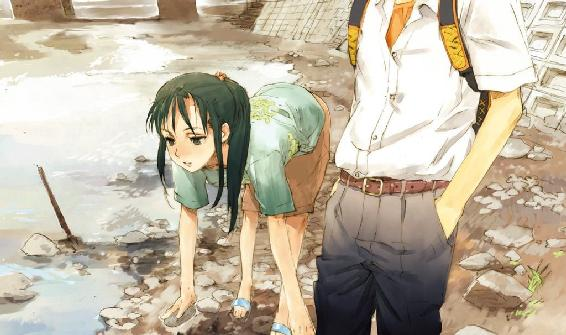

| 侵略する少女と嘘の庭 (MF文庫J) | |
| 清水 マリコ & toi８ | |
| メディアファクトリー (2006) | |

ＭＦ文庫Ｊ
侵略する少女と嘘の庭
清水マリコ
カバー・口絵・本文イラスト●ｔｏｉ８
編集●土方隆
この町の、
片隅に素敵な呪い。
お姫様は、
内緒で戦士募集中。
＊
「絶対にいやだ」
「一回だけでいいから」
「その一回がいやだ」
「僕も頼まれたんだよ」
「だったら断れ」
「断るの苦手なんだもん。それとも牧生が断ってくれる？」
おれが頼まれたんじゃないのになんで断るんだ。しかし、だんだん押し問答になってきたので、牧生は長い腕を組んでため息をついた。
「こういうの、牧生がきらいなのはわかってるよ。僕と唯も、遠まわしに言ってはみたんだよ。だけど、僕らなら身内だから頼めるでしょって」
「ごめんね牧生君......」
眉をさげて唯がため息をついた。困るよね、と琴美も唇を尖らせる。小暮琴美は女の子だが自分のことを僕と呼ぶ。丸い黒目にマッシュルームカットで、くるくるした動きが小動物に似ている。唯は反対に垂れ目で色白、全体にのんびりして空気がやわらかい。牧生と唯――滝瀬唯、琴美、それにいま三人が待っている補習の梶原裕貴を加えた四人を、周囲は「身内」と認識している。が、四人とも、血縁などはまったくない。全員、家がなにかしらの店をやっているため、親同士の商店会つながりで、つきあいの長い幼なじみだ。
外の風が開け放したままの窓から入ってきた。
二学期の二日め。裕貴の補習は夏休みの宿題をさぼった罰も兼ねている。
牧生は半袖の腕をポリポリ掻いて外へと目をそらした。
「じゃあ、本当に一回きりだぞ。失敗したら、二度はないからな」
「ありがとう！ やっぱ牧生だなあ」
裕貴じゃあこうはいかないよ、と琴美はほっとしてうなずいている。なに言ってんだ。おれだって、こうはいきたくないけどこのままじゃ、お前らの立場が悪くなるだろ。帰りまで、ずっとお願いといやだの繰り返しもいやだし。
「じゃあ、とっととやって終わらせるね」
琴美は教室後ろにある棚の中から、メモ用のミスコピーのプリントを一枚持ってきた。
「......運命の女神さま、お願いします」
つぶやいて、制服のポケットからシャープペンを抜き、祈るように額にかざしてから書きはじめる。
早川牧生
HAYAKAWA MAKIO
６月23日生まれ 男
さらさらとプリントの裏に書いてハートで囲み、下に五十音とアルファベット二十六文字と０から９までの数字を書いた。
「前髪くれる」
「貴重品だからな」
牧生は自分の短めの前髪を一本抜いて琴美に渡した。この「運命の女神さま」は、Ｋ中の女子の間ではやっているゲーム兼占い兼オカルトもどきで、シャープペンかボールペンに男子の前髪を巻いて女神に祈ると、女神がその男子の「運命の相手」を教えてくれるという、非常にうさんくさい遊びだった。
前髪を使うのは運命の女神には前髪しかないという言い伝えから来ているというが、それは運命の女神ではなく幸運の女神だと、噂を耳にした先生から聞いた。やはりうさんくさい。女の子の面倒な好奇心に、男をつきあわせるためのいやな口実だ。そして前髪を渡す男は、男の間でからかわれるいっぽう、誰からも前髪を頼まれない、つまり女子から関心を持たれない男も内心微妙につらかったりするので、総合すれば、男にとってこの遊びは、一刻も早くすたれるべきものだ。
「だいたい、誰に頼まれたんだ」
牧生もすたれろに同意しながら、牧生の運命を知りたがる女の子はやはり気になる。
「それは秘密」
「教えたっていいだろ」
「牧生君でも、気になるんだねー」
唯が意外そうに睫毛をぱちぱちさせた。気にして悪いか。牧生は心で少しだけ愚痴った。子どものころから背が高いせいか、牧生は年齢より上に思われ、四人のまとめ役になることが多い。それはべつにいやではないのだが、勝手に大人扱いされるのも困る。
「それじゃあ、牧生君も指で支えて」
前髪を巻いたシャープペンを文字を書いた紙の上に立て、左手の人さし指をそえて支える。祈りが女神に届けばペンはひとりでに動きだし、運命の相手の名前をなぞる。
もうなにもかもが恥ずかしい世界だ。
早く戻って来てくれよ裕貴、と思いつつ、牧生は薄い緑のシャープペンに触れた。唯の白い指、琴美の子どものように爪の丸い指。そして牧生の長い指先に三方を支えられ、ペンはあやういバランスで立っている。
「女神さま......早川牧生の運命の相手を教えてください......」
聞こえるか聞こえないかくらいの小さな声で、琴美は繰り返し女神に祈った。唯も目を伏せ、唇を小さく動かして、同じ言葉で祈っている。牧生はぼうっとペンと紙を見ていた。これで運命の相手が決まるなんてまず信じられないし、そもそも「運命の相手」なんて考えじたい嘘くさい。帰りたい。帰ったら、昨日から始めたアレの続きをしよう。牧生は家での大部分の時間をつぎこむ趣味について考えた。が、そばで聞こえる女神さま女神さまのつぶやきにじゃまされ、集中できない。誰なんだ。おれにこんな恥ずかしい気分を味あわせ、ありえない運命の相手を知りたがる女の子は。
「動かないね......」
「だめだよ、集中してもっとお祈りしないと」
唯がせっかく諦めかけるのを琴美が厳しい口調で止めた。こいつ、頼まれただけなのに真剣だな。牧生はちょっと驚いた。まあ、こぐみは僕とか男ぶるわりに、中身はいかにも女子で信じやすいところあるからな。
「女神さま女神さま......」
琴美は懸命に祈っているが、牧生がこう雑念だらけでは、万一、万々一本当に女神だか運命だかがあるとしても、ペンは動いてくれないだろう。申し訳なく、同時にちょっとイタズラ心がわきおこった。
牧生は、少しだけ指に力を入れた。
「......あっ！ 動いた！ 動いてる！」
琴美がおびえながら嬉しそうに叫んだ。
「僕、なにもしてないのに」
「わたしも。わたしも動かしてないよ」
「おれも」
最後の牧生の言葉は嘘だ。ペンは牧生が押して動かしていた。適当に動いて名前などは示さずに終わっておけば、琴美たちは満足するだろう。オカルトらしい現象は起きたが、肝心の答えは見つからないまま、というテレビの心霊バラエティによくある安っぽい終わりにするのが牧生のねらいだ。
「なんか、同じ文字の上を回ってる」
それは、人さし指だけで動かす都合上、あまり広い範囲に行けないためだ。
「う......う？ 『う』で始まる名前の誰かかな。内野。上原。誰かいるっけ」
違う。いかん、どうにかして別の文字へ移動させよう。なるべく自然に、そうっと、そっと......。
「に？ ええー、うにぃー？」
「うにって......牧生君にウニって、それは運命の仕事だよー」
怖い雰囲気の遊びなのに琴美も唯も笑いだした。笑うだろう。牧生の家は寿司屋なのだ。ウニもマグロもエビもイカも豊富にある。いまのところ、運命の仕事にする気はないが。
とにかく、意味のない言葉だ。牧生は懸命の細工を続けた。外から見たら、たぶん牧生が一番集中しているように見えるだろう。落ちてきた眼鏡を右手で直した。反動で、微妙に左手のペンを滑らせると、ペンは「わ」の字の上で止まった。
「わ？」
「う、に、わ......？」
「意味ないな」
牧生はそう導きたい結論を口にした。そうだね、と二人がうなずけばようやく終わる。
が。
「もしかして、ウラニワ......裏庭かな」
「そうだよ。よく見ると『ら』もかるく指してるよ」
「偶然じゃないか」
偶然なのだ。たまたま「ら」の字の上も動いただけだと、牧生は確実に知っている。だが言えない。
「裏庭だよ。きっといま、裏庭に、牧生君の運命の相手がいるんだよ！」
琴美は興奮して目を輝かせた。しまった、と牧生は内心頭を抱えた。女の神秘こじつけ力を甘く見ていた。
「女神さま、ありがとうございました。この紙は丸めて、シャープペンの芯と一緒に川へ流します。どうか光にお帰りください」
早口で琴美はゲームの終わりらしい台詞を言って、シャープペンから手を離した。同時に唯と牧生も手を離したので、薄緑のペンはカランと倒れた。
「すぐ行かなきゃ。紙の後始末はあとでいいよね」
「本気かよ」
「当然でしょ。相手を確かめなきゃ意味ないもん。裕貴だって、あとで絶対知りたがるよ」
「ばかこぐ。裕貴に絶対、こんなこと言うな」
言えば死ぬほどからかわれるのは目に見えている。牧生は女に優しいなあとか、言葉のあげさげまですでに聞こえる。
「でも、もしも本当に誰かいるなら、ちょっと見てみたい気もするね」
こういうときはいつも牧生に味方するのに、唯も積極的だった。夢見るような茶色の瞳で、恋愛よりも花や動物の話が似合いそうな唯だが、やはり身内の運命の相手は気になるらしい。
「よし、行こう！ ほら、牧生ぐずぐずしてないで」
「......勘弁してくれよ......」
ばかなこと、しなきゃよかったなあ。
琴美に煽られ、唯ににこにこ見あげられながら、牧生は改めて後悔した。
Ｋ中は川のすぐ南にあり、北側の旧校舎の裏手はほとんど堤防とつながっている。裏庭、とかろうじて言えるのは、非常口と焼却炉の間の空き地くらいだ。堤防に立てばよく見える場所だが、生徒が校内から裏庭へ来る用はまずない。
「ここで誰かいたら、まず運命だよね」
琴美は非常口の黒っぽい紫の扉を開けた。
「いるわけないね」
牧生は念押しした。
裏庭には、処分に困ったらしい湿った木材や、赤さびた鉄板などが適当に置かれ、足元はいつも枯れ草色の芝が這っている。
「蒸してんな」
牧生はシャツの襟に手をやる。
どこかの木でヒグラシが鳴きはじめた。
フィフィフィフィフィフィッ、とサラウンドするような蝉の声が、ふいに牧生の気持ちを不安定にした。
どうする？
もしも、本当にここに誰かがいたら。
――その一瞬の、迷いの隙につけこむように。
「あっ！」
先頭の琴美が急に足を止めた。続く牧生も、唯もかるくぶつかって立ち止まった。
「え......」
牧生の背後から斜めに行く手をのぞいた唯が、そのまま動かなくなった。
牧生はやばいくらい動揺して言葉も出ない。
フィフィフィフィフィフィフィフィフィッ......。
うそだろ。
なんでいるんだよ。
回るヒグラシを効果音にして、ストレートの髪が背中まである女の子が一人、立っている。制服の、半袖のブラウスの、細い腕を身体の脇に力なくさげて。
「運命の......？」
興奮、というより少々不安げにつぶやく琴美。不安の理由は牧生にもわかった。女の子の後ろ姿に覚えがある。肩より長い場合は結ぶようにという校則を無視した、キラキラと夕日を浴びて光る髪。
「なに」
振り向いた、きれいな切れ長の猫のような目。力がある。自然で形のいい眉、細い鼻。
「なに見てんの。気持ち悪いんだけど」
ピンクの唇に甘い声。だが、言葉にはトゲを含んでいる。
「中山......」
問いに答えず牧生は自分たちを睨む相手の名を口にした。
中山りあ。
顔のきれいさと裏腹な性格の悪さで、クラスだけでなく学年中で、よく知られている少女だった。
嘘の罰のようにそんなのと運命の出会いをさせられてしまった。
琴美はりあの視線に押されて、ここに来た事情をしゃべってしまった。
「......ばかみたい」
肩をすくめ、りあは細い髪をゆらしてフンと顎をあげた。
「ばかみたい」
繰り返した。くふっと、今度は気の抜けた、かすれた声の笑いが混じった。
......まあ、ばかみたいには同意だが。
牧生はムッとしながら、胸の中だけでうなずく。
琴美は唇を曲げてうつむいていた。
唯は困り眉で斜め下を見ながらほっと息をついた。
りあはもう一度、牧生だけを見た。
「なんだよ」
「べつに」
小さい唇の両端に笑い。
「く......くくくっ」
息だけの「く」を繰り返したあと、りあはすごい速さで走り去っていった。
ヒグラシの声と笑い声が混じって、怖いような音が牧生の耳に残った。
――帰り道。
「中山かよ！」
事情を聞いて、裕貴は意外にもまじめなリアクションで眉を寄せた。
「やばくね？」
「まあ」
牧生はとりあえず曖昧にうなずく。爆笑されると決めつけていたので拍子抜けした。
「なにやってんだかなあ......」
裕貴は長い前髪をかきあげ、道ばたの駐車場のフェンスに寄りかかる。牧生と唯、琴美も裕貴を囲むように足を止める。この駐車場はＫ中生徒が放課後の相談や秘密の告白でよく使う場所だ。周囲に似たような場所は四か所ある。
「だいたい、こぐみが牧生に無理難題を押しつけるのがいけない」
琴美をこぐみ、あるいはこぐと呼ぶのは、男では裕貴と牧生だけだ。牧生は人前では小暮と呼ぶが、裕貴はあまり気にしていない。
「なんで僕のせいなの？」
「お前のせいだ」
裕貴はきっぱりと言って無意味にいばった。違うよ、ひどいよと琴美は怒るが、裕貴と琴美の言いあいはいつものことで、遊んでいるようなものだとよく知っているので、牧生も唯もなにも言わない。
「しかもお前、中山にわざわざ、あなたはどうやら牧生の運命の相手のようですとか言ったんだろ？ ばかとしか。掘った墓穴に自分で飛びこんでどうすんだよ」
「だって、じゃあ裕貴ならそこでなんて言う？ 僕たち三人で裏庭に集まる理由なんて、とっさに思いつくの難しいよ」
「中山のほうはどうして裏庭にいたんだよ」
裕貴は琴美の反論に答えない。
「焼却炉に用事があったんだって」
「あんなところになんの用があるんだ」
焼却炉はコンクリートのブロックで三方を囲っただけのものだが、ほとんど本来の用途では使われることなく、粗大ゴミの一時置き場になっている。それも、生徒が使用するのは、学期末の大掃除のときくらいだ。
「用なんて、教える理由ないって言われた」
「じゃ、お前らも教える理由ないでよかったじゃん」
「裕貴」
もういいだろ、と牧生が間に入る。
「いいよ牧生、かばってくれなくてもいい」
琴美は半ば本気ですねている。そろそろ止めて正解だった。
「かばってないよ。ただ、問題は『どうしてこうなったか』じゃなくて『この先どうなるか』だからさ」
「冷静だな牧生。お前が一番動揺してもよさそうなのに」
「最初はおれも驚いたけど、現実的に考えれば偶然だしな」
あとで裕貴にだけ、ペンを操作してたのはおれだと言おう。
「けどあっちは、そうは取らないぜ」
裕貴は腰の高さのフェンスにサッと飛び乗った。
「運命とかは信じないにしても、牧生が中山に興味があって、こいつら（唯と琴美）二人が協力して、近づいてきたと思うだろ。この先どうなるかを予想するなら、つまり中山伝説のはじまりだ」
「......」
みんな顔を見あわせて息をついた。
中山りあには嘘か本当かわからない噂や伝説がいくつもある。
小学生のとき、りあは容姿の良さを自慢したためクラス中の女子にきらわれ、給食の時間に一人にされた。すると翌日、仕返しとしてりあはクラスの女子全員の机の上に黒のマジックで落書きした。成績の良くない子の机には「バカ」身体の大きい子の机は「デブ」地味な容姿の子の机には「ブス」など、乱暴なようで的確に相手の弱点をついた攻撃で、女子は全員朝から大泣きさせられたという。
男子相手でもりあは容赦がなく、イタズラでりあに告白の手紙を書いた男子は家に電話をかけられ「お宅の○○君が私をいやらしい目で見ています」と母親に約一時間告げ口をされ、正義のつもりで「お前いやなやつだな」とみんなの前でりあを怒った男は「足がクサいくせにかっこつけても笑えるだけ」と切りかえされ、いずれもひどいトラウマになったと言われている。
そのほか、男教師のえこひいきを狙って誘惑したという笑えないものから、光る神の力を利用し呪いを放った、クラス全員の死ぬ日を予言したなど、すでに人間の域を超えたものまで、いやな噂怖い伝説を抱えるりあを、一部の男子はキラー悪魔中山と呼んでいた。
「もしもこれから、中山が牧生を攻撃してきたら、おれたちは悪魔伝説の目撃者になるな」
「変な冗談やめてよ」
琴美が唇を尖らせるが裕貴は聞かない。
「帰ったら、すでに牧生の家に電話いってるかもしれないな。悪魔だから寿司政の出前専用の番号に電話して、ずっと切らずに営業妨害だ」
「地味な悪魔だな」
自分はいいが、店に迷惑をかけられると困る。
「わたし、中山さんに連絡して、わけを話してあやまってみようか」
「いや、唯がそこまでしなくてもいいよ」
牧生は唯の申し出を断った。
「なにも起こらないかもしれないし、起きてもおれがちゃんと話つけるから」
「通じる相手か？」
「どうにかなるだろ」
よく考えれば運命の相手も中山伝説も、嘘くさいという点では同じだった。
裏庭ではかなり動揺したが、こうして見なれた顔に囲まれ、日常の時間に戻ってみると、少なくとも、おびえることはないように思う。来るなら来いと、あの挑む目に対抗してみたい気持ちも少しはある。
「牧生君がそう言うなら、きっと大丈夫だね」
垂れ目の唯がにっこり笑って、それから鞄をゴソゴソやった。
「お。待望のおやつタイムか？」
裕貴が嬉しそうにフェンスから降りる。唯は鞄から白にオレンジの花模様の紙袋を出し、はい、と裕貴にそれを渡した。
「きたきたきた」
裕貴はさっそく袋を開けて、中からねじった形のデニッシュを取り出し、ぱくっと大きくかぶりついた。
「ぶめー。やっぱ唯んちのチョコデニッシュうめーな」
脳が疲れたときには糖分糖分、と裕貴は続けて二つデニッシュを食べる。唯の家は「シャルム」という名の手作りパン屋で、唯はしばしば店の残りや試作品を袋に入れて持参する。牧生はここのチーズロールが好きだが、裕貴は甘党なのでチョコデニッシュ派だ。ねじりの中心にホイップクリームを伸ばして上からチョコをコーティングしたデニッシュは、「ふわふわホイップとパリパリチョコの対比をしっとりデニッシュが包みこむ」と雑誌にも紹介された、シャルムの人気商品だ。
「クリームついてるよ」
琴美が裕貴にティッシュを渡した。
「お前らはもう食ったのか？」
「裕貴待ってる間にもらった。でもチョコは裕貴にとっておいたよ」
「こぐみいいやつだな」
「こんなときだけじゃん」
肩をすくめたが、琴美は笑っていた。ちなみに琴美の家は三年前にコンビニに改装した酒屋、裕貴の家は持ち帰りの惣菜も扱う定食屋だ。
裕貴のおやつタイムが終わると、四人は再び帰り道を歩いた。
「山が近い」
行く手正面の丘陵を見あげて唯がつぶやく。
「ほんとだ」
牧生も見る。斜面を削って段々と建てられた家の並びと、ところどころに広がる緑の森が、いつもより若干せりだして見える。
「雨降るんじゃない」
琴美も見あげる。丘陵のてっぺん、コンクリートの給水塔の向こうに広がる空が黄色っぽい。夕立が来そうだ。
「牧生、メテオよってくか？」
裕貴は空を見ない。学校を南に、いま四人が歩いている道をまっすぐ行くと国道にあたる。国道の信号を渡ると丘陵地だが、メテオは信号と丘陵入り口の角にある。
「よってく」
じつは、牧生は昨日も一人で行ったが、メテオなら毎日行っても退屈しない。
「僕も行く」
「あそこは男の楽園だから女はだめ」
裕貴はおやじエッチくさい言葉で琴美を拒んだ。むろんメテオは女子禁制のおやじエッチくさい場所ではない。正しくはメテオ模型店といい、模型のほかにゲームソフトや駄菓子、夏はクワガタや亀などを売る店だ。店頭にはワンプレイ五十円の古い格闘ゲームの筐体、平たい台に水色のラジコンレーシングのサーキットが置かれ、ゲームの合間にベンチや古いスツールに座って休むこともできる。地元の男子小学生にとってはまさに楽園のような店なので、裕貴が言うことも嘘ではない。男子中学生にも楽園かどうかは微妙だが、牧生にはかなり重要な場所だ。
「けち。じゃあいいよ、唯んちで一緒に美術の課題やる」
「やってろよ」
「あとで言われたって手伝わないから」
「お前に頼む予定はないね」
じゃあな、と裕貴は琴美を突き放すようにかるく手を伸ばし、牧生をつついて変わりかけた信号を走って渡った。牧生も走り、唯と琴美に手をあげて別れる。
「あー、やっと女がいなくなってせいせいした」
メテオの青と白の庇の下まで来ると、裕貴は首を左右に振って伸びをした。
「お前、パンだけ食っといて悪いやつだな」
牧生は少しあきれて眼鏡を直す。
「悪くないだろ。パンは礼も言ったしうまいってほめたよ」
そういえばパン食って喉がかわいたな、と裕貴は店の横にある販売機へ行き、缶入りウーロン茶を買って戻ってきた。
「だいたい、唯はどうせ牧生が本命なんだから、おれがなに言っても気にしないだろ」
「なに決めつけてんだよ」
二人は八角形のマークが入ったアイス広告入りベンチに座った。
「だってさ、さっきの中山の話のときも『牧生君が言うなら大丈夫だね』とか、お前のこと信頼しまくりじゃん」
「あれは、話をまとめるために言ったんだろ」
牧生は話を切りあげたかった。
「でもさあ」
裕貴はしつこい。牧生は困る。
「あいつはべつに、そういうんじゃないって」
もしも裕貴の言うように、唯が牧生に気があるなら、運命の女神さまの遊びのとき、もっと違う態度になるはずだ。
「けど、唯は、男の中でわりと人気あるよな。誰か告白したらどうする？」
「どうでもいいよ」
実際にそういうことが起きたら、少しは気にするかもしれないが、いま言われても考えられない。
「本当か？ かっこつけじゃなくてか」
「お前はもしもこぐみが誰かに告白されたらどうする」
「はあ？ 全然かんけーねーよ」
「ほらみろ」
男二人、女二人の四人で身内扱いだから、裕貴に琴美、牧生に唯で二組をくっつけるひやかしはあるが、現実にはそういうことはない。自分たち四人は、幼なじみで普通の友達よりは親しく、遠慮のない間柄、というだけだ。
たぶん。
「お」
牧生と裕貴がいるベンチの前を、すらりと背の高い女の子が通った。色が白く、天然パーマらしいショートの髪がくるくるして、ちょっと日本人離れした顔だちだ。女の子は牧生と裕貴をちらりと見ると、ああ、と知った顔を見る目でかるくうなずき、そのまま通り過ぎて店の奥へ行った。
「メテオねーちゃん帰ってきたな」
裕貴が後ろ姿を目で追いかける。メテオねーちゃんと呼ばれる彼女はこの店の娘で、牧生たちより三つくらい年上の高校生だ。白いソフトな布地のシャツごしの身体の線と、短いプリーツスカートから伸びる脚がまぶしい。
「ねーちゃん、また胸が成長したと思わねえ？」
裕貴が牧生にボソボソ言った。
「お前」
思っても言うな、恥ずかしいから。
「やっぱここは男の楽園だよな」
「お前......」
どこのオヤジだよ。比較的小柄で痩せていて、可愛い顔と言えなくもない裕貴だが、中身は牧生よりも（ある意味）男らしい。牧生はベンチから立ちあがった。女がいなくなってせいせいしたと言いながら、女の話を続けるのはどうも気がひける。それよりも。
「どこ行くんだよ」
「奥」
ラジコンに集まる小学生の脇を抜け、牧生はメテオの店の中へ入った。
「お、いらっしゃい」
メテオの主人である小林さんが、牧生を見てレジの奥から声をかけてきた。牧生は無言で会釈して答える。にぎやかな店頭と比べ中は静かで、床から天井まで様々な大きさの箱が積まれている。薄暗い。箱の中身はすべてキット、さまざまなジャンルのプラモデルだ。昔ながらの戦車や軍艦も少しはあるが、ほとんどは、ＭＳ――人間が中で操縦するタイプの機械兵のプラモだ。牧生もこのプラモデルを作るのが大好きだった。教室で牧生が思い浮かべた、家での時間の大半をつぎこむ趣味とはこれのことだ。
ＭＳは、もとは人気アニメのシリーズだが、アニメファン以外のモデラーにも人気で、店のディスプレイに飾られているのも、ほとんどが凝って作りこまれたＭＳだ。牧生はじっとディスプレイを見つめた。やっぱすげえな。この塗りとか、パーツの使い方とか。大磯さんのワザだな。大磯さんはメテオに自作のＭＳをよく飾られるモデラーの一人で、牧生がいま、注目している人だ。といっても、ディスプレイケースの隅に小さく貼られた「大磯」という作者名以外、牧生はなにも知らないのだが。
うーん。
機体をムラなく鮮やかな紫と青に塗りつつ、歴戦を物語るようヨゴシを入れた大磯氏作のＭＳを見るうち、牧生も作りかけのプラモと向き合いたくてうずうずしてきた。
「おれ、帰る」
いつの間にか来て、少し離れてゲームソフトを見ている裕貴に声をかける。
「じゃあおれも行くよ」
二人は再びラジコンの脇を抜けて国道沿いに戻った。
「なんか買う物あったんじゃないのか」
「べつにない。牧生と二人になりたかっただけだ」
「気持ち悪いな」
「いや、つうか女といるとさあ。ウザいつーか落ち着かないっつうか、こう、無理やりガキの続きさせられてるみたいでカユいっつーか」
「ああ」
気持ちはわかる。唯たちがきらいなわけではないし、自分たちに比べ子どもっぽいとも思わない。が、いつも当たり前に四人でいるのを、窮屈に感じることもある。
二人は黙って国道沿いをてくてく歩いた。メテオから百メートルもいかないうちに、もう「寿司政」の看板が見えてくる。牧生の家だ。裕貴の家「花園亭」はさらに先。
「そういえば、言ってなかったけどさ」
牧生は寿司政の手前でふと思い出した。
「今日のあの、運命の女神とかいうの、嘘だから」
「そうなのか？」
「ああ。おれが自分で動かしてたんだよ」
「......ふうん」
「唯と琴美には言わなくていいけどな」
「そうだな。じゃあな」
「またな」
裕貴は牧生の嘘を聞いても、驚いた様子もなく納得していた。さっきは悪魔伝説がどうのと言ったが、話が終わればあっさり忘れてしまったらしい。それでいい。たしかに男同士はこういうの楽だな。
牧生は店の裏口つまり自宅の入り口へ回りながらほっとした。
ほっとしたので、女の子はこうした話を簡単には忘れないことを忘れていた。
寿司政は、牧生が生まれて間もないころ、父がこの町で開いた店だ。
最初は小さな店だったが、一度改装していまは一階がカウンターとテーブル数席、二階が座敷の宴会場。父は店に出るたび「まったく不景気で。近頃じゃみんな回る寿司のほうへ行っちゃって」と客に愚痴るが、中学生の目で見るかぎり、まあまあ店は繁盛している。
敵情視察と称して父は牧生や兄の政彦を誘って回る寿司にもよく行く。政彦は牧生より四つ年上でいま受験生。あまり熱心に勉強をしている気配はない。牧生も兄も、いまのところ寿司屋の二代目になる予定はない。
自宅は寿司政の二階の半分と三階にある。外づけの階段を上がった二階が玄関、当然室内にも階段はあるが、外階段でも直接三階の部屋に行けるので、牧生はたいていこっちを使う。ドアを開けると細長い廊下、向かい合うドアの右側が牧生の部屋だ。北向きだが窓の下は寿司政の駐車場と国道で開けているし、三階だから日あたりはいい。しかし、中は散らかっているので大変せまい。
鞄を投げ出し、牧生はベッドに置いてあるジャージに素早く着替えると、窓際のプラモ制作用机に向かって落ち着く。座卓サイズの小さい机に、ホームセンターで買った座椅子が牧生の制作スペースだ。椅子のあるでかい勉強机は、テスト期間以外はほぼ物置。
「さてと」
牧生はかるく肩をまわして、お楽しみの箱を開けて作業を始めた。先月発売になったばかりのプラモで、最新のホビー雑誌でも特集しているＭＳ。組み立てるだけなら一日でできるが、それでは一か月の小遣いの三分の一という出費にあわないし、少しずつ、よりリアルでかっこいい機体に仕上げていくのもまた楽しみだ。
牧生は星のステッカーを貼ったツールケースから愛用のニッパーを取り出した。パーツはランナーと呼ばれる同じプラスチック素材の枠に繋がれているので、まずはこの切り離しをしなければならない。傷つけないよう、少し余裕を持って切り離す。パチン。
パーツの数は少ないものでも三百はあるので、時間をかけて組み立てるなら、一気に全部はバラさずにおく。バラバラのパーツを見るだけでは、慣れない人にはどこが何になるのかピンと来ない。牧生も初めて見たときはわからなかった。牧生にプラモを教えた兄の政彦の手先を見ながら、よくわからない灰色の部品がＭＳを動かす関節になっていくのを見たときは、胸がどきどきして興奮した。手品を見るような思いだった。
いまは、ここは地道な裏作業だからあまりおもしろいと思えない。早く正確に仕上げることが目標だ。名人はここにもこだわりを入れるが、牧生にはまだそこまでの予算とスキルがない。パチン。
あらかたランナーからの取り外しが終わると、今度は切ったパーツの形を整える。ニッパーを裏返しにあてて、パーツ周辺に残ったランナーを切る。パチン。あ、ちょっと深く切りすぎたか。あとで削ろう。パチン。パチン。
背中を丸め、長い首も丸く下に向けたまま、牧生は作業に没頭していく。プラスチックの手触りが好きだ。小さい物を、指先でつまんで丸めるように吟味しながら、切ったり削ったり形を整えていくのが好きだ。
階下から酢飯の匂いが漂ってくる。夜用に炊いたシャリに酢をあわせ、扇風機で乾かしているのだろう。窓の外では遠く雷、国道を走る車のエンジンの音が湿って重い。牧生は灰色のパーツを組み終え、ボディの白と青の切り離しにかかる。
「......ふう」
肩をまわし、眼鏡を直しながら蛍光灯を見あげた。一時間、もっと集中していただろうか。スチールの棚にずらりと並ぶ牧生制作のＭＳ。あのZGMF-1000は塗ってないから、雑誌で見たバリエーションで改造してみるかな。
コーラでも飲みたい気分だった。下に行き、冷蔵庫を開けようかと立ちあがる。
と。
コツコツ。
外のドアを誰かが叩く音がした。なんだよ。また政彦に客かな。兄の政彦は昼夜問わず友達を家に呼んでいるため、三階のドアがノックされることもよくある。しかし政彦はいま家にいない。放っておけば帰るだろうけど、一応、出かけてますって言っておくかな。
牧生はそっとドアを開けた。
中山りあがそこに立っていた。
「うわあああ！」
と、悲鳴をあげたつもりが息を吸いこんだきり声も出なかった。
「なんで驚くの」
りあは制服で、髪が湿っていた。牧生は固まったきり動けなかった。ドアを閉じることもできなかった。怖い映画で、テレビから白い服の女が出てくるのをじっと見守るしかなかった男も、こんな気持ちに違いなかった。
「おいしそうな匂い」
りあは棒立ちの牧生を見あげた。白目に浮く、意志を感じる黒い目。
「寿司屋だから」
「お寿司って、玉子としいたけと紅しょうがのあれ？」
「それは五目。うちは握りの寿司屋」
寿司の話をする場合だろうか。しかし思考が停止しているので、自分から言うべきことが言えない。
「お腹すいたな」
「商売物は出せない」
と、父にはよく言われるが、実際に友達が来ると父はいいところを握ってくれたりする。
「握りっておいしい？」
「うまいと思う。店によるが」
会話するうち、少しずつ、牧生の中に冷静な頭が戻ってきた。ずっとＭＳと向き合っていて、一人の満ち足りた気分にいきなりだったから、最初はついていけなかったが、いまなら、どうにかなりそうだ。
「で、なんの用だ」
「泊めてもらえないかな」
腰に衝撃がきた。また停止しかけた。こう見えておれは運動不足だ。あまり心身を痛めつけないでほしい。
「無理だよ」
「部屋せまいの？ 寝られなくてもいいよ、置いてくれるだけで」
「そうじゃなくて」
お前、これまでおれとほとんど口をきいたこともなかっただろ。いや、たとえそれなりに親しかったとしても、普通、女の子は、いきなり一人で男の家に泊まったりしない。琴美や唯、牧生の身内と呼ばれる女の子たちでも、さすがにそんなことはしない。
「困ってるの私」
「おれが困ってるよ」
ありえないよ。これがキラー悪魔中山の攻撃なのか。
「迷惑なの？」
「かなり」
迷惑というより動揺している。バレたくないが、足が震えている。夕暮れの、ヒグラシの鳴く裏庭のりあは、なんというか好敵手のような凛々しさがあったが、薄闇と遠雷を背負って牧生の家のドアに立つりあは、か弱そうに見えるのにより強力だ。湿って首や肩にはりつく髪、白いシャツの袖から伸びる細い腕。牧生はじりじり陥落しそうだ。なにが陥落するのかよくわからないが。
「私たち、運命の相手なんでしょ」
「うわあっ......」
言われたらいやだと思っていたことをやはり言われた。なにか胸に刺さった。嘘のはずなのに、りあの唇から言葉が出ると、確定してしまいそうで恐ろしかった。
――牧生。ご飯だけど。
しかも階下から母親の声だ。
――誰か来ているの？
「いない。いま行く」
りあが口を開こうとするのを手で制し、牧生は早口の小声で言った。
「とりあえず......外、えっと下の、うちの裏、向こうに行った先に小さい川みたいなのが流れてるから、そのへんで待ってて。帰るなら、帰ってもらうほうがいいんだけど」
「待ってる」
りあはこっくりと素直にうなずき、タタタタと軽い足取りで階段を降りた。はあ、と牧生は思いきり脱力して、壁を伝いながら室内の階段を居間へ降りていった。
家の裏手は自家用と従業員用の駐車場。そこを抜けると一車線ギリギリの細い道、緑のガードレールの向こうは用水路だ。黄色くあせた蛍光灯の下にりあがいた。
「ご飯、なに食べたの」
牧生が行くと、りあはまず訊ねた。足元から草と水のにおいがした。
「え、普通に肉と野菜とみそ汁だよ」
「お寿司じゃないんだ」
「相当腹へってるな」
「ばれた」
「ばれるよ」
寿司食わせろってことかよ。図々しいんじゃねえの。しかしいま、話すべきはそのことじゃない。なにから言うか。運命がうんぬん、はとりあえずおいて。
「ええとね。なんで、家に帰らないの」
「追い出されるから」
「追い出されたのか」
「違う。帰ると、追い出されちゃうから帰りたくないの」
さっぱりわからなかった。しかし、りあはそれ以上言う気はなさそうだった。
「じゃあ、誰か女の子の友達に泊めてもらえば」
「そんな人いない」
りあはきっぱりと言った。
「お前、もしかしてさみしいやつか？」
「黙れ」
いきなり下からパンチが来たので牧生は反射的に手のひらで止めた。肉の薄い手だった。
「いっとくけど私、運命も利用だから」
「はあ？」
牧生の手にパンチをぐいぐい押しつけて上目づかい。
「運命の相手とか気色悪いこと言って押しかければ、蹴り出されてもしかたないって思えるでしょ。それであとで、私の悪魔伝説増やしてもいいよ」
「言ってることメチャクチャだぞ」
だがわかる。無理やりは承知の上だから、どうしてもだめなら諦める、きつく拒絶されても傷つかない、という意味だろう。
牧生は十五秒くらい考えた。悪魔伝説は増やさないから家に帰れ、と諭すのがカッコよく、常識的であることはわかっていた。
が、牧生にとって今日の放課後から急に存在が濃くなった、中山りあという女の子を、もう少し濃くしたらどうなるのか、怖いもの見たさに似た気持ちがある。勝負を挑まれ、負けたくないような気持ちもある。そして、気が強く、人に借りを作るのが大きらいらしい中山りあは、友達もなく、他に行くところもないらしく、牧生が肉と野菜とみそ汁の夕飯を食べている間、一人で、黄色い街灯の下で待っていた。
なら。
「......泊めるのは、わからないつーか、たぶん無理だけど」
牧生はりあの小さい頭を上から見ながらボソボソ言った。
「とりあえず来るか？ ここにいても、足首とか蚊にさされるだけだし」
「......」
無表情に見えてりあの目にたしかに感謝が浮いた。
「ただし」
牧生は声をやや大きくしてハッキリ言った。
「おれの部屋を見て、余計なことを一言でも言ったらすぐ出てってもらう」
女の子には、オモチャのロボットにしか見えないだろうＭＳを、たくさん飾っている牧生の部屋。それを頼られたとはいえキラー悪魔に見せるのは、危険どころか明らかに自爆行為ではないか。ひどい言葉で傷つけられるかもしれない。と、家に来るかと口に出してから気がついた。ばかかよおれ。
「わかった」
なにか言い返すかと思ったが、りあは神妙な顔でうなずいた。
「じゃあ、見つからないように行くぞ」
「うん」
牧生は周囲を見ながら階段をあがってりあを手招きした。りあは素早く、ほとんど足音もたてずに移動した。政彦が出かけていてつくづく良かった。父と母は、今日はもう、まず三階にはあがってこない。
「靴持って。こっち」
最低限、足の踏み場程度に物を寄せ、牧生はりあを部屋に入れた。ドアを押さえる横をりあが通ると、地球に優しそうなシャンプーの香りがした。
「わあ......」
りあは珍しそうに周囲を見た。りあの頭より高く積まれたプラモの箱。スチールの棚にも、窓の下にもずらりとＭＳ。牧生はひどく緊張していた。いま、りあが「わあ」のかわりに「ふうん」と言ったら、もうつらい気持ちになりそうだった。
「すごいね」
「趣味だ」
「よく見ていい？」
「どうぞ」
りあは手近なところから顔を近づけてプラモを見た。やりとりしてから、ここでＭＳをまるで無視されたら、それはそれでいやだったかもしれないと牧生は思った。丸くて端だけがツンとあがったりあの目にじっと見つめられ、ＭＳたちも緊張して見えた。長い睫毛が上下している。湿り気のあるりあの髪が、ぱらりと肩から胸に落ちた。
「飲み物持ってくるよ」
間が持たないのでりあの肩ごしに声をかける。
「ありがとう」
りあは振り向かずに小さくうなずく。階段を降り、牧生は二階の台所へ行った。あいつ、腹へってるみたいだから、なにか食わせたほうがいいのか。しかし、晩ご飯のおかずは政彦の分しか残っていない。これは食べられないし、まさか父や母に事情を話すわけにもいかない。どうするか、と冷蔵庫を開け、牧生は小さな希望を見つけた。
部屋へ戻るのに十分近くかかったが、りあはまだ、あちこちのＭＳを眺めていた。
「持ってきた」
「あ」
牧生の手にしている盆を見て、りあの目がさっと輝いた。
「寿司じゃないが、いまこれしかない」
冷蔵庫にあった袋入りのうどんを、ゆでて、冷やして水を切り、ざるはないので皿にのっけた。つゆはごまつゆ。瓶入りのをそのままお椀についだだけ。グラスに麦茶。
「食べてもいいの」
「ほかに誰が食べる」
机は物だらけなので床に直接盆を置いて座った。りあが座椅子、牧生は居場所がないのでベッドの上。
「早川が作ったの」
「作ったというほどの手間じゃない」
もっと簡単なカップ麺やお菓子もじつはキープしているが、そっちは自分の小遣いで買うので、このほうが懐が痛まないのだ。
「ありがとう」
りあが初めて笑った。目尻に二本、まつげの延長のような細い皺ができた。皮の薄そうな丸い額。照れた唇。こいつ顔がいいんだ、と牧生は実感して胸がつまった。唯も琴美も、平均よりは可愛いほう（裕貴談）だが、なんというか存在の持っている力が違う。いま急に、近い場所にいるからそう思うだけかもしれないが。
「これを入れてもうまい」
牧生は積み重なる緊張を隠して盆の上の一味唐がらしの小瓶を指した。
「うどんをこんなおつゆで食べるの初めて」
りあはめずらしそうに不透明な薄茶のごまつゆを揺らした。いただきます、の前に両手をかるく胸の前で組んだ。牧生は見るともなしにぼんやりとりあを眺めてしまい、目が合って慌てて眼鏡を直した。
「お。おいしい」
りあが感激の声をあげた。声に少しムニュムニュが混じっていた。
「牧生君、いつもこんなおいしいの食べてるの」
早川からいきなり牧生君かよ。なんなんだ。
「普通だろ」
「普通じゃない。私、おしょうゆの薄いおつゆしか食べたことないよ」
力説し、やっぱりお寿司作る家は違うねと、りあは的はずれのほめ言葉でうなずく。家の食器で、家の冷蔵庫にあったうどんを、今日初めて口をきいた（と思う）女の子が、部屋で食べている。不思議な気分だ。ＭＳや雑多ないろいろで散らかった牧生の中に、いきなり、小さい女の子が居場所を作って住みついたみたいだ。白いうどんが唇をつるつる通過する音がした。
「ごちそうさま」
りあは一気にうどんを平らげ、ていねいに盆にお辞儀をして麦茶を飲んだ。
また沈黙になった。テレビでも見るか。音楽でもかけるか。しかし、いまそんなリラックスした状況なのか。牧生は落ち着かない。
「ここにあるプラモ、牧生が作ったの」
「そう。全部」
今度は牧生か。もう勝手に呼べ。
「かっこいいね......」
それはプラモデルがかっこいいのか、作ったおれがかっこいいのか。いや気にするな。
「みんなロボットなの？」
「ＭＳっていうんだ」
「なんか聞いたことある」
「アニメでやってるからな」
――つっても、おれはアニメはよく知らないけど。こっち作るのが、ほとんど専門で。
いいわけっぽいかと微妙に焦りながらつけ加える。しかし嘘じゃない。アニメも一応全部見ていて、専用のＭＳに乗るキャラクターの名前や背景も知っているが、牧生の興味のメインはプラモだ。
「私、これ好きかも」
りあは牧生がアニメ好きかどうかは気にしないらしい。立ちあがり、スチール棚の真ん中あたりに、わりとどうでもよく置かれた一体を指さす。
「マイナーな趣味だな」
MRX-010――濃紺のボディに、丸みの少ない、冷たい印象を与えるデザイン。シリーズとしては古い作品のもので、前にメテオの安売りをまとめ買いした一つだ。
「そうなの？ たしかに、悪役っぽい感じするけど」
「まあそうかな。アニメだと、主人公の敵の女の子が乗るから」
「どんな敵？」
「えっと......ちょっと危ないっていうかイタいけど、けっこう可哀想なんだ。強くなるために記憶を操作されて」
牧生は固有名詞を出さずに話すよう努力した。名前を出すと、それがきっかけでどんどん細かく説明してしまう危険がある。前にそれで、唯や琴美にかなり引かれたので注意している。りあもたぶん、牧生にうどんを食べさせてもらったつきあいで訊いているだけだ。アニメやプラモが好きじゃわけじゃない。
「敵で、イタいけど、可哀想なんだ」
りあはさっきよりも感情を込めた目でそのＭＳを見た。イタい悪役に共感したのか。
「......これ欲しいって、言ったら怒る？」
「怒らないけどやらない」
モノは安かったし、特別好きな機体でもないから、たぶん二度と作ることはない。だからやれない。
「けち」
「お前な」
「だったら、牧生がプラモ作るとこ見たい」
「人に見られると気が散るからだめ」
「ほんとけち！」
「けちじゃねーよ。うどん食っといて偉そうにするな」
「じゃあいいよ。寝る」
「寝るって。お前！ おい！ おわっ！」
りあはベッドにいる牧生をどんと突き飛ばし、自分がそこへ横になった。
「降りろよ」
「いや」
怒鳴りたいが下に聞こえるとまずいので怒鳴れない。やめてくれ。中学生男子の、ベッドに、女子が横になって身体をくっつけるのはやめてください。
「おれの寝場所だぞ」
「じゃあ一緒に寝る？」
りあは牧生の枕に顔の半分を埋めたまま、片方の目だけで牧生を見た。濡れたように光る目。身体がカッとなって泣きそうになった。
「お」
襲うぞ、と口にしたら本当に襲ってしまいそうで怖くて言えない。牧生は頭に血がのぼってくらくらした。窓を開け、空気を入れ換えることにする。荒々しくビシャンとサッシを引くと、まだ暑い夜の空気がむっときた。下の道を、重い音をたててトラックが走る。
「飛び降りる気？」
「あほか。なんで飛び降りるんだ」
振り向くとりあがすぐそばに来ていた。
「いい眺めだね」
「三階だからな」
深呼吸し、牧生は身体と心を落ち着かせた。町並みはここから学校のそばの川まで少しずつ低くなっている。周囲にとくに高い建物もない。家の窓明かりと、田圃と梨畑の暗さがまだらに見おろせる。川を越えると、その先はまた少しずつ土地が高くなり、一番むこうはまた暗い丘だ。等級の低い星のようにかすかに、丘をのぼる車のライトが見える。
「学校見える？」
「あれ。ほら、黒い影になってる」
「へえー」
窓に並んで、二人はしばらく外を眺めた。牧生にとっては毎日見ている景色だが、初めての誰かと見ると新鮮に感じた。肩の距離がすごく近かった。遠く、電車の走る音。
「......中山さ」
「りあでいいよ」
「え、や、いや中山でいいよ」
「滝瀬たちのことは名前で呼ぶじゃん」
「あいつらと、お前は違うだろ」
唯や琴美は昔から名前で呼んでいるからそうするだけだ。りあを名前にしたら特別な気がする。
「で、なに？」
「うん......まあ、どうでもいいや」
「なんなのよ」
――中山は、こういうことよくしてるのか？
裏庭に来たのがおれじゃなく、ほかの誰かでも、そいつの家に泊まろうとしたか。
と、訊こうとしたのだが、やっぱりやめた。事前に牧生は「余計なことを一言でも言ったら出て行ってもらう」とりあに言った。そしてりあは、無言ではなく気をつかっているようにも見せず、ムカつくことは言っても牧生を傷つけることは言わない。だったら牧生も余計なことは訊かないでおこう。答えによっては、自爆の可能性もある。なぜ自爆なのか。考えずにおこう。
風が吹いて、りあの長い髪をかるく揺らした。髪はもうだいぶ乾いていた。
結局牧生は、自分でも驚いたが、その晩りあを泊めてしまった。店が終わり、両親が二階に戻ってきて、ほぼ同時に兄の政彦が帰宅したときが一番緊張する時間だったが、ひたすら静かにしてやり過ごした。みんな牧生はプラモに夢中だと判断したらしく、様子を見にくることもなかった。それからずっと息の声だけで家族が寝るまで話をして、寝静まったあとも用心してテレビを小さめの音で流しながら話した。
「お前、寿司本当に食べたことないのか」
「ない。のり巻きと五目しか」
その後、牧生はりあにせがまれて寿司ネタを一つ一つ解説した。
トイレに行くときはどうしても政彦の部屋の前を通ることになるので、牧生は自分が行くときはなるべく音をたてずに歩き、りあのときは普通に歩かせて使用回数をカムフラージュした。夜中も二時を過ぎると頭が重くなってきたが、寝ると言いだすのに抵抗を感じて起き続けていた。りあも一度も眠いとも寝るとも言わなかった。見るかぎり、本当に眠くないどころか、りあの目は元気で楽しそうだった。牧生も正直とても楽しかった。寿司の話のあとはＭＳが登場するアニメの話や、牧生がこれまで好きだったゲームの話、りあの読んだ漫画の話をぼそぼそ続けた。
「それで最後、ボスを倒したあとの勇者を誰も知らないんだ」
「死んじゃったの」
「違うと思う。でもこのゲームは、ふるさとに帰ってみんな幸せになりましたじゃないところが、メチャクチャ感動するツボなんだよ」
「そういうの、私も読んだことあるよ。国を追われたお姫様が、復讐の旅を続けて最後に女王様になるんだけど、女王様はせっかく取り戻した国からなぜか姿を消すの」
「なんかかっこいいよな。わかんないけど」
「かっこいい」
牧生がベッドに寄りかかり、りあが座椅子に座って向き合い、夜が明けて空が薄青になってくるまでそんな話をした。ときどき、身体がだるくなると、その場で横になったりもした。りあの脚はすらりとして白く細いことは確かめたが、それ以上を確かめることは（でき）なかった。最後は裕貴たち牧生の身内と呼ばれる三人のことや、昔の思い出まで話していた。うんうんと、りあはうなずいて聞いていた。
五時近く、仕入れで朝が早い牧生の父がそろそろ起き出すかもという時間、ギリギリの入れ違いでりあは帰った。ドアを開け、外に出ると朝の爽やかな空気がシャワーのようで、眠くて重い身体に心地よかった。鳥ではなくまだ夜の虫がシシシシシシと草むらで鳴いていた。
「じゃあね」
手をあげて、りあは振り返りながら国道を右にずっと歩いていく。小さくなり、見えなくなるまで牧生はりあの背中を見送っていた。一人になり、息をつくと達成と充実感のすごいやつがきた。徹夜して長いＲＰＧをクリアしてエンドロールを見る、あるいは新作ＭＳの最後の仕上げを終える、あの感じに甘さをぶちこんで漬かっているようだ。
なにもしていないが大人の男に近づいた気がした。
中山りあは、変わってるが可愛いところもある女の子じゃないか。
本当に中山が――りあがおれの運命の相手でもいいとまで思っている自分が、さすがに恥ずかしくなった。
この先も、またりあが家に来ることはあるのだろうか？
来たら今度は、どうにかして寿司を食べさせてやることにしよう。
とりあえず、このことは裕貴にも琴美にも唯にも秘密だ。
中山にも、学校で会ったら秘密だと言おう。いつ言おうか。二人で話せる時間はあるだろうか。
認めたくはないが牧生は完全にりあにハマって舞いあがっていた。
キラー悪魔中山が本領を発揮するのはこれからとも知らずに。
「二学期の班決めをします」
司会の日直が、黒板の前に立つ。二学期最初のロングホームルームで、議題は以前から決まっていた。
「男女混合の六人で一班になるか、男子のみ女子のみで二人から四人までのグループを作って、男女の班になるように組みあわせます。話しあいでまとまらない場合は抽選です」
板書しながら、司会が説明する。班は授業のグループ研究や掃除当番はもちろん、遠足や文化祭などのイベントでも行動を共にするので、誰と班を組むかはとても大事だ。
「どうする？」
各自グループを決める流れになり、さっそく、裕貴が牧生の席にやってきた。裕貴と牧生と、二人で組みになるのはまず問題ない。琴美と唯も、きっと二人でグループになるだろう。四人で組めば、あとは二人組の女子か男子を誘えば班になるが。
「......おれべつに、こぐみと唯とじゃなくてもいい」
裕貴が小声でそっとつぶやく。と、
「ねえ、僕たち、牧生と裕貴と、また一緒でいい？」
琴美が唯と手をつないでそばに来ていた。牧生はちらりと横の裕貴を見た。
「いいよ」
一秒弱、間をおいて裕貴はうなずく。そうだよな。見なれすぎた四人で固まるのも微妙に抵抗を感じるとはいえ、あえてこぐみたちの誘いを断る理由もないよな。牧生は裕貴の心情をじゅうぶん理解してなにも言わない。
「それじゃあ、あと川村か吉池でも誘えば――」
「私、牧生と同じ班になりたい」
「えっ」
突然会話に割って入った声に振り返ると中山りあがいた。丸い額、細い髪、細い首。澄んだきつい目。
「お前」
牧生は焦りまくってまず琴美たち三人の顔を交互に見た。三人は、りあを見たまま言葉を失って固まっている。
「なんで」
「名前で呼ばれてんのか牧生」
牧生が言いかけたところに裕貴がつっこみを入れた。
「呼んじゃいけない？」
牧生ではなくりあが答えた。
「いつからだよ」
「昨日から」
裕貴とりあが視線で戦う。
「なんでそう呼ぶか、だいたいわかるし、べつにいいけど」
琴美がいささかうんざりな口調で話に混じった。たぶん琴美は、昨日の「運命の女神さま」が原因だと思っているのだろう。そうと言えばそうだが、大部分は違う。
「中山、聞いてなかったの。班は六人か二人以上の組で作るんだよ」
「五人でもいいでしょ。どうせこのクラス、一人足りないんだから」
りあの言うとおりだった。人数の都合で、一つは五人の班にならざるを得ない。
「それに、牧生たち、いつも四人で固まってるから、あとから一緒の班になる人はつらいよ。なにしたって四対二になっちゃうもん」
「そんなことない」
琴美は言い返したが、裕貴と唯、それに牧生も、確実にひるんだ。一学期に、やっぱり四人と他の二人で組んで、空気の違いを感じることがままあったからだ。
「だとすると、中山さんが一人で加わると四対一で、もっとつらいかもしれないよ」
唯が小さい声でゆっくり言った。言葉ではりあを気づかっているが、唯も戸惑っているに違いない。牧生はどんどん追いつめられた気持ちになった。
「私だったら、四対一にはならないよ」
「なんでならないの？」
「説明してもいいけど、それは言わない」
りあはチラリと目の端で牧生を見た。わからないように気をつけていることがよくわかるような視線だった。
「でも......」
「気になるなら、滝瀬たちが牧生と組むのやめれば？」
「なに勝手に決めて指図してんの」
琴美はもう完全に怒っていた。
「なんだよ、牧生がモテてんのか？」
裕貴の冷やかしは女子の険悪なムードを壊すために違いない。
そして沈黙。全員が、次は牧生が口をきく番だと暗にうながしていた。牧生は眼鏡に手をかけて時間をかせぐ。
「......あのさ」
言いながら、懸命に頭を働かせる。プラモを語って逃げられたらどんなにいいだろう。
「中山は、この四人と中山の五人で、いいんだよな」
「いいよ」
「唯は、中山がつらくないなら、いいってことか？」
「......うん......でも、四人バラバラは、ちょっとさみしい」
うつむいて、唯は細い指先をモジモジさせた。
「こぐみは？ 中山が同じ班だといやか？」
琴美は小さい口の唇に皺を寄せ、沈黙で「本当はいやだけど」を表現したのち、
「僕もバラバラになるほうがいや」
と小さく言った。
「へえ」
りあが含みのある笑いを浮かべた。牧生はかるく手をあげ、言い返しそうな琴美を止めた。
「おれにも訊けよ」
「じゃあ梶原君はどうです」
牧生は小さい学級会の議長になった。
「はい。早川君がモテて気持ち悪いですがなんでもいいです」
「モテていませんがわかりました」
唯が眉をさげてくすっと笑った。琴美も唇はすねているが目は優しくなった。
「じゃあさ。とりあえず、誰も反対してないから、これで五人の班にしていいか？」
「......」
反対がないのは表向きだよ、と全員の内心が見えるようだったが、誰もそれを口にしなかった。
「牧生も中山と一緒でいいのか」
裕貴が確認した。
「......まあ」
迷惑だが、本当の本当は、同じ班になりたいとりあに言われたのは嬉しかった。
「じゃ、牧生が班長で決まりな」
事態はお前のせいだからお前が責任とれ。裕貴は言外に命じていた。
「いいよ」
そのくらいですむなら引き受けよう。で、もう早く終わって、プラモ作りてえ。
「ふふ」
りあがにやにや笑って牧生たちの顔を順番に見た。唯はしょんぼり、琴美はムッと、裕貴は面倒そうに目を逸らした。牧生の肩が重くなった。
家に泊まったことは誰にも言うなと、りあに注意するつもりだったがやめた。言わなくても、あの様子だと、簡単にはしゃべらないだろう。秘密は秘密として利用しそうだ。
床を掃きつつ、牧生は向こうで机を拭いているりあをそっと見た。
班決め終了後のくじ引きで、牧生は掃除当番を引き当ててしまった。来週の今日まで、五人は一日おきに教室の掃除、金曜日は担当の旧視聴覚室も掃除する。りあは慣れた様子でてきぱきと仕事を片づけていた。家でも家事を手伝うのだろうか。
「もう終わりだろー」
黒板消しを機械で掃除しただけのくせに、裕貴は一番に飽きて机に座った。
「腹へったなあ」
窓の外を見ながらぼんやりつぶやく。あせた緑のカーテンが揺れた。
「唯のパン、今日もあるよ」
琴美が裕貴のつぶやきに応えた。お、ほんとかと裕貴が振り向き、唯はうなずいて鞄を開ける。
「手を洗ってからだよ」
琴美が言うと、
「はあ」
裕貴はうるさい母親をウザがる顔で教室を出て行く。琴美は少し不安げな顔でそれを見送る。牧生も水道場へ行こうかと歩きだすと、唯が背中をそっとつついた。
「なに？」
内緒のしぐさをする唯に、少しかがんで耳を近づける。
「パン四つしか、持ってきてないの」
唯の心配そうな息がふわっとかかる。ああそうか、と牧生は髪を手で整えているりあを見た。
「おれのぶん、中山にやっていいよ」
「え。それなら、私のぶんあげるよ」
うちの店のだし。と唯はつけ加えた。
「いいやつだな唯」
りあのこと、良くは思ってないはずなのに。
「え。なに、急に」
牧生が素直に言うと唯は照れて笑った。唯は牧生が本命だと言った裕貴の言葉を、よせばいいのに思い出してしまった。
「なに話してるの」
わずかな甘い空気にりあの視線が刺さった。
「あ。あの中山さん。パンあるけど、中山さんも食べる？」
唯はあわてて笑顔を作り、シャルムの白い袋からパンを一つ取って差しだした。マヨネーズとベーコンとパセリ少々の定番のパン。
「いらない」
りあは顎を突きだし目を下にやってパンを拒んだ。うまいパンなのに、汚れた物でも見る顔で眉を寄せる。
「馴れ合いの味で、ベタベタしてそう」
「えっ......」
「わからない？ 仲間って確認するために、残り物を分け合って食べるの、気持ち悪い」
「......」
「お前」
「なによそれ」
琴美が唯の腕を抱きながらりあを睨んだ。唯は泣き出しそうな顔でパンを持ったまま動けずにいる。
「私、掃除終わったから帰るから。さようなら」
りあは琴美を完全に無視して鞄を手にすたすた歩き出した。振り返り、
「また明日ね。牧生」
牧生にだけかるく手を振って教室を出る。ちょうど戻ってきた裕貴とすれ違った。
「なんだまた牧生のうば」
いあいか、と裕貴に最後まで言わせず牧生はりあを追いかける。
「おい牧生？」
「二人はまかせた」
「は？ おい！」
唯をなだめるのは裕貴にもできるが、りあを叱るのは自分の役目だ。と牧生は決め、階段の手前でりあに追いついた。
「あやまれよお前」
つい腕をつかむと、きゃしゃで驚いた。すでに一歩負けてのろのろ離した。
「誰にあやまるの？」
「ゆ......滝瀬にだよ。人の好意にあの言い方ないだろ」
「好意じゃないよ」
りあは言い切り、落ち着いた、いっそ涼やかな目で牧生を見あげた。
「私、表面だけ気をつかわれて、嬉しくもないのにありがとうって言うのいや」
「わがままだな」
「そうだね」
素直に認められて、牧生は気が抜けた。
「でも、わがままにしてきらわれるほうが、我慢してきらわれないよりもいい」
りあは牧生を見つめたまま言う。
「それで、誰にも好かれなくていいのか？」
「違うよ。好きはもっと強いよ。私が好きな人も、私を好きな人も、好きがあれば、わがままなんて、たぶん気にしない」
「わけわかんねえよ」
「牧生、いまので私のこときらいになった？」
「......」
きらいだ、と言えたら気分いいだろう。が、昨夜二人で、一晩部屋でどきどきしたり、日頃は誰ともしない話をしたことを思うと言えない。すごく悔しい。
「ほら」
ね。と笑いながら、けれどりあの目がほっとしていて、やっぱり自分にきらわれたくないのだとわかるとりあが可愛くなって、牧生はさらに悔しくなった。こいつやっぱ悪魔だ。
「じゃ、私帰る。やることがあるから」
「そうか」
今日はうち来ないのか？と言いたくなる自分が激しくむかつく。牧生はむすっとした顔を作って眼鏡を直した。
「またね」
りあは細い身体をくるりとまわして、跳ねるように階段を降りていった。振り向かない。細い髪が背中でサラサラ揺れている。わがままなくせにサラサラすんな。牧生は意味のない八つ当たりをした。
教室へ戻ると三人はいなくて、黒板に伝言が書いてあった。
先に帰る。明日話し合い。
裕貴の字だった。話し合いって。中山も一緒か？ 違うだろうな。なに話せってんだ。
ため息をつき、牧生は一人、その日は遠まわりをして帰った。校門を出て南のルートを使えば早いが、北へ行き、川沿いに堤防の上を歩いて帰る。空が青く、まだ暑いが、川原の草の上にはトンボが大量に飛びまくり、灰色の小さい蝶もなぜかいる。季節の変わり目というやつだろう。牧生はプラモ作りが趣味のインドアな性格だが、こうして風を浴びながら歩くのは好きだ。堤防沿いの、家の庭や鉢植えをながめるのも好きだ。ずっと向こうの鉄塔まで、頭の上には電線がない。街灯もないから、夜歩くのは、女の子じゃなくても怖いだろう。が、いまの時間はすごく気持ちいい。靴の下のアスファルトがちょうど良くあたたかい。
なんかこれじゃだめかな。
人間関係は面倒だが、こんなのんびりした空気をみんなで吸えば、上手くいくように思えるのは甘いだろうか。みんなりあをきらわず、りあもわがままを言わず、身内だの馴れ合いだのの意識から離れて、ちょうどいい距離を作れればいいのに。
いいのになあ......。
翌日の話し合いは行われなかった。
りあが朝から「昨日はごめんね」と、唯に深々と頭をさげ、まじめな顔であやまったからだ。
「ちょっとイライラしていて、滝瀬に当たっちゃったの。本当にすみません」
「......そんな。もういいよ」
唯は困った顔で手のひらを振る。
「じゃあ、許してくれる？」
りあの目が少し強くなった。
「許すなんて......」
気にしないで、と唯は細い指の爪先を何度も曲げたり伸ばしたりした。
「ありがとう」
背中を伸ばし、りあが笑った。そっと見て、牧生は少し怖くなった。りあが本心から反省しているならそれでいい。が、昨日牧生だけが聞いた言葉を思い出すと、どうも本心とは思えない。むしろ、ああしてあやまっておくことで、今後をやりやすくするのが狙いではないか。なにをやりやすくするのか、よくわからないが。
「僕は中山のこと、許してないからね」
琴美が来て、牧生にだけ聞こえるように言った。
「おれに言うなよ」
「運命の相手でしょ」
「あれは」
嘘だって。というか、だいたいお前が無理に誘ったからああなったんだろ。
と言えば、またこじれそうなので牧生は黙った。女の子と口論になったらまず勝てない。うっかり正論で追いつめて、泣かれたりすれば結局負けだ。
眼鏡を直すと、怒っていた琴美がくすっと笑った。
「なんだよ」
「牧生って、言いたいこと我慢するとき、眼鏡触るよね」
「そうか？」
「そうだよ。小さいときからのくせ」
「じゃ、もう触るのやめる」
「あははは......牧生、覚えてないの？ この話、もう何回もしてて、そのたびに、もうやめるって言ってるんだよ」
マジで忘れていた。女の子って、どうしてこう、細かいことばかり覚えてるんだ。という自分はＭＳのナンバーなら初期のものからすべて暗記していて、琴美たちによくそんな細かいこと覚えてるねと驚かれるのだが、それは不思議に思わない。
「そういえばさ」
空気がなごんだ流れで牧生はふと思い出したことを訊ねてみた。
「結局、お前にあれを頼んだのは誰なんだ？」
「あれって？」
「運命のなんとかを、おれにやらせろって」
「――ああ......」
琴美の丸い目が泳いだ。
「それは内緒」
「結果を教えたのか？」
「それも内緒。いいじゃない。誰か、牧生のこと気にしてる女の子がいるって、知ってるだけで」
「誰かわからないんじゃ、なにも良くない」
「あ、先生来た」
教室の前のドアが開き、生徒たちがいっせいに席についた。牧生も戻ろうとすると、りあと目があった。いまのやりとりを見ていたのだろうか。いやな予感がした。
それから三日、唯は学校にパンを持ってこなかった。
四日めの放課後、裕貴が唯にまじめな顔で、
「なんだったら、半額でよければ金払うから再開してくれ。うちのコロッケ、そのまんまじゃ食いづらいし包んで持ってきても翌日まで鞄がコロッケくさくて」
惣菜屋なんてつかえねえよな、うち赤字だしと関係ないことまで暴露して訴えた。
「お金はいらないよ」
唯はさみしげに小さく笑って、翌日からパンを再開した。裕貴はもちろん、牧生も琴美も喜んだが、以前ほど、放課後のお楽しみという空気は盛りあがらなかった。
りあはパンは食べなかったが、掃除の合間に唯や琴美とわりと自然に会話していた。
一度か二度、女の子だけ三人で、一緒に帰ったこともあった。唯はともかく琴美はりあと一緒でいいのだろうか。いいなら、それに越したことはないのだが。
「お前ら、キラー悪魔飼ってるのか？」
クラスの藤井や松下など、りあをあだ名で呼ぶ連中は、すごい言葉で質問してきた。
体育の着替えで男だけだったので、遠慮がない。
「飼ってねえよ」
裕貴が答える。
「けどなつかれてんじゃん」
「牧生だけな。まあ、いろいろ面倒ないきさつがあったんだよ」
「面倒ってなんだよ。やばいことしたのか？」
「悪魔と」
松下たちは無駄に興奮していた。やっぱり、本音は顔のいいりあに（エロめな）関心があるに違いない。
「してるわけないだろ」
牧生はわざと含みを持たせて、笑いを交えて肩をすくめた。こいつらが期待することはないにせよ、りあを自分の部屋に泊めている事実は、牧生にいくらか優越感を与えた。
「早川やっべーよ」
「滝瀬どうすんだよ」
「二股かけてんのか？」
「小暮も話題にしろよ」
汗くさい着替えの場がさらに蒸し暑くなった。こいつらばかだな。おれもばかだけど。牧生はもう一度肩をすくめた。
そうして、いろいろな駆け引き？や本音が交錯する一週間が過ぎた。
今週は、あまりＭＳの制作が進まなかった。学校で微妙に緊張して疲れていたし、りあがまた来たらと考えて、らしくない部屋の掃除などしていたせいだ。
明日は一日ゆっくり作るぞ。またメテオにも行ってみよう。もしかして、大磯さんの新作があるかもしれないし。
片づけは半端なままの部屋で、牧生は棚のＭＳを見あげた。ほっとする。お前ら、みんないいやつだな。プラモに心で語りかけてしまった。濃紺の、直線的な形のＭＳ、りあが好きだと言った機体と目があった。気がした。
電話が鳴った。携帯ではなく、廊下に置かれた家の電話だ。両親は客の宴会の後かたづけでまだ下にいる。牧生が取った。
「はい早川です」
「小暮です」
琴美だった。明日、社会科のグループ研究の下調べをするので、図書館に集まるという連絡だった。
「班で集まるのか？」
「あ......うん」
「いつ決まったんだ」
「おとといかな......」
班長抜きでか。まあそれはいいが、
「中山も来るのか」
「......来るよ。班の、女子で決めたから」
女の子三人で下校していた、帰り道にでも話したのだろうか。しかたないな。
「わかった」
ＭＳの制作は、そのあと、夜にでもやることにしよう。残念だが、休みの日なら当然りあの私服姿を見ることになるので、それは結構、悪くない気がした。
待ち合わせは十時に図書館が開くので十分前だが、牧生は少し遅れて五分前になった。
図書館前にいたのはりあだけだった。
「おはよ」
「おす」
会うなり牧生の胸がトクンと鳴った。予想以上に私服のりあは新鮮だった。いつもはおろしている髪をしばって、ポニーテールでまとめている。薄っぺらい耳や細い首筋、うなじの後れ毛がまぶしかった。白い手足は、夏休みのあとなのに日に灼けていない。
「なに？」
「いや」
「変かな」
りあは珍しく少し不安そうに、自分の着ている服を見おろす。やや褪せて、襟が浮いた水色のＴシャツに、ストンとした膝までのベージュのスカート。裾に小さい花の刺繍。水色のサンダルはストラップつきで、裸足の爪にはなにも塗っていない。
「変じゃないよ」
たまに見る、唯や琴美の服に比べると、いくらか子どもっぽく見えるが、そういう趣味なだけかもしれない。
「それだけ？」
「ほかに言いようがない」
うかつに言ってハズしたら怖い。それよりも、牧生はりあに服や髪型の感想を求められる意味を考えてしまう。まさか、おれに気に入られようとして、髪や服を選んだ......わけじゃないよな。たぶん。
「みんな遅いな」
牧生は自分のモヤモヤから目を逸らした。
「来ないよ誰も」
「は？」
ぽかんと口があいてしまった。りあは間抜け顔の牧生に平然と続けた。
「だって昨日の電話、嘘だもん」
「はあ？ 嘘だろ嘘って」
「ほんとに嘘。小暮に言って、かけてもらった」
「嘘だろ!?」
言われてみると、電話の琴美は、やけに歯切れが悪かった気もする。が、琴美がわざわざそんなことをする理由がない。
「嘘だ嘘だって、そんなに私と二人がいやなの」
りあの声が不機嫌に低くなった。
「そんな話はしてないだろう」
自動ドアが開いて、図書館の人が「しばらくお待ちください」の立て札を脇に移動した。周囲の子どもや学生が、言い争う牧生たちをチラと見ながら入館する。恥ずかしくなり、牧生は無言でりあの背後の伝言ボードをじっと見つめた。りあも無言でフイと歩きだした。よく日のあたる図書館のテラスをつかつか横切る。
「おい」
「もういい。帰る」
「なんだよ」
「ついてこないでよ！」
ついていかなかったが、りあは勝手に走りだしたと思うと、なにもないところでこけて転んだ。サンダルの踵をひねったらしい。
「いたっ......」
赤煉瓦ふうのしゃれたテラスに膝をつき、りあは悔しそうに動きを止めた。お約束なやつだな。牧生はあきれながら声をかけた。
「大丈夫か」
「うるさい。もう死ぬ。立ってないでちょっと見に来るとかしないの」
「さっき来るなって言ったじゃないか......」
ぶつぶつ言いながら牧生が行くと、りあは可愛い水色のサンダルを恨めしげに見ていた。
「慣れてないんだよこれ」
慣れていないわりに新しくもなく、むしろ履きこんでいるように見えたが言わない。立ちあがった膝がすりむけていた。白い膝に、うっすら赤い血が滲んでいる。
「じゃ、帰る」
「よくわからんがじゃあな」
一歩離れると、りあにぶたれそうになった。
「なんで牧生そうなの？」
「なにがそうなんだよ」
「騙されたけど、まあ二人でもいいかって、にやにやしてよ。漫画とか、ドラマだとそうなるのに」
「プラモ好きな中学生に無理言うなよ......」
うんざりしたが、りあがどうしたいのかはなんとなくわかった。三秒迷った。
「......わかったよ。二人で社会科やるならやるよ」
牧生が言うと、りあはしょんぼりしたように唇をすぼめた。
「せっかくの日曜に、勉強したくない」
「ほんと勝手だな」
本気であきれた。私服姿が新鮮でなければ、つきあいきれなかったかもしれない。
といっても、金もないしとくに行きたい場所もないので、二人は図書館から川へ向かう道を歩きだした。片側は畑で、乾いた土にネギやらサトイモのでかい葉やらが並んでいる。趣味にしては広い、仕事で栽培にしては狭い畑で、近所に多いがどういう目的なのかといつも思う。
「あのさ。怒ってるとかじゃなくて、疑問だけど」
話題もないので、牧生は少し先を行くりあの後頭部に訊いた。
「なんでお前、わざわざ面倒な嘘ついておれを呼び出したんだ？」
「用事で会うほうが、会いやすいから」
牧生の鼻先あたりでポニーテールが答える。それはそうかも。牧生はいま、りあと二人でいるのがいやではないが、最初から二人でと誘われたら、緊張し、もしかしたら断ったかもしれない。
「けどなんで、自分で電話しないでこぐみ......小暮に、電話かけさせたんだ」
「小暮が言ったほうが、牧生は信じると思って」
「あいつそれでいいって？」
「弱みにぎってるもん」
「お前が？ こぐみの弱みにぎって、言うこときかせたのか？」
脅しじゃないか。いつの間に、そんな弱みなんかにぎったんだ。おれはあいつとつきあい長いが、弱みらしい弱みなんか聞いたことないぞ。やっぱ悪魔。
「怖いことじゃないよ。ただね、ちょっと見ちゃったの」
「なにを」
「途中までだよ。あのね、学校出て、川原のほうから遠まわりして牧生たちの家に行く途中に、小暮のきらいな場所があるの知ってる？」
「......ああ」
神社公園のことだ。本当の名前は違うはずだが、小さな神社の境内にある児童公園なので、小さいころからそう呼んでいる。ずいぶん前から、琴美は決してあの公園に近寄ろうとしない。「いやな記憶があるから」と、鳥居の手前で曲がってしまう。いやがり方が真剣なので、琴美が一緒にいるときは、いつもみんなで遠まわりしていた。なんの記憶かは知らないが、心の傷なら、触れないほうがいいと思っていた。
「私と滝瀬と三人で帰ったときも、あそこはきらいだって小暮、避けたのね。だけど翌日、私が偶然通ったら、あの子、一人で公園にいたの」
「へえ......？」
「いやがってたのに、どうしたのかなと思ってそっと様子を見たの。そしたら」
りあは思わせぶりに言葉を切った。
「小暮は、私のために嘘電話くらいは、してくれる人になったんだ」
「......肝心なとこ飛ばしてるだろ」
「途中までだって、最初に言ったよ」
「そんな言い方じゃ余計気になる」
「でも言えない。大丈夫。それで誰か死ぬとかじゃないから」
「当たり前だ」
牧生の胃と背中のあたりがムズムズした。こいつ、こぐみに微妙な攻撃、仕掛けてたからな。偶然見たって、ほんとはあとをつけたんじゃないか。しかし、こだわれば琴美の秘密を暴くいやなやつになるので、つっこめない。
「川だ」
行く手に橋と堤防が見えると、りあは軽い足取りで走りだした。
牧生もあとに続いてみる。水辺の空気は今日も気持ちいい。あの橋は、Ｋ中のすぐそばの橋よりひとつ上流にある橋だ。手前は晴れた日も雨色のコンクリートのフィルム工場、川向こうには斜めに並ぶベージュの団地。遠く丘陵からぽつぽつと高く鉄塔が並んで、青い空にも川のような送電線が続いている。
「川に降りてみようか」
りあは堤防の芝生をぼこぼこ踏んで、下の白いチョコレートに似たコンクリを一段ずつ降りた。途中でときどき立ち止まっては牧生を見る。「いるよ」と牧生が声をかけると、また細い足で慎重に進む。白チョコのコンクリが終わると今度は川原の石をガチャガチャ踏んだ。また振り返った。勝手なようで、牧生がここにいることは大事らしい。
川の水は透明だが暗い色だ。水底から苔っぽいにおいがした。
「この川で、小さいころ遊んだりした？」
りあはかがんで川原の小石をいくつか拾った。上から見ると、襟の浮いたりあのＴシャツから胸もとが見える。
「え」
どきっとして、牧生は一瞬、りあの言葉を見失ってしまった。
「川原で遊んだ？って訊いてるの」
「え、ああ......ときどきな。うちは、川より向こうの山のほうが近いから、遊ぶのも山が多かったけど」
立ってくれないかな。すごく話しづらい。
「お前は遊んだ？」
「......と、思う。川を見ると、異常に向こう岸に逃げたくなる」
「それ遊んだ記憶か？」
りあはえっと不安な顔をした。なんだろう。ただのつっこみだったが、妙な空気だ。
「......」
急に棒立ちするりあが少し怖くなって、牧生は川原の石を拾って投げた。
すすす、と石は水の上を跳ねるように進んで落ちる。
「わ、すごい」
「男なめるなよ」
いくらインドアなおれでもこのくらいは出来る。
「でも私もできるよ。競争しようよ」
りあは挑む目をした。調子が戻ったらしい。牧生はほっとした。
「負けたら悪魔やめろよ」
「勝ったらプラモくれる？」
「......どっちもなしにしよう」
勝てるとは思うが、万が一にもＭＳを手放すのはいやだ。
「牧生、よっぽどプラモ好きなんだね」
りあが先攻で投げる。石は水の上を三回跳ねた。
「かなり好きだな」
後攻牧生。距離は伸びたが跳ねた回数はりあと同じだ。
「なんでそんなに好きなの」
「なんでって......んー、まあ単純にカッコいいから......あと、作ってると、気持ちが集中してクリアーになってくのが、いいのかなあ」
話しながら、りあと牧生はそれぞれ一回ずつ石を投げる。
「私もあるよ。かなり好きなこと」
「なにが好きなんだ？」
「今度教えてあげる」
りあが笑った。胸がツキッとした。さっき見えたＴシャツの中を思い出した。おれはだめな男だ。
石投げは勝負がつかないままでしぜんに終わった。
りあは水の向こう、平和な堤防や住宅の景色をせつなそうに見た。
「ね」
静かな声。いま、りあは向こう岸に逃げたいのだろうか。
「私、悪い子でしょ。牧生」
「え......」
やけに静かだ。高い電線に鳥がとまっていた。
「私のせいで、牧生たち、微妙に空気悪くなったよね」
「......まあ」
わかってたのか。そりゃわかるだろうな。
「けど、お前のせいだけじゃない」
もともと、中二にもなって、子どものころと同じノリでつるむのは無理があったのだ。少なくとも、牧生と裕貴はそう感じていた。けれど誰のこともきらいじゃないし、自分から離れる勇気もなくて、漠然と「身内」を続けていたのだと思う。
「フォローされても、私、これからも悪い子だから」
「......」
視界の隅を鳥が水平に飛んだ。
「一週間、おとなしいふりして牧生たちの近くで行動したら、だいたい、小暮以外の二人もわかった。これからも、もっと空気悪くすると思う」
「お前、淡々とそんなこと言うなよ」
淡々と聞いてるおれもおれだよ。もっと怒れ。
「怒らないの」
やはりつっこまれた。
「怒らせたいのか？ いやそりゃ、少しは怒ってるけど。どっちかっつうと、なんで、中山がそんなことするかが気になる」
牧生は足元の石を鳴らしてしゃがんだ。石の上に黒い変な虫が動いていた。
「おれはべつに、説教したくないし、四人組にこだわってないけどさ。おれたちの間を壊しても、お前になんの得もないだろ」
「ひとつあるよ。ほかの人がいなくなれば、牧生とだけたくさん仲良くできる」
りあも牧生の横にしゃがんだ。
「......それは」
喜ぶな。中山と肩が近くて喜ぶなおれ。
「まあ......けど、なんだ、そのために......いや、それはおいて」
牧生はわけのわからない言葉を並べて間をおいた。息をつく。
「もしかして、あの裏庭のことが、気にさわったのか？」
思い出すと照れくさいので小声で言うと、
「裏庭？」
「ほら。あの。運命の女神がどうとか」
「ああ！ 違うよ。あれはむしろ」
言いかけてりあは言葉を変えた。むしろなんなのか訊きたかったが訊けない。
「とにかく、私が悪い子なのは、前からだから」
りあはもう血がかわいている膝の怪我を見る。
「じゃあ、お前は前からなんの理由もなく悪いやつで、これからも、なんの理由もなく悪いやつなのか？」
りあは黙った。電線にいた鳥が、ばさばさ飛んだ。
「いや。責めてるわけじゃないが、えーと」
りあはしゃがんだままじっと考えるように黙っている。
「えーとほら......ＭＳでも、敵には敵のふてぶてしさがあって、そこがかっこよくてモデラーにも人気でおれも敵のＭＳ作るほうが好きなんだけど」
なんの話だよ。引き出し少ないなおれ。えーと。
「それで、アニメの話でも、敵は絶対的な悪じゃなくて、敵なりに、主人公たちを攻める理由がちゃんとあるんだ。まあ、敵だから多少理屈はイタかったりするけど、それでも、ただ闇雲に悪いわけじゃない」
「......だから私が、理由もなく悪い子だとおかしいの？」
りあの唇だけがすばやく動いた。牧生は押されたが腹に気持ちを入れて、
「理由がないと、あまりかっこいいと思えない」
というか。
中山が、ほんとにただの、根っからのタチ悪いやつなら、おれもっと、あっさりお前きらってると思うんだ。いくら顔が良くても。そういうのわかるよ。
でもそれは、恥ずかしいし押しつけっぽい暑苦しいやつになりそうで言わない。
牧生が立つと、りあも一緒に立った。たちくらみか、膝がふらついた。
日がすっと陰った。
「......言ったら、もっとかっこ悪いと思うよ」
ぼそぼそ言う、りあの背は牧生の肩より少し上くらい。
「言わないよかいいよ」
「じゃあ言う」
ほつれた髪が、丸い額や耳の周辺でさらさら踊った。
「呪いなんだ」
真剣な横顔。
「......」
「呪い」
「......」
「かっこ悪いでしょ？」
いっそ本当に「理由なんかない」と言われるほうがまだ理解できた。
それは呪い。
悪い子の、
悪魔になったあの子。取引をして。
石になった。
心にある、時計の大きな針。
＊
休日の午後を、牧生は予定どおり家で過ごした。
机に向かい、座椅子にあぐらで黙々とパーツをつないでは外して削る。セオリーどおり、削る部分にマーカーでしるしをつけてから、デザインナイフを斜めに入れる。こうすると、ＭＳの腕や武器などの可動範囲が大きくなる。このごろ少しずつ身につけているテクニックだ。でこぼこするので、細く巻いた紙ヤスリを削った面にあてて磨く。磨きすぎると、穴が大きくなるので注意。マーキングした部分だけを、なるべく薄く。
プラモはいい。集中すると、いろんなこと......今日の午前中の出来事も、少しずつ、落ち着いて胸にしずんでくる。
――呪いだから、悪いやつでもしょうがないってことか？
口にしたとき、牧生のテンションはすでに最低だったと思う。
「......」
違うとも、そうだともりあは答えなかった。
「それが呪いだって根拠あるのか？ 怖いビデオ見たとか、携帯にダイイングメッセージがとか」
「映画ネタじゃん」
りあの声はすでに相当ふて腐れていた。牧生もつい、抑えていた感情が表に出た。
「すぐ現実に想像できるほうがおかしいだろ」
りあはまじめに言っているのかもしれないが、他人にいやな思いをさせる理由を、呪いのような、現実味がなくしかも本人にはどうしようもないことにするのは、ずるく思えた。
りあが唇を丸くしてほっと息をついた。
「言わなければよかった」
ムッとしながら、声の底が少し震えていた。牧生の胸がツンとつつかれた。
「いや、だけど、もう少し詳しく説明すれば」
「説明？ 説明なんてヤだよ。授業の発表みたいに、自分のこと、目に見えない気持ちのことなんか話せない」
りあの声はさらに震えていた。そして、今度は転ばないように気をつけて、ゆっくりと、牧生に背を向けて歩きだした。
中山、と呼び止めるかどうか迷ったが、りあの細い背中は絶対の拒否を示していた。
牧生はだんだん小さくなるりあを見ているしかなかった。胸も頭も、ずっと熱くなってズキズキしていた。自分が悪かったのか、悪くないのか。悪いのか。
どうしようもないので牧生はその後一人でのろのろ帰り、途中で琴美のコンビニへ寄った。店にはいつも琴美の両親のどちらかがいるので照れくさいが、休日の昼間いるのはバイトだった。さらに裕貴の「花園亭」ものぞいてみた。豆腐コロッケが新発売で、昼時で忙しそうだった。琴美も裕貴も店にいなかったので会わなかった。
二人に会って、りあの件を相談でもしたかったのか？ わからない。牧生は黙々とプラモを作った。動揺はだいぶ落ち着いたが、いつもほど、心はクリアーにならなかった。
りあは牧生を翌日から無視した。
いつもなら、用がなくても話しかけてくるのに、牧生を見ようともしない。
それが二日続いた。牧生はとてもいやな気分だった。これまで牧生は、できる限り、りあに親切にしてきたつもりだ。とつぜん来たりあにうどんを食べさせて泊めてやったし、同じ班にも入れてやった。嘘で呼び出されても、一緒に川へ行った。なのにたった一度、呪いに同調しなかっただけでこの態度か。むかつく。どこまでわがままなやつなんだ。
三日めは朝からむしむしする雨で、牧生は余計イライラした。
「牧生君」
昼休みに、前の席の唯が話しかけてきた。
「なに」
「遠足。どうしたの、なに怒ってるの」
「......べつに」
べつに、唯に怒っているわけじゃない。ただ、気がかりなことがあるときに、すぐに気持ちを切りかえられるほど、牧生は器用ではないのだ。
「遠足の予定、提出してないよね」
「――ああ」
朝のホームルームで、先生から、班別行動の予定を出すように言われていた。遠足は今度の週末なのに、クラスで牧生の班だけが、まだ予定を提出していないらしい。
「今日中なら、いまのうちに、決めたほうがいいんじゃないのかな」
「遠足の話？」
二人のやりとりが聞こえたらしく、裕貴と琴美も集まってきた。
「班行動ったって、どうせ山歩きだからなー」
「でも、ハイキングコースだけで五つあるから、どこ行くかとか、いろいろあるよ」
窓際後ろ、牧生の机の両脇に琴美と裕貴が立ち、向かいに唯が座っている。
「勝手に決めていいから、出しといてくれ」
牧生は誰も見ないで背中を丸める。長い腕でだるく頬杖をついた。
「そんないい加減でいいの。牧生、班長でしょ」
「......中山さんと、関係あるの？」
唯が声を小さくして訊いた。琴美と裕貴も、目を見かわした。
「月曜からこっち、おかしいよな」
「関係ないって。ほっといてくれよ」
仲間の気づかいも重く、うざったい。教室の蛍光灯の白さも、気持ち悪い。
「じゃあ、中山もいまの話し合いに呼んでいいよね？ 牧生が班に入れたんだから」
牧生は答えられなかった。中山、と琴美がりあを呼んだ。りあの席は、牧生の横の列の二つ前。班ごとに固まっている席の中では、牧生と一番遠い場所だった。
「中山。ちょっと来て。遠足のこと、決めるから」
二度呼ばれて、しかしりあは振り向く気配すらなかった。昼休みで騒がしい教室とはいえ聞こえるはずだ。りあの斜め前にいる生徒が、答えないりあを不審げに見ている。
「中山さん。一応、全員に関わることだから」
唯がりあの席までわざわざ行って、背中ごしに呼びかけた。
するとりあは、座ったままくるりと向きを変え唯を見あげて、
「滝瀬ってさ。地味にしてるけど、胸でかいよね」
言葉ひとつひとつを、はっきりと言った。うるさい教室にやけに声が響いて、一瞬、周囲がしんとなった。パラパラと、雨が風で窓にあたる音が聞こえた。
「あ......え......」
唯は懸命に冗談の顔を作ろうとした。しかし、うまくできそうもない。
「なに関係ないこと言ってんのよ」
琴美が顔を赤くしながら、ずんずんりあの席に向かっていった。
「いいでしょ。胸あるの悪いことじゃないんだから」
「悪いよ！」
「琴美、もういいよ。騒がないで」
唯はりあではなく琴美に少し厳しい口調で言った。そして、無言で教室を出て行った。琴美は不本意そうに唇を曲げ、まばたきした。りあはその琴美を斜めに見あげ、
「小暮もさ、いい加減、嘘の友達ごっこやめれば？ あんたはどうせ――」
「うるさい！」
琴美はいきなり、平手でりあの顔を叩いた。けっこうきつい音がして、さらに教室の視線が集まった。
「もういい......やだ......」
泣き声になったのは琴美のほうだ。叩かれても、りあは無表情のための無表情で髪を直すだけ。やだ、と琴美は顔をおおって、席に戻って机に伏せた。
なんなの、というつぶやきから、少しずつ教室にざわめきが戻った。琴美のかすかな泣き声をかき消すように、みんな勝手に、見ていなかった誰かに事情を話したり、胸がどうのこうのと囁いている。でたな悪魔、と藤井か松下あたりの声がした。
牧生と裕貴はひたすら無力に傍観していた。
普通の喧嘩ならともかく胸ネタで、男が入る勇気がなかった。りあがそこまで計算していたなら悪魔すぎる。じつは――というか、見ればどうしても気づくので、唯の胸のことは気づいていた。が、冗談でもそれを口にしたら、子どものころから続いている空気とべつのものを持ちこんでしまいそうで言えなかった。唯をメテオねーちゃんを見るのと同じ目では見られない。でも、本当は見ていたのかもしれない。
琴美にしても、嘘の友達ごっこってどういう意味だ。りあが前、琴美の弱みを握ったと言っていた神社のことと、なにか関係があるのだろうか？ なんだろう。琴美と、神社公園に関することで、牧生の記憶に残っていること......。
「だからヤなんだよな」
裕貴が、牧生にだけ聞こえる声でぼそぼそ言った。
「女が近くにいると、ロクなことねえよ」
「いま言うなよ......」
言われると、裕貴の不機嫌も、自分のせいのように思えてくる。牧生がため息をつくと、裕貴も息をついた。
「遠足は、私行かないから」
前の席からりあの声がした。こちらを見ず、黒板のほうを向いたまま、独り言のように宣言している。
「遠足さぼるのか？」
りあに答えたのは、牧生でも裕貴でもなく松下だった。ほかに数人、りあをキラー悪魔と呼ぶ連中が、群れて斜めにりあを見ている。
「関係ないでしょ」
「悪魔でも貧乏は弱点だよな。遠足に行く金ないんだろ」
貧乏？
「ムカつくから滝瀬泣かしたんだろ？」
「いや、早川くん取られそうでムカついたんだ。お前は滝瀬ほど胸ないしな」
牧生はいきなりあいつらをブチのめしたい強い衝動に苦しめられた。中山でも唯でも、お前らに胸のことを言われる筋合いはない！ しかしここでうるせえと出て行けば、来た来たと余計に冷やかされる。我慢できないので机を思いきり蹴り飛ばした。バターン、バァンバァンとすごい音がして、机は前の席まで巻き込み、転がって足を上にして止まった。
「牧生」
とつぶやいた裕貴のほか、誰もなにも言わずに牧生を見ていた。りあも振り返って牧生を見た。見てんじゃねえよ、と後ろにいた松下がりあの長い髪をつかんでグッと引っ張った。りあが痛そうに顔を歪めた。牧生は殺人的に腹がたって松下につかみかかるべく前に出たが、キッと牧生を見るりあの強い目に動きを止めた。
「さわんなよ」
りあは男言葉で松下を振り払い、ぶんぶん首を振って髪を戻した。
「頭も顔も悪いくせに、声がでかいだけで偉そうにしてる」
「うっせ」
「そうやって、バカでいやらしいから、英語の本田先生にもきらわれてるの知ってる？」
りあはキラキラした目で嬉しそうに松下をばかにして笑った。やばい、と牧生の頭が冷える。松下は女子大出たての本田先生を日頃から楽しそうにからかっているし、りあにもたぶん気があるので、こう言われたら絶対傷つく。中山貧乏説は牧生には初耳だが、おそらく松下のほうがダメージはでかい。そして、たぶんりあはそれも知っている。
「うるせえよ貧乏！ 頭くるってるやつは学校くんなよ！」
松下は涙目で顔を赤くしながらりあを蹴った。りあはふくらはぎに松下の上履きがあたって倒れ、さらに殴ろうとする松下をさすがに仲間が止め、牧生はもうなにも考えずりあをかばおうとして飛びこんだが、そこで誰かが呼んだ担任が来た。
「なにやってんだ！ 全員席につけ！」
担任は本田先生ではなくＴシャツの胸がぱんぱんの体育教師素山だ。ものすごい怒号にみんな弾かれたように席についた。それからりあと松下と琴美が職員室に呼ばれ、五時間目の途中で戻ってきた。戻ったとき、なぜか唯もいた。牧生は机を蹴飛ばしただけだったせいか呼び出しは受けず、かっこ悪く自分で倒した机二つを片づけ、授業の間ずっとぼんやりしていた。早川、と五時間目も六時間目も注意された。
あとで職員室のいきさつを聞いたが、ようするに誰の心も解決はないまま、表向きだけは平らに決着したらしい。りあの脚は紫色に腫れて痛そうだったが、本人は平然として歩いていた。この日のことは「雨の水曜事件」と誰かが名づけ、長いこと昼休みや放課後の話題になった。が、琴美も唯も、牧生の前ではこの事件を以後一度も口にしなかった。
遠足の予定は誰も言わないので牧生が適当に書いて提出した。
りあは翌日もその翌日も学校を休んだ。
雨の水曜事件から、牧生たち四人もずっとぎこちなかった。唯と琴美は、弁当を一緒に食べたり教室移動で並んで歩いたりしていたが、あまり楽しそうには見えなかった。牧生は学校では裕貴と普通に地味に過ごして、家では淡々とプラモを作った。あまり気持ちは入らないのに制作だけは妙に進んで、遠足前日、金曜の夜には完成してしまった。
窓を開け、牧生は下を走る車の音を聞きながら、座卓の上に立つ新作を眺めた。
いい出来だ。頭部のスリットの角度がちょっときつすぎたが、目が鋭いのはきらいではない。いつも本体ができると武器やシールドはいい加減に作ってしまうのだが、今回は全部ていねいに作った。まだまだ、大磯さんにはかなわないが。
――中山、明日はやっぱり来ないのかな。
いま開いている窓にりあと並んだ、肩の高さの差を思い出した。あいつは悪魔で、呪いとかわけのわからない理由で性格悪い自分を許して、こぐみを利用し気の優しい唯を傷つけるいやなやつだ。けれど牧生は、この部屋で、一晩りあと話をした。休日には、二人で川原で石を拾って投げた。つい見てしまったＴシャツの胸もと。思い出すと、少し身体の奥がツンとする。たしかに唯には負けるがないわけじゃない。なんの話だ。
座卓の横に積んだ箱の上に、袋入りのランナーがあるのに気づいた。この間の雑誌の付録のキットだ。可動部が少ないしとくに好きな機種でもないので放っておいた。これでも作って、気をまぎらすかな。牧生はビニールをめりめり破った。
明日、りあの家まで行ってみようと思った。
翌朝はぼんやりと薄く晴れていた。
牧生は臙脂のジャージの上下にリュックを背負い、リュックに遠足とは無関係なものもいくつか詰めこんで出発した。集合は全員学校指定のジャージで七時半。
学校へ行くにはメテオの角を左へ曲がるが、牧生は曲がらずに直進し、丘陵に沿って街道を進む。右手にケーキ工場の看板。牧生はジャージのダサさをごまかすためにジョギングにした。昨日、名簿で調べたところによると、りあの家はけっこう遠いのでちょうどいい。日頃は運動不足ぎみだが、長距離はけっこう得意なほうだ。
道はやがてなだらかな上り坂になり、両脇が林と竹藪になる。いったん上った坂を下ると、大きな塔のある不動尊が見えた。文化財の仁王像のある門を過ぎると、牧生のよく知らないエリアになる。そろそろ息があがってきた。しかし、りあの家はまだ先だ。
信号を越えると、急に殺伐とした景色になった。丘陵の赤土がむきだしになり、片側は乾いた赤土のこびりつく鉄パイプやコンクリが山積みの資材置き場。低い山と藪がせりだして薄暗い。このへんかな。牧生は息を整えながら速度をゆるめ、足踏みをして徒歩に切り替える。そろそろ会社や学校へ行く人が増える時間で、牧生はＫ中生徒丸出しの自分に緊張した。白い壁をあせた青のタイルで飾った古いマンション。表示を見ると、ここをななめに入った先がりあの――。
「え」
ここ......？
牧生は何度も住所をたしかめ、足を止める。灰色の塀、灰色の壁、ガラスがはめ込まれた両開きの扉。ガラスには絞った薄いカーテンのような布がかけられ、昔の床屋の扉に似ている。扉は片側だけ開いていて、奥に板張りの廊下と木の靴箱らしきものがちらっと見える。二階建てだが、一階のこちら、北側に丸い小さな窓。一見、古いアパートのようだが、決定的に違うところがある。
それは、屋根の大きな赤い十字架。そして戸口には、お話し会のお知らせ。鈍い金色のドアノブに「お気軽にお入りください」の手書きの掛札。
ここは、キリスト教の教会だ。
「なんで......」
牧生は念のために隣を見た。隣は運送会社の小さな事務所で、表示もりあの住所の一つ先。じゃあやっぱり、ここが中山の家なのか......あいつの親、牧師とかそういう人なのか？ それで悪魔ってあだ名すごすぎるな。
さて、どうする。正面から入って、入信希望の人かと思われたら困るし、電話をかけるには早い時間だ。なにしに来た、と訊かれたら、中山が何日も休んでいるから、班長として、遠足に来るかどうかたしかめに、とか。
建前くさいなと思いながら、牧生は教会の裏にまわってみた。灰色の塀は途中で切れて、そこから敷地に入ることができる。低く雑草の生えた中庭に物干し台。木の塀の物置、和風の朝食のにおい。子どもが走るような、ドタバタする音。日がさした。勝手口らしいサッシの戸が開き、Ｔシャツに短パン、ぺたんこのサンダルを履いたりあが出てきた。
「あ――」
りあが、髪を切っている。
背中までの髪がうなじが見える長さにばっさりだ。
「牧生君!?」
りあは心底驚いた声をあげて目を丸くした。しぜんに牧生じゃなく牧生君と言った。牧生もいきなりの対面で動揺したが、りあを驚かせたのは少しいい気分だった。
「なんで髪切ったんだ」
「なんでいるの」
臙脂ジャージの背の高い男子と、あせたプリントのシャツにゴムのサンダルの小柄な女子が、棒立ちで向き合うのは変な眺めだろう。
「突然家に来られると困るだろう」
「前の仕返し？ ばかじゃないのなんでいまそんなことしてるのよ」
「言ってみたかっただけだ」
「おかしいんじゃない。今日遠足でしょ」
「そう。だから、中山来るかどうかたしかめに」
「行かないって前に言ったでしょ。わざわざ家まで来るの、気持ち悪いよ」
「やっぱ行かないのか......」
牧生はため息をついて肩を落とした。動揺のせいでお互い気まずさも無視モードも消えてくれたのはよかったが、勢いで遠足まで来る気にはならなかったらしい。まあ、そこまでは期待もしてなかったが。
「なんでそうまでして私を遠足に行かせたいわけ。いいでしょ、いないほうが四人だけでまた固まる機会ができて」
「べつに、遠足が大事なわけじゃないよ。四人で固まることも、そう大事じゃない」
「じゃあなんで、わざわざこんなとこ来てるのよ......」
わからない。無理に言葉にするとこんな感じだ。牧生はずっと、りあに振り回され、掻き回されて疲れていた。りあは悪いやつで、でも気になるやつで、りあのせいで牧生の友人関係はかなり乱されて壊れかけている。精神的手づまりでプラモに逃げこんだが、それも完成したので気持ちの行き場がなく、最低まで落ちるとあとは反動で浮きあがるしかない作用のように、牧生は自分が感覚的に求めるものに従って行動した。
と言ったところで、やはりりあにはわかってもらえそうもないので黙っていた。以前、りあが言ったとおりだった。目に見えない人の心は説明できない。
「もう七時半だよ」
りあは静かな言葉に変えた。思ったより、りあの家（？）は遠くて時間がかかった。いまから行っても、相当の遅刻か、下手をすると置いてきぼりになるかもしれない。
「遠足に行かないと、体育が減点になるって知ってた？」
「言われた気がする」
「じゃあ急ぎなよ」
「......いや。もう、いいよ」
はあ？と言いたげにりあは眉毛をあげた。
「私のせいで、遠足行けなかったとか言われるの、迷惑だから」
「そんなこと言わない。けど、遠足はやめる」
「どうしちゃったのよ......」
牧生は無表情を作ったが、キラー悪魔が自分のせいで戸惑い、困るのを見るのはどうにも楽しかった。そうか、無茶には無茶で対抗すればいいのか。
「牧生らしくないよ」
「そうかな」
どういうのが自分らしいかなどわからないが、まあたしかに、これをずっと続けるのはつらいと思う。だが、今日一日くらいならなんとかなる。
「いいけど。でも、遠足に行かないなら牧生ヒマだよね」
「ヒマだ」
「じゃあ、ちょっと手伝ってほしいんだけど」
りあはそれ以上牧生に遠足へ行けとは言わず、牧生を追い返そうともしなかった。
そして牧生は、籠二つに山盛りの洗濯物を、四角に洗濯バサミのついたあれに吊して干すことになった。
「あの......おれ、こういうこと、やったことないんだけど」
勝手口から入るとすぐに広い板敷きの台所。奥にガラスの引き戸が開いていて、風呂場兼洗濯場に続くらしい。子どものころ行った、海の近くの民宿に似ていた。りあは洗濯ずみの衣類の籠を抱えてきて牧生に渡し、最初だけ干し方を教えてあとはまかせた。
「簡単でしょ」
「お前はなにすんの」
「食事のかたづけとか、いろいろあるの」
りあはきびきびと動いて台所から細い板張りの廊下を曲がって消えてしまった。外から見た感じで想像すると、あの向こうが最初見た入り口に続くのだろう。子どもの声。いくつもの足音、大人の男の声。緊張した。しかし、言われたことはやらなければと、牧生は不器用ながら洗濯物を干した。ほとんどは子どもの衣類やタオルとパジャマで、りあの物があったらどうしようかと心配したがなかった。と思う。もたもたと作業をするうちにやがて静かになった。子どもたちは、学校へ行ったのか。
なにしてるんだろうおれ......。
晴れてあたたかくなってきて、白い洗濯物の向こうに青い空がのぞいた。
「あ。ありがとう」
背後に声、振り返るとりあが立ってかるく笑っていた。ちょっと胸にきた。短い髪が、前以上にりあの顔やきゃしゃな首すじを引き立てていた。
「干し方ヘタだけど助かったよ。私、背が低いから干すの苦手なんだ」
「ヘタで悪かったな」
こんなのする、中学生の男なんかまずいないんだからしかたない。
「ひと休みする？」
りあが庭の隅にある黄色いビールのケースを二つ持ってきてその場に伏せた。二人は洗濯物が揺れる斜め下に並んで座った。
「疲れたかな」
「べつに。中山はいつも、こういうことしてんの」
「してるよ。ここの大きい子の仕事だから」
掃除当番のとき慣れていたわけだ。が、
「大きい子って？ この教会、やっぱお前の家で、お前の親、牧師とか神父とか？」
「神父は結婚しないから親じゃないよ。うちの先生は牧師だけど、親じゃない」
「じゃあ......」
「私、親いないから」
普通に聞こえるよう練習したような口調だった。
「生きてるけど。いろいろあって、五歳でここに来たの」
「......」
「知らなかったの？」
「知らなかったよ」
知ってたら、無神経に親のことなんか訊かない。
「松下とか、私と小学校一緒の子はたいてい知ってるよ。あいつらすぐ言うから、みんな知ってると思ってた」
りあは細い脚をもちあげて足首から先をかるく動かした。ふくらはぎにまだ、松下に蹴られたあとが残っていた。
「でも貧乏じゃないよ。お金はあるよ。物を大事にしてるんだって。だから私の服とか、制服も、前に誰か着た子のをもらったんだよ」
「ふーん」
お金があるなら、制服くらい新品でもよさそうだと思ったが黙っていた。
「この家もね、もとは古いアパートだったのを改装したの。私のほかにも、何人か教会に住んでる子がいるから、こういうほうが住みやすいから」
「そうなんだ」
「うちはもう死んだけどおばあちゃんがクリスチャンで、だから私、ここにいることになったんだ。公共施設とは違うから、教会と関係ある子しか来られないんだよ」
「へー」
「りあって名前つけたのもおばあちゃんなの。なかやまりあって、つづけると『まりあ』って入るでしょ」
ほんとはカトリックじゃないからマリアを特別視はしないんだけど。私はあまりまじめな信者じゃないからどうでもいいけど。
りあはいつになく普通に現実的なことをよくしゃべった。牧生は、前にりあが家に来たとき、食事の前に手を組んで祈るような仕草をしたのを思い出した。古い服や、古いサンダルを履きなれていないと言ったこと、小さなことがなるほどとつながっていく。でも少し、無理をして普通にしているような息ぎれも感じた。
「だけど、じゃあなんで遠足に行かないんだ？」
訊きたいことが三つあるので牧生は答えやすそうなことから訊いてみた。
「好きでもない人たちと一日一緒にいるの、疲れるから」
「またわがままか」
「親いない子だからひねくれてるの」
「自分で言うか。髪切ったことと関係ないのか？」
訊きたいことの二つめは髪を切った理由だが、牧生は言葉を変えて質問した。
「関係ないよ。髪はね......松下なんかに、つかまれたの気持ち悪いから、切っちゃった」
自分で。と、りあはあっさりした調子で言った。
「べつにそれほど、髪に思い入れなかったからいいんだ。でも松下には、髪は大事だけどあんたに触られたらもう汚いから切ったって言うの。そしたらあいつ、女の子に髪切らせたひどいやつで噂になって女子にきらわれるよ。落ちこむだろうなーエッチだから」
ばかのくせに、とりあはケラケラ笑った。
「こえーな」
マリアだけどやっぱ悪魔だな。しかし、親のことや教会のことを語るときよりもずっと自然で、意地悪を楽しんでいるりあらしいりあだ。意地悪が自然で楽しそうというのもどうかと思うが。
「牧生、そういえばちょっと来る？」
りあは立ちあがって庭の奥へ向かった。
「なにするんだ？」
「言ったよね。私にも、牧生のプラモと同じ、好きなことあるって」
りあは物置の裏へまわりながら言った。牧生も行くと、苔のはえた古い石段があり、林の間を山へ続いていた。
りあは赤土の低い段を二つか三つあがると、脇にそれた林の中へ何歩か進んだ。
頭上に木の枝、斜め下に物置の赤い屋根。低い草に囲まれ、くすんだ色の帆布が敷かれている。一畳より少し小さいくらいか。りあはしゃがんで布をはずした。
「これ。私の庭」
――庭。
それは一見、手作りのドールハウスか、ままごとだった。周囲を金色のモールできれいに縁取り、女の子向け雑貨のディスプレイのように飾っている。
「お前が作ったのか？」
「うん」
しかし、パーツの一つ一つは古く、工作のレベルとしては拙い。外側はたぶん、真ん中で分かれるタイプのスーツケース――が壊れたのを、左右に開いたものだと思う。内側に、花柄の包み紙らしいものがいくつも貼り合わせて敷かれていて、真ん中に、縁のあるガラスの皿が置かれている。皿の中にはキラキラ光るビーズと金魚柄のビー玉。これが庭だとすると皿は池だ。池から左右に長く伸ばした水色のビニール紐は川、四隅にある、色あせた造花は花壇だろうか。ピンクの空き箱にエアキャップを巻いて、プチプチに水色を塗ったのは、ガラス張りの温室のイメージだろうか。
「これは？」
なぜかある、不揃いな、ミニチュアの料理の皿。
「なんとなく」
住人は、古いカエルの指人形やぬいぐるみ。ぬいぐるみは汚れて綿を出しながら無邪気に笑っていた。スーパーのワゴンで売られていそうな正体不明のパクリキャラ人形や、いかにもハズレそうな宇宙人が乗ったボトルキャップもいた。みんなそれぞれおもちゃの指輪や腕輪を冠のように頭に乗せて、瓶のフタの丸いベンチに座っている。キャンディの包み紙を使った万国旗もどきや、ピースマークのシールやカラフルなリボンも、庭のあちこちに飾られて、箱の中は小さなお祭りのようだ。
「これはね、運動会で一等になったときのリボン」
りあが水色のリボンを指した。
「これは、八歳の誕生日の贈り物についていたリボン」
中心にハートのシールがついた赤いリボン。ハートには「happy birthday」と書かれているようだが、色あせてほとんど消えている。
「少しずつ、心にかかる物を集めて庭にしてるの」
でも全部、私の思い出じゃないんだよ。きれいだなとか、物でも魂があるなと思ったもの。偶然出会ったり見つけたり。そういう物がありそうな場所を探したり。
「私だけにわかる、私の仲間の庭なの」
りあは愛しそうにその庭を見つめた。優しい目だった。キラキラと強い、人の秘密を見透かすようないつもの目と違う、無防備な目。顔が良くて、口が達者で悪魔と言われるほど意地が悪くて、嘘はつくしわがままで人を困らせてばかりのりあ。親がいなくて、古い教会でおさがりの服を着て、家事を手伝いながら暮らしているマリアのりあ。そして、ガラクタを集めた庭を、秘密の宝物にしている幼いりあ。
牧生はじっと、黙ってりあの内面を味わっていた。全部おかしいのに、不思議に心地よく染みていく気がした。
「それでね」
小さくなってしゃがんで、庭を見つめたままりあは続ける。
「いつかわからないけど、庭ができあがったら、呪いが解けるの」
私は、悪い子じゃなくて、いい子になるの。
童謡を口ずさむようなつぶやきだった。
「呪い」
牧生は、なんの感情も乗せずにりあが口に出した言葉を重ねる。
以前はりあのいいわけに聞こえたそれが、いまは現実の続きにあるように思えた。
自分がりあの心に包まれ、りあの庭に招かれ、庭の住人になっていくように感じた。
「完成するといいな」
「いい」
うなずいたあと、かるく目を伏せ、
「でも、どうしたら完成するのかは、わからないの」
「自分の庭なのに？」
「そう。しかも、庭は壊れやすいし......いまだって、牧生が何か一言でも悪いことを言ったら、壊れたと思うよ。言わないと思ったけど」
「なんで？」
え、とりあは戸惑って頬を赤くした。「だって」と言ったきり続かなかった。牧生はふいに鋭く幸せになった。おれもだ、と思い当たったからだ。おれも、中山を部屋に入れたとき、いまの中山と似た気持ちだった。おれはもっと、信じてなかったけど。
「あのさ」
牧生は足元の草をたしかめ、ジャージだしいいかと腰をおろした。
「お前これ、これでも良ければいる？」
リュックをおろし（ずっと背負っていた）、中から昨夜作りかけのＭＳを取り出す。
「えっ」
りあは驚いてまばたきした。
「だって」
「お前が欲しがってたやつじゃないけど」
というか雑誌の付録だから、全然パーツは少なく武器も銃だけだ。でも、大きさと形は部屋のやつらと変わらないし、いまはとりあえず組み立てただけだが、塗って仕上げればかっこよくなる。
「いいの？」
りあは怒ったように唇を曲げながら目をうるうるさせた。牧生は照れくさくて逃げたくなった。しかしこらえる。
「庭に置いていい？」
「完成したら」
「いま置きたい。ときどき来て、続きを作ってよ」
「どこまでもわがままだな」
「そうだよ。でもお願い」
りあは身を乗り出し、ねだるように牧生の膝に触れた。どきっとした。自分がこんな、人気のない林で女の子と二人でいることに、いま気づいた。
「わかったよ」
牧生は動揺の反動でりあに押しつけるようにＭＳを渡した。GAT-X105――アニメの主人公が乗る白い戦士だ。りあは神妙な顔でそれを受け取る。人形を撫でるようにＭＳを撫でた。それ違うぞ。ＭＳの首が動いたのでりあはおおおおと声をあげた。
「すごすぎる」
「すごくない」
ホビー雑誌の付録にも取り入れられる基本の動きだ。が、知らない人には感動かも。
「でもなんで、遠足の荷物にプラモデルがあったの？」
「あると落ち着くんだよ。落ち着かないけど」
矛盾しているがそのとおりなのだ。牧生はときどき、作りかけのＭＳを鞄に入れてこっそり学校に持ってきていた。読まなくても、読みかけの本を持ち歩くように。
「私にくれるためじゃないんだ。でもいいよ。もらえたから嬉しい」
りあは庭と向き合って新しい住人の居場所を探した。本当の本当は、リュックにＭＳを入れたとき、少しだけ、あるいはそれ以上に、これならりあにあげてもいいという気持ちもあった。が、言うと悔しいのでそれは言わない。
「ここにしようかな......それともこっち......」
集中して、りあはあちこちに戦士を立たせた。牧生はなんとなくどきどきした。牧生のＭＳ、牧生の心の分身のような雑誌の付録が、りあの心に着地しようとしている。
「ここにしよう」
迷ったあげく、りあは真ん中よりやや右側の、長いリボンが川のように留められている脇にＭＳを置いた。
「ここからだと、この人がみんなを見守ってるみたいだ」
そのとおりだった。平和だが力のなさそうなぬいぐるみと、子どもの工作みたいな建物の中、一人、戦士は距離を取りつつ、きっちり立って庭を守っている。浮いているがGAT-X105もそれでいいはずだ。牧生の部屋にいたらオマケとして棚の奥側に置かれる彼だが、この庭では、誰よりも新しく現実に近くて、強く、たった一人だけの男なのだ。
牧生は庭のＭＳに満足した。緑色のシールの目が光って見えた。
二人はなにも言わずに庭を見ていた。
牧生は、りあに訊こうと思っていた三つめのこと――前にりあが、家に来たとき、帰ると追い出されると言っていた、あれはなんだったかという質問はもう忘れていた。
背後にはまだ石段が続いていて、のぼった先に蔓の巻きついた黒い門が見えるが、とくに気にすることもなかった。
牧生は次の日もりあの庭に来ていた。
ＭＳに色を塗ってやる必要がある。昨日は持たなかった星のステッカーつきのツールケースもちゃんと持参した。
「教会の仕事はいいのか？」
「もう終わった。日曜日は礼拝があるから早いんだよ」
ちなみにいま先生は出かけてるし、小さい子は先生の奥さんが見てるから平気。
というりあの解説を受けて、牧生は予定した作業を始めた。
「机がないな」
椅子は昨日のビールケースを林まで持ってきたのだが。
「我慢しなさい」
「うまくできなくても文句言うなよ......おれもともと、塗りは苦手なんだ」
筆は使えないしエアブラシ使ってみたいけど金ないし、と言いながら、牧生はケースから白のマーカーを出した。
「なんで白の上に白塗るの」
「機体の色にあわせた白だから。塗り専用のペンなんだ」
カチカチ、とペンを振って、目立たないところから塗り始める。脚の裏側から――。
「ああー！」
やっぱ机ないと安定しねえ、インク出過ぎたよどうすんだよ！ ティッシュ！ 手のひらに寝かせて、少しずつ、重ねないように塗ってくしかねえな。白でこれじゃあ、青になったらどうなるんだよ。塗りやめてスミ入れだけにすりゃよかったかな......なんかムラになるしもう！
「牧生すごい顔してるよ」
返事ができません。いま面倒なとこ塗ってるから。
「ツギハギのお医者さんの手術みたい」
ならお前ピノコ。気を散らされるとつらい。
「怒ってない」
それだけ言うのがやっとだった。牧生は指先でペンと格闘しながら塗りを続けた。机がほしい。だいたい、屋外での制作って状況が異常だ。
「フー」
時間をかけ、やっと脚一本塗ってすでに疲れていた。眼鏡の真ん中を指で持ちあげた。
「大変だね」
「机ないからな」
「でも楽しそうだよ」
りあは自分も塗りたそうにマーカーとＭＳを見比べる。しかし、牧生はどうしても、初心者に機体を塗らせる気になれない。りあにやったＭＳだし、りあは喜ぶだろうが......。
「このペンで、庭のほかのもの塗っていい？」
牧生のこだわりが伝わったのか、りあはＭＳを塗りたいとは言わなかった。
「いいよ」
「やったー」
りあはペンをカチカチ鳴らして宇宙人ボトルキャップの台座部分を白と赤で塗った。しかし牧生は、やはりあれはＭＳかせいぜい他のプラモだけに使うべきじゃないかと思ってしまった。なんかさみしい。新しいのメテオで買い直すか。だめだなおれ。
うつむいて庭に色をつけるりあのうなじや肩の線をチラチラ見た。
「呪いってさ」
牧生は作業の合間の雑談のようにかるく始めた。
「いつからきてんの？ 誰に呪われてんの」
「たぶん、七つか八つのときから。誰は......うまく言えない」
りあも顔をあげないまま普通に答える。
「教会とか聖書と関係あんの？」
「全然ない。個人的な問題」
「もしも呪い無視して、お前が無理やりいい子になったらどうなる？」
「みんなつらい目にあう。何度か、そういうことあったよ」
「どんなこと？」
「......それは言えない」
秘密にされたが、意地悪で言わないようには聞こえなかった。
「庭の完成って、どこで完成って言うんだろうな」
「私も知らない。呪ってる相手が、たぶん決めるよ」
「ふーん......」
呪いが本当かどうかは、やはりわからない。自分には「運命の女神さま」と変わらない、女の子によくある思いこみに思える。それでも、りあが望むなら、呪いを解くのを手伝ってやりたいが、漠然としていてどこから考えればいいかわからなかった。
顔をあげると、石段の向こうにある門が目に入った。
「あの門なに？」
「見ないほうがいいよ」
りあは門ではなく牧生の顔を見た。
「逃げこみたくなるから」
「......」
覚えのある空気だ。たしか前も、川原でこんな不安定な感じを受けた。
しかし、りあがそれ以上言わないので、牧生も続く言葉がなかった。無言のまま色塗りの作業を再開、りあも牧生の手もとを見たり自分の庭を塗ったりを続けた。
結局、慣れない環境で慣れない塗りをしたのであまりはかどらないまま時間が過ぎて、戦士は両脚をいくらかもっさりした白に塗られて終わりになった。
「また来てね」
そろそろ先生が帰る時間だというので、牧生も家に帰ることにした。家でやれば作業はずっとはかどるが、GAT-X105には庭を守る使命があるから持ち帰れない。
「じゃあな」
りあと別れ、牧生は二日間棚あげしていた問題に気づいて暗くなった。
琴美と裕貴、唯の三人は、牧生とりあがいない遠足を、どうしただろう。
塀の途切れた隙間から出ると、入れ替わりに教会へ入ろうとしている男に気づいた。
白いシャツに地味な色の上着で、眼鏡をかけた目の細い男だ。男が牧生に気づいたかどうかはわからなかった。あとでその男は教会の牧師、りあが言う「先生」だったと知った。牧師はいつも十字架つきの黒い服を着ているという牧生のイメージは間違いだった。
「べつにいいよ」
牧生が朝イチでまず裕貴にあやまると、裕貴はかるく眉を寄せて笑った。
「さすがに、おれ一人と女子二人で一日山歩きはきついから、ちょくちょく他の班と混ざってたけど」
「ごめん」
「ま、みんなけっこう適当だったし、問題ねーだろ。お前は減点だがそれはそれとして」
「あいつらは？」
牧生は琴美と唯の席をちらっと見る。二人の鞄は机にあるが席にはいない。
「んー、こぐみはまあ、他の女子とかおれともしゃべってたから平気だろうけど」
唯がなあ......と、裕貴は少し声を低くした。
「怒ってたか」
「あいつは怒らないよ。けど落ちこんでるっぽい。遠足、けっこうあったかくてみんな上脱いで半袖になっても、あいつだけずっと臙脂の長袖着てさ。あれ、半袖だと胸目立つから気にしてんだろうな」
「ああ......」
牧生が知りたいことと微妙にずれているが、ついうなずいてしまった。しかしこいつ、こういうことになるとよく気がつくな。
「お前が来ないのも、一番気にしてたぞ」
「......そうか」
「中山関係あんの？」
裕貴はさらに声を低くした。「ぅゆ」と牧生がよくわからない音でリアクションすると、裕貴はうむうむと目を閉じてうなずく。
「モテてんな牧生。でもやばいな。唯はどうすんだ」
「だからどうもこうも、べつに誰も」
牧生は頬を熱くして声をたかめた。予鈴が鳴り、廊下にいた生徒が教室へ戻ってきた。唯や琴美もいて、話は終わりになった。
「お、来た」
最後にいま登校したらしいりあが入ってきた。短くなった髪に裕貴もすぐ気づいた。
「なに、あいつどうしたんだよ。なんか決意か？ お前、もしかしてあいつの大切なものを奪ったのか」
「どういう連想だよ」
牧生は自分より背の低い裕貴の頭を腕で抱えた。こいつがこんなだからおれは反動でやけに落ち着いた性格になったんだと思った。りあと目があった。りあは無言で、笑いもしなかったが目が少しなごんだ。牧生は胸に柔らかい丸い玉が転がるようにくすぐったかった。後ろ姿の唯が、りあのほうを見ていた。ふわふわの髪が少し乱れていた。唯がもし、本当におれを......とかだったら、どうすればいいんだ。うぬぼれるな。けど、もしも本当にそうだったら、おれは全然、唯のこときらいじゃないわけで......。
だめな牧生はついつい授業中、唯に告白され、りあにそれを知られる状況を想像した。すごく困るが、どこかで気持ちよくなってる自分がいた。早川、とまた前と同じ先生に注意された。目をつけられたかもしれない。まずいな。中間テスト近いし。
りあが予告どおり松下に逆襲したかどうかはわからなかった。唯は相変わらず元気がなく、裕貴も放課後のパンをあえて要求することもなく、遠足前の気まずささえない、やけにスカスカした何日かが過ぎた。
いよいよ週明けから中間テストで、牧生は苦手な英語が月曜にあるので憂鬱だった。今日は店が休みで、久しぶりに家族で食事に行くと父が言うので（どうせ寿司屋だ。それほどの寿司好きだから店をやってるのだ）たぶん勉強をする時間はない。すると土日にやらざるを得ず、当然、教会には行けない。塗りかけが気になるがしかたがないか。中山もなにも言ってこないし、あいつだって勉強するだろうし。
少し前まで四人で一緒に帰っていたのに、今日の帰りは一人だった。せいせいした、と裕貴なら言うかもしれないが、微妙に殺伐とした気分がいやだ。
家に帰って、牧生は先生が配った英語のプリントを忘れたと気づいた。あれから絶対出題されるのになにやってんだ。面倒だが戻るしかないか。牧生はもう一度学校へ行った。
校内はもう部活も休みで、生徒の影はまばらだった。なのに、牧生のクラスに近づくと人の声がした。他がしんとしているせいかよく響く。女の子の声だ。何人かいる。
「だからさ、傷つけるつもりじゃなかったってば」
「だったらなんで、こんなもの見せるの」
「無理にじゃないよ。滝瀬が見たいって言ったんだよ」
滝瀬だって？ 牧生は教室の近くで足を止めた。言い合い。女子どうしでなにか揉めているらしい。一人は琴美か？ 唯が絡んでるのか。
「いいよ、琴美......もう、いいから」
震える声。たしかに唯だ。泣いているのだろうか、合間にしゃくりあげる。
「よくないよ。こういうことされてどう思うか、ちゃんと言ってやったほうがいい」
どうするか。唯がクラスの女子に虐められてるのなら、助けてやりたい。が、女子ばかりの中へ入っていくのはどうか。しかし、気になるし唯にはいくらか負い目のようなものも感じている。ええい、いま急にここに来たことにして入ってやれ。
ガラガラ。
「キャアアア！」
「いやああ！」
「な、なんだなんだ」
女の子たちは牧生を見たとたんに教室の隅へ逃げた。琴美と唯も一緒に逃げた。まるで女子更衣室に男が入ってきたかのようだ。冗談じゃない。
「なんだよ。プリント忘れたんだよ」
「信じられない」
「本当だ」
「そうじゃなく」
......早川が、ここに来ることが。
と、奇妙に熱い目で牧生を見るのは、背の高い安井という女子で、他にいるのは中里と馬場、安井と仲のいい二人組だ。三人とも教室ではうるさいので目立つが、うるさいほかに印象はない。馬場はたしか勉強ができるがそのくらいだ。
「プリント取ったら出てくよ」
自分の教室でもあるのに激しく理不尽だが、牧生は女の子たちのいる窓際――そこが自分の席に近いからしかたがない――へずんずん近づき、荒々しく机をまさぐった。よくわからないが、とにかく、入って来たのはまずかったらしい。唯たちまで逃げるなら虐めでもなく、牧生には関係ない事情だろう。
「ちょうどいいよ。牧生にも、読んでもらおうよ」
すると背後から琴美が言った。
「やめて琴美！」
同時に唯が止めたが、牧生は振り返った。
「なに読めって？」
「読まないでよ」
「読ませないで」
安井たちも止めた。しかし、どこかでそれを期待するような響きもあった。どうせ牧生たち四人の悪口だろうが、牧生はすでにむかむかしてだいぶ怒っていたので、いっそ読んで思いきり怒ればスッとすると思った。
「読むよ」
牧生は琴美に向かって手を伸ばした。琴美の手に、束ねたコピー用紙がある。いやあ、と安井たちがはしゃいで教室の外へ逃げようとした。待てよ、と牧生は低く女の子たちに命令してその場で読んだ。
「牧生、お願い。こっちを向いて」
唯は、細い声で、牧生を呼ぶ。牧生は冷たく凍り付いた表情で。
「もう、わたしのこと、嫌いになった......？ わたしが......初めてじゃなかったから？」
「ふっ」
と、牧生はため息をついて眼鏡を直す......
「うう......」
唯の大きな瞳からこぼれる涙。唯の白い、豊かな胸の間を伝って落ちる。
――はあ？
牧生の全身の血が頭に集まる。マジで目がかすんで、うまく読めない。
「違う」
牧生は端正な横顔を神経質にくもらせながら、
「違うよ、唯。俺は......りあを、愛してる。お互い一目で、どうしようもないほど、
燃えあがってしまった」
「わたしは、そんな牧生が許せなかった。ずっと、牧生だけを、愛してたのに......」
「だからあてつけに、裕貴と寝たのか？」
牧生の唇に冷たい笑み。
「ま、牧生......どうして......あっ！」
震える唯を、牧生はとつぜん押し倒し――
「お前ら......」
言葉が出ない。誰だこの、やたらに冷たい顔をする変な男は。押し倒すって。誰が誰となにをしたからあてつけだって？
「冗談だからぁー」
「中里と、馬場と三人でぇ、よく中山と滝瀬の話で盛りあがってて、そのうち馬場が書いてみようかって言いだして」
「でもちょっと、早川かっこよく書けてるでしょ？」
「死ね」
そう言って、牧生は静かに小説らしきものを破った。二つに裂いて、床に叩きつけて上履きで踏んだ。
「あっ、ひどい！」
にやにやしていた女子三人が本気の悲鳴をあげた。
「早川、なにマジんなって怒ってんのよ！」
「やめろって言ったのに勝手に見たんでしょ！」
「滝瀬もだよ。勝手に見て、勝手に怒ったり泣いたり、迷惑だよ！」
「......」
女でなければ牧生は絶対に安井たち三人を殴っていた。
女でなければこんなマネはしないからどのみち殴れないが。
しかし、怒りにすごい恥ずかしさも混じって、どうしてもなにを怒っているのか言葉が出ない。牧生はただ、何度も何度も上履きのあとがつくほどエロモドキを踏んだ。正直いって、自分が前にうっかり想像した状況を下品にした、といえなくもない内容だけに、腹がたって、悔しくてどうにもたまらなかった。
「もうやめてよ......！」
馬場が語尾をあげて壁を叩いた。
「もしかして、ほんとだからそんなに怒ってるの？ 早川と、滝瀬と中山って――」
本気でキレかけて牧生が腕と顔を同時にさっとあげると、
「なにしてんの」
教室の入り口に、りあが立っていた。
なぜいるのか。だがたしかに、きりりとした目で、かるく足を開き、両脚に同じ重心をかける立ち方でりあはいる。時間がゆっくりになる気がした。西日が伸びて教室にオレンジの窓の影をつくっていた。りあはずんずん進んできて、ちょうどいい具合にオレンジが顔を照らすあたりで止まった。
「さっき牧生見て、学校へ行くからなんだろうと思ってあとついてきちゃった」
りあは周囲を無視して牧生だけに笑った。
「だったら、なんでいまさら入ってくんだよ」
出番待ってたのか。
「出てきたくなったから」
りあは牧生の内心を肯定するようにさらっと言うと、
「それでそれなに？」
牧生の足の下の屑っぽくなった紙を拾った。やめろ、と言う気もなく牧生はりあにそれを読ませた。やめてよと安井たちはいやがったが、むろんりあは抗議には耳を貸さない。牧生は、りあの落ち着いた態度で頭が冷えてくると同時に、嘘のようにほっとしている自分に気づいた。りあは小さいのに頼もしく見えた。
「ふーん」
一通り読み、りあは冷静な様子のまま少し唇をすぼめた。やっぱりだ。こいつは、この程度のエロ化攻撃では動揺しない。
「これで泣いたの滝瀬」
りあに言われて、唯の肩が震えた。
「......泣いたらいけない？」
うつむいたまま、小声でつぶやく。疲れたような、うつろな響き。
「気にしちゃだめだよ。唯――」
パシ。唯は肩に置かれた琴美の手を払った。白い細い指で、かるくだったが、琴美はひどく痛そうに顔を歪めた。
「気にするよ。わたし」
琴美を払った自分の指を、自分でも痛そうにさすりながら、
「いやだもの。こんなふうに......わたしと、牧生君と、みんなのこと......気持ち悪く、冷やかされるのすごくいや。泣くほどいや」
ごくり、と唯はこみあげるものを飲みくだした。
「いやなの......胸のことも......中山さんは、気にしないかもしれないけど、わたしは気にする。誰も気にしなくても、わたし、わたしは」
顔をあげ、濡れた黒い目がりあを見つめた。
「中山さんだって、家のこと......親いないとか、お金ないとか、人に言われたら気にするでしょう。中山さんとわたしと、どっちがつらいか、どっちが気にする価値があるとか、そういうこと、言ってるんじゃないよ。ただ、わたしは、四人のこと......牧生君と、裕貴君と琴美とわたし、大事だから。他の人に、ばかにされたら、笑えないよ」
唯がせつせつと訴えるあいだ、りあはずっと無表情で黙っていた。唯は一度、かるくしゃくりあげて息を整え、琴美と牧生のほうへ振り返った。
「......だけど、そんなふうに思ってたの、わたしだけかもしれないね」
「そんな」
ことない、という琴美の反論はほとんど聞こえなかった。はあ、と大げさな息をつき、琴美は窓に顔を向けて首を振った。牧生は、日頃おとなしくみんなに合わせていた唯の中身が、とつぜんあらわれたことに戸惑い、自分がくだらないエロモドキで怒った理由と、唯が悲しみ、傷ついているのは違う理由らしいと察してより困っていた。りあもこんな唯が相手では、さすがになにも言えないだろうか。相変わらず、整った顔は固いままだが。
「そんなに言うなら、なんでわざわざあれ読んだのよ」
安井が言った。淡々としているが、鼻がひくひくしていた。
「だってみんな、わたしから隠して、楽しそうにしていたから」
――なにか楽しい気分を、わけてほしかったの。
唯は笑おうとしながら、また泣いてしまった。うっ、うう、としばらく低く泣いたあと、よろよろと、自分の席に行って鞄を持った。
「ごめんね。泣いて、みんなを困らせるつもり、なかったんだよ」
誰のことも見ずにつぶやいて、そのまま、教室を去っていった。
「......」
りあが目だけで唯を追った。
唯が消えると、りあは一息ついて向き直った。
「安井たち、これほんとは、牧生に読んでほしかったんじゃない」
手にした紙を開いてまた読んだ。
「牧生は冷たく凍り付いた表情で。牧生は端正な横顔を神経質にくもらせながら。牧生の唇に冷たい笑み。やけに牧生に夢見てるもんね」
そして、唯などはじめからいなかったように、自分が中心になって話を始める。
「誰か、牧生のこと好きなんでしょ」
やけに嬉しそうな目で三人組を見た。
「違うよ！ 小説だから、そうしただけだよ」
馬場が言い返した。頬が赤い。牧生はりあがなにを言い出したのかわからなかった。
「でも、全然好きじゃなかったら、こんなことわざわざ書かないでしょ？ 牧生のこと好きか、でなければ、自分たちも牧生とか男子と仲良くしたいんだよ」
りあは犯人を告げる名探偵のように断言した。
「でも無理だね！ 安井たち、誰も可愛くないから、さわいでも男子から無視されるかウザがられるだけだもん」
「なに勝手に、ひとのこと決めつけてんの」
「あんただって男子にきらわれてるくせに」
「きらわれてるけど、無視されてないよ。悪魔はブスよりも扱いいいよ」
りあはどきどきするほど可愛い笑顔を決めた。
「うぬぼれすぎじゃない。だいたい、早川のこと好きなのは、中山でしょ」
「そうだよ。だから、気持ち悪い想像に牧生つかわれて迷惑してる」
さらに堂々と開き直った。すげー。牧生は照れながら感心していた。でも、いまりあが認めた「好き」は、そう特別な意味じゃないかもしれないが......。
「だいたいヘタ。セリフくさいし、文章も変。馬場が書いたの？ こんなの小説とかいって人に見せるの、ネタにされるよりずっと恥ずかしいんじゃない」
あはは、と笑いをそえて、りあはエアキャップをぷちぷち気持ちよく潰すように、馬場のプライドを念入りに潰した。言い過ぎだろ。と言いたいが牧生もりあの悪魔の舌先が怖くて口出しできない。
馬場は赤い顔をみるみる歪め、開いたままの目に涙を浮かべた。そして自分で、りあの手からパッと奪い取った「自称小説」を、粉々に破いてゴミ箱に捨てた。
「馬場......」
安井と中里もつられて泣いて、もういいよ、中山なんか永久に無視してやろう、早川も卒業まで無視してやる、と口々に誓い合いながら、背を丸めて教室を出て行った。
そうして誰かが「涙の放課後事件」と名づけそうな時間はようやく終わった。
牧生はひたすら、女の子たちの生々しい感情に挟まれ押されて、口を結んで耐えるしかなかった。
「悪魔ってさー」
諸刃の剣だよね。と、牧生と帰り道を歩きながら琴美が言った。
「僕、中山のこときらいだったけど、さっき中山が安井たち泣かしたとき、ちょっとだけ、いい気分だったもん」
――安井たち、可哀想だったけど。
「まあな」
牧生と琴美はあの教室で無能を発揮したコンビだった。
「中山も、やっぱり内心はああいうの書かれて、怒ってたのかな」
「それはどうかな」
りあの場合、気にくわない相手を攻撃するチャンスを徹底して活かすだけな気もする。
呪いの悪い子だからな。
そのりあは、安井たちが消えると牧生をおいて自分もさっさと帰ってしまった。
おれについてきたはずなのに、なにしに来たんだ。
「三人の誰か、牧生のことほんとに好きなのかな」
「あれは違うだろ」
いくらなんでも、自分がろくに話したこともない相手に好かれる男とは思えない。あ。そういえば、あの「運命の女神さま」で、牧生の運命の相手を知りたがったのは......いや、違うか。もしそうなら、いまのこぐみの発言と矛盾する。
「まあいいけど。問題は、唯だよね」
「ん......」
「唯に言われたこと、どう思う？ 四人のこと」
四人を大事にしているのはわたしだけ、というあれか。
「おれと裕貴はともかく、お前は違くね？」
「ううん。唯は、たぶん、僕の本心に気づいてたんだよ」
「本心て」
そういえば、こいつはこいつで、中山に秘密を握られてどうのって話もあったな。
「牧生に話すの、ちょっと恥ずかしい」
「どういう意味だ」
「ね、いまから唯のとこ行ってみようか」
「いまから？」
「そう。明日になったら、唯はもう、気持ちが完全に固まっちゃって、壁を作っちゃうかもしれないよ。唯と同じ気持ちにはなれないけど、唯とこのまま切れちゃうのつらい」
「うーん......」
琴美は純粋に友情だろうが、牧生にすれば、あのヘタなエッチ小説？を書かれたせいで、唯と顔を合わせるのは気恥ずかしい。せめて、二、三日たってから......中間テストのあとでは、遅いだろうか。
「ね。ちょっとだけ。行って怒られても、会いに行けば、唯の気持ちは違うと思う」
「......じゃあ、いったん家に寄って鞄置いて、出かけてくるって言ってから行く」
「わかった。待ってるよ」
家に帰れば、今日は外食の予定だから、家族のしたくがもうできていて、ゴメンやっぱりこれから出かける、となるだろうと牧生は計算した。
ところが家では、まだ普段着でみんなだらだらテレビを見ていて、
「おう牧生。昼に寿司作ったんだけど食うか。ナマもんじゃないから。え、食事？ ああ行くけどまだちょっと休んでからな。回り寿司なんか早く行っても混んでるだろ。え、なに琴美ちゃん来てるのか？ あがってもらえよ久しぶりだな、ああなんだこれからどっか行くのか、よしこの寿司、折にしてやるから持ってけよ。商売もんじゃないけど、小暮さんとこにでもおみやげに」
と言われ父が店用の折に太巻きだの穴キュウ巻だのをてきぱき詰めて、牧生は緑色の寿司政の包みを持たされ再びポイと外に出された。
「なんなんだよ」
休みの日なのに昼から自家用に炊いた飯で寿司を作り、夜は夜でよその店に寿司を食べにいく。すでに寿司好きじゃない、寿司中毒だ。あいつ異常だ。牧生は自分の親をひととおり心でののしったあと、覚悟を決めて琴美と「シャルム」へ行った。国道から一つ奥へ曲がって、いまは出張修理ばかりで店内に商品のない電気屋の横。優しいオレンジ色で内装した店。
「いないと思ったけど、お店にはいないね」
レジにいたのは黄色いエプロンをかけたバイトのお姉さんだけだ。
「会ったら、なんて言えばいいんだ」
「わからないけど、心配しなくていいからって言う。牧生、お寿司持ってるなら、それあげようよ」
「それはいいが」
茶色に白で「シャルム」と書かれた平たい箱がたくさん積まれている脇を抜け、二人は店の裏へ回ろうとした。
「あ」
「なに？」
琴美が急に足を止める。
「あれ。唯じゃない？」
「え。あっ」
しかも、唯と一緒にいるのはりあだ。店の裏側に細く流れる用水路を渡る木の橋の上。
（ちなみにこの用水路は牧生の家の裏とはべつだ。このあたりは、いまは減ってしまった田圃や梨畑のための用水路が何本も引かれて残っている）
二人は並んで、もう真っ暗になった水を見ている。牧生と琴美は慌てて電気屋の裏へ引き返し、古い冷蔵庫やエアコンとでかい段ボールの間に隠れた。
「なんで隠れるんだ」
「わかんない」
このコンビはつまり無能ということで諦め、牧生は橋の二人をうかがう。なにをしてるんだ中山りあ。この上唯に、追い打ちをかけてとどめを刺すのか？ それならおれは唯をかばうぞ。
「......難しいよ」
「でもやらなきゃだめだよ」
最初が唯、次がりあの声。二人とも、泣いたり怒ったりはしていないらしい。
橋の向こうの白い街灯で、細身の女の子二人はシルエットだ。
「滝瀬が、四人でいるのほんとに大事だと思うなら、そんなの大事じゃないって態度見せるの。守ってるから、壊そうとする人、必ずいるよ。私みたいに」
自分で言うか。
「滝瀬は私には負けるけど可愛いから、弱気だと余計に狙われるから」
さらに自分で言うか。
「そんな。わたし......」
「だめだよ。自分が可愛いことは、自覚しないと。可愛い子にも可愛くない子にも苦労はあるけど、可愛い子の苦労をわかってくれる人は少ないんだよ。それどころか、可愛いのに悩んだり苦しんだりするのは、贅沢だって言われるの」
「......」
「だから嘘でも、一人でも、強気になって意地悪でいないと、勝手に夢見られて勝手に幻滅したって怒られてひどい目に遭うよ」
りあの手が、唯の背中をそっと撫でる。二人はこちらを向いていないが、牧生の目には見える気がした。りあの強い目、つやのある唇。可愛い可愛いと何度も言われ、戸惑いながら、やはり嬉しそうな唯のまばたき。
「私なんて、顔だけじゃなく頭もいいから大変だよ。これでちゃんと親がいてお金持ちだったら、いまごろもう、生きてないかもしれない」
それはないだろう......というかいい加減にしろよ。
「ね。だから滝瀬も、あんなの書かれたくらいで泣いたら、きりがないから」
「......うん」
こっくりと、唯の頭がうなずいた。牧生は唯をよく知っているが、唯は、どうがんばってもりあの半分も意地悪になることはできないだろう。しかし、りあがりあのやり方で唯を慰め、励ましていることは伝わるはずだ――牧生にも、たぶん横にいる琴美にもわかるのだから。
「あの。ちょっと待っててね」
唯が走ってきた。無能コンビはさっと頭をさげた。少しして、唯はなにかを手に持って戻ってきた。
「これね。うちのパンだけど、残りものじゃないよ。いま、わたしがお金出して、自分で買ったの。うちのお薦めだよ。チョコデニッシュとチーズ」
牧生の好きなパンと裕貴の好きなパンだ。持っていたのは、シャルムの袋か。
「......なんで」
りあはパンの袋をじっと見ている。牧生もよく知っている、白にオレンジの花模様の袋。
「あげたいから」
唯の声が笑った。柔らかく、のんびりしたいつもの唯だ。
「ありがとう」
なんだか、渋々といった様子で、りあは差し出されたパンを受け取る。だが決して、心からいやではないはずだ。前にりあが、馴れ合いの味がいやだとはねつけたパンと、いま渡されたパンは、意味が違う。
「......よかったね」
琴美が、牧生にだけそっと囁いた。
「ああ」
おれたちは、箱の陰で見てただけだがな。
牧生と琴美は来た道と違うルートで戻ろうとしていた。
「中山って、変だけど、もしかしてそう悪いやつじゃないかもね」
「......まあ」
そう言われると、おれはほっとするけど、どうなんだろう。
ひんやりした風が牧生の前髪をさらさら揺らした。リッリッリッリッリッと規則正しいテンポで虫が鳴いている。少し前までこの時間もまだ蝉がうるさかったのに、もういない。
「寿司どうする」
「半分ずつ食べる？ それくらいなら、このあと晩ご飯でもなんとかなるよ」
牧生的には折全部食べてもあとの食事には影響ないので、二人は寿司を片づけることにした。
「ここで食べようか」
琴美が道沿いにある公園を指さした。
「え。でも、ここ」
お前のきらいな、神社公園じゃん。
「......いいの」
琴美は首を振りながら笑うと、先にたって公園へ入っていった。
誰もいない。太い鳥居と、古い太い木と、そのわりに小さい本殿の神社。新しいベンチと古い遊具が点々として、地図の看板にはスプレーで落書き。
「なんか変だね」
牧生と琴美は、四人の中でも噂にならない、二人でいることも少ないペアだ。その二人が、薄暗い公園のベンチに並び、二人きりで寿司を食べようとする。
「いいじゃん」
折を開けると穴子キュウリ巻と海老キューマヨネーズの玉子巻と太巻きが出てきた。太巻きは寿司政で出している太巻きとは中身が違い、椎茸と牛肉をショウガで煮たのと卵焼きを巻いたおかずふうだ。
「いただきます」
魚の形の醤油さしをあけ、全体に垂らして割り箸で食べる。
「おいしい」
「んむ」
穴キューはこくがあり海老キューはサラダ風味で、どちらもキュウリがさっぱりと味を引き締めている。寿司バカで寿司中毒の父だがバカなだけある。りあにもいつか、特上の握りとか食わせてやりたいなあとふと思った。
「......僕、本当は、一人でこの公園、ときどき来るんだ」
太巻きを食べ終え、これも甘辛でうまかったところで、琴美がスニーカーの爪先を見ながら言った。
「きらいだって、みんなには言ってたのに、おかしいでしょ」
「......うん」
琴美は、牧生がりあから琴美の話を聞いたと知らない。
「あのね」
立ちあがり、琴美は神社の本殿へ走った。手招きされ、牧生もついていく。
「思い出さない？」
賽銭箱と本殿へあがる階段のあいだ。
「え。なにを」
「忘れてるんだ。やっぱりね。みんな......三人とも、忘れてるよね」
琴美は階段の裏に入ると、本殿の縁の下をふさぐ板を外した。小柄な琴美でもきつい隙間で、牧生にはちょっと無理かもしれない。でも子どもなら――子ども？
「もしかして。なんか。子どものころ」
寿司政は、まだ改装する前で、琴美の家のコンビニも小暮酒店だったころ。よくここで、琴美と唯と裕貴と四人で遊んだ。牧生の兄や、琴美の妹もときどきいた。同じ歳四人で、七つかそこらで、仲のいい絶頂期だったように思う。
「けどお前......」
牧生は、ふいに、どうしようもなく恥ずかしいことがおこる予感がした。
「これ」
琴美が縁の下から取りだしたのは、まだ新しいきれいなクッキーの箱だった。中を開けると、黄ばんで古い紙が出て来た。四つに折ってあるが、端があってない。そっと琴美が紙を開いた。うわあ。
せいやくしょ。
20さいのとき、けっこんします。
はやかわ まきお――たきせ ゆい
かじわら ゆうき――こぐれ ことみ
名前はそれぞれ自分で書いたものらしかった。しかし牧生は、現物を見ても、これがいつ、どんないきさつで書かれたのかは思い出せない。女の子もよくドロケーに誘ったことは覚えているから、たぶん逆に、牧生たち二人が女の子のこういう遊びにつきあって、約束を書き、この神社の縁の下に隠したのだ。しかし結婚て。恥ずかしい。
「忘れてて、当たり前だよね。こんなこと。でも、僕だけが覚えていて......すごくこの約束に、縛られてる。ずっと」
愛しそうに、琴美は指で自分と裕貴の名前をなぞった。
「え。じゃあお前、もしかして」
ふるっ、と唇を震わせ琴美はうなずく。マッシュルームの髪がぱさっと揺れる。
「ばかみたいでしょ。裕貴が、僕のこと、なんとも思ってないのも知ってるけど」
「......」
牧生の知るかぎりでは、たしかにそうだ。が、そんなこと口に出せない。
「裕貴に言わないでね」
「言わないよ」
つうか言えません。
牧生は長いため息をついた。
「なんでかな......ほんと、勝手な、僕の思いこみなんだけど。運命みたいに、思っちゃってる。だからね......ごめんね牧生、ほんとに悪いと思ったんだけど、僕」
――ほんとは、裕貴の運命の人が知りたくて、牧生に「運命の女神さま」やってもらったの。牧生がやれば、次は裕貴に、やってって、言いやすくなると思って。
「そうなのか」
ということは、牧生がときどき気にしていた、牧生の運命の相手を知りたがる子は、いなかったのだ。たしかに、裕貴の性格を考えると、あの日、りあさえあの場にいなければ、琴美の作戦どおりいったかもしれない。しかし......おれダセーな。まあおれも、あのとき嘘でペン動かしたから、責められねーけど。おれのこと好きな女の子なんて、そんな、どこにでもいねーよな。
無駄にがっかりする自分を支えて、牧生はもう一度息をついた。
「ごめんね」
「いやいいよ」
「ここに来ると、みんなが約束を忘れてるのがよくわかるから、さみしくて、なんか悔しくて。前を通るのもいやだったの。でも自分には、大切な記憶だから、ときどき来て、箱を新しいのに変えたりして」
「中山に、それを見られたのか」
「なんでわかるの」
「お前、前に図書館に集まるって嘘の電話おれにしてきたろ。あのとき、中山が、お前が味方になったとか言ってたから。全部聞いたのは、いま初めてだけど」
「そっか」
琴美は、うんうんと身体を丸めるようにうなずいた。
「中山は、この約束の紙を見ても、笑ったり、ばかにしたりしなかったよ」
破れかけた紙の入った箱を、宝箱のように抱える琴美。
「でも、中山に、小暮がこだわってるのは四人じゃなく、梶原のことだけなのかって訊かれて......そう言われたら、そうかもと思った」
ごめん、と琴美は小さく言葉をはさむ。
「で、変なんだけど、認めたらちょっと楽になって。だったら、中山が牧生好きなら、電話くらい、協力してあげていいと思ったの」
「中山が」
お前に、おれが好きだって言ったのか？
いや。いまそこは、本題じゃないのはわかってるが。
「あ、でも僕、牧生や唯のことも好きだよ。友達として」
「ああ」
わかる。四人一組でまとまることと、一人一人でお互いを友達だと思うことは違う。
牧生がもし、琴美に少しでも気があったら――あるいはこれが唯だったら、もう少し、複雑かもしれないが、いまはむしろ、琴美を理解して、いい感じの距離がとれる気がする。
空になった折をゴミ箱に捨て、二人はもう月の明るい道を歩きだした。
「思いきって、牧生に全部話したら、すっきりした」
琴美は道沿いの家の黒い塀をするする指でなぞった。
「さっき見た、中山の影響かも」
「へー」
「こうやってみると、中山って、ほんとにいい子かもしれないね」
「......え。うーん」
「それに、なんだか大人っぽい」
「うーん......」
りあの庭のことを思い出すと、大人っぽいに同調する気にはなれなかった。いい子もあやしい。自分のこと、あいつ、呪われてるとか言ってるし――あれ？
なんだろう。牧生の胸を、チクリと不安な影がよぎった。
「すごく口悪いし、極端だから、きらいだと思うとすごくきらいだけど......あんなに正直に、堂々とできるの、羨ましい」
「そうか」
「牧生リアクション悪いね」
「さっき寿司食って、考えたらこれからまた寿司食いに行くんだって思い出した」
適当に言って、言ってから本当にそうだと少し落ちこむ。
まあ、寿司はさっき穴子だから今度はウニとかトロを中心に攻めればいい。
だがなんだ。この、さっきからチクチク落ち着かない感じは。
「そうだ」
牧生がチクチクの理由に気づいたのは、その後、回り寿司で予定どおりトロ系を中心に十二皿とカニ汁を平らげ、予想どおり勉強はしないで寝てしまった翌日の午後だった。
どこで気づいたかといえばメテオだった。勉強の前に、やっぱり気になるので新しい塗装用のマーカーを買おうと思い、出かけて店に入った瞬間だった。
あのとき、りあの教会で、ＭＳを塗りながら話をした。
――もしも、呪い無視してお前が無理やりいい子になったらどうなる？
――みんなつらい目にあう。何度か、そういうことあったよ。
そして。昨日の琴美の言葉。
――中山って、ほんとにいい子かもしれないね。
牧生が見ても、昨日のりあはキラー悪魔とは言えなかった。ある意味牧生の窮地を救い、唯をはげまし、チョコとチーズのパンもちゃんと受け取った。
するとこの先、呪いの力で、みんながつらい目に遭うのだろうか。
ちょっとどきどきした。いや、思いこみだろう。だが。
「呪いかあ......」
つい口に出た。目はしっかり、白・赤・青の三色をメインに各種ＭＳの設定色が並んだペンたてを見る。白のペンと、あとボディに貼るナンバーシールも買っておくかな。
レジのほうから視線を感じた。知らない顔の、やや背の低い、中学生か高校生の男が牧生を見ていた。眼鏡だった。おれが呪いとかつぶやいたの、聞こえたかな。でもべつに、お前には関係ないからな。
牧生はゆっくり眼鏡から（自分も眼鏡だが）目をそらし、キットの箱に視線を移した。すると、レジで小林さんの話す声が聞こえた。
「ああ、大磯さん。持ってきてくれたんですね、また飾りますよ」
ええっ!?
今度は牧生が、はっきりと振り返って眼鏡の学生を見てしまった。
この小さいのが!?
おれの憧れのモデラー、大磯さん？
「あの」
先に向こうが見たのを心のいいわけにしながら、牧生はレジへ行って声をかけた。
「大磯さんですか」
スポーツ選手や芸能人には独特のオーラがあるなどというが、目の前にいるのはどうみても普通の学生だった。が、牧生にはどんな有名人よりも輝いて見えた。よく見ると、彼には少しだけ、ミステリアスな雰囲気がある。
「いや」
ところが、相手は牧生の緊張を一瞬で砕いた。
「おれは、頼まれていつも届けてるだけです」
「......そうなんですか......すいません......」
牧生はあからさまにがっかり、しょんぼりと肩を落とした。勇気を出して、というか夢中で話しかけたのに、ダセーなおれ。なにがミステリアスだ。帰ろうかな。
「彼は、ここの常連でね。大磯さんを尊敬してるっていうか、ファンなんだよ」
小林さんが牧生を紹介してくれた。
「いや、あの、いいです」
気をつかわれると、かえって恥ずかしい。
「あ、そうですか」
大磯さんの代理はあいまいに会釈をした。牧生も、しかたなく相手に会釈をかえす。
「しかしいいね、今回も。牧生君、ちょっと見ていきなよ」
また今度、と言おうとしたが、カウンターに置かれた新作を見るなり牧生は釘づけになった。
おおお。すっげえ。ZGMF-1001――おれがこの前買ったのと同じ機体だ！ きっちり塗り分けてあるよなあ......削りも必要なとこだけ入れてるし、こういうの、やっぱセンスだよなあ。
牧生はうっとりと熱い視線をＭＳに注いだ。頭の中で、これを組み立てる過程を想像するだけで気持ちよかった。さっきの恥ずかしさもだいぶ忘れた。
「よかったら、これから本人と会うけど来る？」
すると、代理君がぽそっと声をかけてきた。
「いいんですか？」
牧生はつい、嬉しさ丸出しのキラキラ声で言ってしまった。
「あ。おれ、早川です。早川牧生。Ｋ中の二年」
恥ずかしさをごまかして自己紹介した。すると当然、相手も名乗った。
「浅井操です」
浅井操は牧生より二つ年上だった。
同じＫ中出身で、いまは高一だという。
「学年二つ違うと、顔知らないね」
「そうですね」
操はメテオで仕入れた新たなキットやらパーツの袋を抱えて前を歩く。
信号は渡らず、裏の坂をあがってケーキ工場の前を通った。通用口のそばで大量のカステラの耳が透明なビニールに詰められていた。
「あの」
無言もなんなので、牧生は話題を探した。
「さっき店で、先におれのこと、見てませんでした」
「――ああ。ごめん」
「いんですけど」
発展しない話題だ。浅井操が、せめてモデラーならまだ話せるが。
「早川君、呪いとかなんとか、言ってたから」
操は妙なところに注目したらしい。
「ちょっと懐かしくて」
「懐かしい？ 呪いが？」
変なやつ。あぶないのか？
「うん。まあ。それでつい、来るかって早川君に言ったのかも」
「......はあ......」
なんだか妙なことになりそうだった。工場からバターを含む甘い香りが漂ってくる。道の片側は工場より一段高く家が並んで、どこも門から階段をあがって玄関になる。谷間のような一区画をすぎると視界が開け、道を渡った先に公園が見えた。コンクリートの山のすべり台と、グラウンドと展望コーナーのあるつくし公園。牧生たち商店街の子どもの遊び場は神社公園がテリトリーで、ここは住宅地の子どものテリトリーだった。
操は公園に入っていった。奥のベンチに、子連れの母親に微妙に警戒されながら、のんびり座っているおじさんがいた。
「行ってきたよ」
操はおじさんに向かって声をかけた。おじさんは、おう、とかるく手をあげた。
「あの人だよ」
操は牧生に言った。じゃあ、あの人が？ ジーパンにリュックで運動靴で、なんかくたびれてるあのおじさんが......大磯さん？
「ヨシオさん。この人、早川牧生君。ヨシオさんの作るプラモのファンなんだって」
「へえー」
ヨシオと年下に名前で呼ばれたおじさんは、嬉しそうに牧生に笑いかけた。単純なもので、それだけで牧生は大磯さんへのちょっとした幻滅を帳消しにした。
「はじめまして。あの、いきなりついてきちゃってすいません。おれ前から、メテオで大磯さんの制作見ていて、ずっとすげえかっこいいと思ってファンでした」
「いやあ......嬉しいけど、なんか照れるなあ。僕のは、ずっと昔いろいろ好きだったのが、このごろハマり直した感じで、我流だから」
「我流なのが、かっこいいんですよ！ 今日見た新作もすごいです。あの色とか」
「色？ あれはねえ、じつは大部分は塗装してないんだよ。メインのとこは、キットの元の色をそのまま使って、部分的に塗ってあとはシールで」
「え、でも色違うじゃないですか」
「ツヤ消しだけ塗って整えたんだ」
「ああそうかー......そういえば、そんなワザ前に雑誌で見た。見ました」
牧生は大磯さんの前に立ったまま、いきなりコアな話を始めた。それから、一つ前の機体の可動部分がどうの、１／１００と１／１４４の違いがどうの、あの再現の仕方がこの次出るオールドタイプの復刻がと、楽しくてたまらない会話をしばらく続けた。あとで思うと、ほとんどは牧生がしゃべっていて、大磯さんはたまに牧生の質問に答えるだけだったような気もする。しかし牧生は、こういう話ができる友人が周囲に少なく、久しぶりに話す相手が尊敬する作り手とあって大満足だった。
「おれ、飲み物でも買ってきます」
ずっと黙っていた操が公園の外にある自販機を指した。
「あ、悪いね。さっき渡した残りから使って」
大磯さん――ヨシオが声をかけると、かるく手をあげて了解と答え、操は小走りに公園を出て行く。
「座る？」
言われて隣に腰かけてようやく、牧生は自分が普通の初対面の会話をまるでしていないことに気づいた。しかし、一度プラモを離れてしまうと、親子ほど歳の違う相手に、なにを言えばいいかわからない。
「浅井さんて、大磯さんと親子ですか」
自分なりに精一杯気づかったつもりの世間話がこれだ。違うだろう。
「あはは、違うよ。操君と僕は、以前、ちょっと妙なきっかけで知り合ってね。以来まあ、なんというか歳の離れた友人というか、いろいろと。ときどきは仕事を手伝ってもらって」
「仕事って」
「雑誌の編集。ちなみに、本名は大磯じゃない」
大磯さんはジーパンのポケットから財布を出して中の名刺を一枚くれた。牧生の知らない出版社の名前と、月刊ふしぎ編集長、川原ヨシオと名前があった。
「大磯は、ヨシオをアルファベットでＹＯＳＩＯにして、逆から読んでつけたんだ」
しかしそれでは、Ｙが余るんじゃないだろうか。だいたい、月刊ふしぎってなんだ。ひょっとしてこの人、プラモ以外は、すごくいい加減な人じゃないだろうか。
牧生の中で、憧れのモデラー大磯さんと、妙なおじさん川原ヨシオがまた矛盾した。
「あ、『ふしぎ』。この名刺、まだ使ってたんだ」
操が帰ってきて牧生の手もとをのぞいてあきれた。
「この雑誌、夏で休刊になったんでしょ。だめだと思ったよ、名前聞いたときから」
相手は大人なのに操はヨシオに向かってずけずけ言った。偉そうだな。なんであれこの人は大磯さんだ。呪いが懐かしいやつに言われたくない。そうだ。
「浅井さんと大磯さん、もしかして不思議マニアのつながりですか」
「マニアじゃないよ」
二人は声をそろえて否定した。
「僕は、伝説とか噂とか、町のちょっとした不思議とか、そういったものを取りあげる雑誌を作っていたから、いろいろ情報を持っているだけ」
ヨシオは解説したが、操は黙っている。
「で、操君は、そんな不思議を経験した人」
操の手から缶コーヒーを二つ受け取り、ヨシオは一つを牧生に渡した。
「あ、どうも」
黙ったまま、操は近くのすべり台によりかかり、自分のコーヒーのプルタブを開けた。
「不思議っていうのは、マニアが求めて得られるようなものじゃないんだ」
ヨシオはいま見た映画を語るように始めた。
「不思議のほうで、選んだ人のところにやってくるんだよ。不思議をいやがらず、楽しみすぎず、選ばれても有頂天にならずバカにせずおびえない」
「わがままですね」
誰かによく言う台詞を口にしてしまった。
「牧生君もかなり、選ばれる素質あるね」
ヨシオは少し背を丸めて横から牧生を見た。
「おれがですか？」
そんな素質、あってもなんの役にもたたない。が、不思議＝わがまま＝りあに選ばれる素質がある、と言われたと思えば、悪くないのか。悪いのか。
「操君も、そう思って君に声をかけたんじゃないか」
「いや。おれ、そこまで考えてないですよ。そんなカンないし」
すべり台から操が答える。
「ただちょっと、懐かしくなっただけで――あと、おれよりも早川君のほうが、喜んでヨシオさんの面倒見てくれそうだったから」
「面倒って」
牧生はついつっこむ。こいつ（年上だが）生意気だな。
「ヨシオさん、自分がおじさんでメテオに顔出すの恥ずかしいからって、なにかあるとおれを使うんだよ。パーツ買い足したり、物届けたり」
たしかに、そういう用事なら、むしろこっちから頼んででもやりたい。大磯さんの新作を一番に見たり、うまくすれば作っているところも見られるかも。
「自分にも息子いるのに、頼みにくいんだって。家にいると、いま以上にだらしないオヤジで立場ないから」
「プラモやると、前以上に家が散らかるっていやがられてねえ。ははは」
ヨシオは操の生意気を楽しむように笑った。
「それで牧生君は、操君が懐かしくなるようなこと、なにかしたの」
「べつに......おれはそんな、伝説とか大げさなものじゃないですが」
「うんうん」
大磯さんに興味ありそうに聞かれると、牧生はつい詳しく話してしまう。
「知ってる子で、呪われて悪い子になったって言う子がいて。いい子になると、みんなつらい目に遭う、何回か、そういうことがあったんだって」
「へえ......」
ヨシオの目が少し真剣になった。操も、まっすぐに牧生を見た。
「呪いを解くには、その......あるものを、完成させなきゃいけないんですけど、どうすれば完成するのかは、おれも、本人もわからない。呪われたのは、七つか八つのときだっていうけど、なにがあって、誰に呪われたかは、おれにも教えないんです」
「なるほどね」
「それで......この前、学校でちょっと喧嘩、じゃないけどいろいろあって、そいつが、まあ口と態度は悪いんですけど、結果的にいいやつになったんですよ。てことは、例の呪いが発動して、つらいことが起こるのかな、と」
「うーん......」
「といっても、おれは呪いは信じてなくて、むしろそれであいつと空気悪くなったこともあるくらいで。いまも、基本的にはあいつの思いこみだと思ってますが」
「わかるよ」
操がやけに実感のこもった調子でうなずく。
「ただ、本人は呪いを信じてるから......この先もし、偶然でもなにかあったら、またいやなやつに逆戻りしそうで」
「あるかもね。つらいこと」
ヨシオはあっさりと牧生の心配を肯定した。
「いや。僕も、呪いとか不思議そのものを、頭から信じているわけじゃないよ。ただ、不思議を信じこむ力が現実を変えてしまうのは、おおいにありえると思うから」
「......」
「逆に、もとはごく現実的な出来事を、呪いや神秘でカムフラージュすることもあるからね。ミステリーなんかで、○○島の呪いとか怨霊の祟りに見せかけて、じつは財産めあての連続殺人だった、みたいなオチはよくあるし。一週間が七日なのは、神が天地創造の七日目に安息したからと聖書にあるけど、じつは聖書以前から一週間は七日で、それを神の物語にこじつけたという人もいる。七は地球から見て特別な動きをする五つの惑星、水星、金星、火星木星土星に太陽と月と加えた数だと」
古代人には、天王星より先は見えないから。とヨシオはつけたし、缶コーヒーを飲んだ。
「だから、その子が言ってる『呪い』にも、じつはちゃんとした現実の背景、事情があるんじゃないかなあ」
「そうですね......」
「それを知って、呪いは呪いじゃないんだと教えれば、その子は思いこみから醒めて、君の心配もなくなるかもしれない」
――もちろん、その「あるもの」を完成させるのも有効だろうけど。完成の方法は本人にもわからないのなら、そっちは難しいかもしれないね。
「はあ」
なるほどな。元？月刊ふしぎの編集長だけあって、いろいろ言うな。
しかしこの人、やっぱり不思議マニアじゃないんだろうか。
「一応訊くけど、呪われてるのは女の子かな」
「......はあ」
牧生は照れて首をすくめた。ヨシオは笑った。
「当然だよ。男だったら、呪われようがきらわれようがまじめに心配はしないよね」
「いや、でも......でもその、とくにどうのってわけじゃなく」
「うん」
弁解するのもかっこ悪いので、牧生はそのまま黙ってしまった。
「――早川君は」
操が言った。
「べつに不思議の相談じゃなく、プラモの大磯さんと会いに来ただけだから、余計なお世話かもしれないけど」
眼下に広がる黄色い田圃やオレンジ色の小学校の校舎を見る。
「おれは、早川君がその子のために呪いを解いたり、がんばってやらなくてもいいと思う」
――呪いが解けて、現実を見るのが、その子の幸せとは限らないから。
幸せだとしても、幸せになったら、代わりに失うものもあるかも。
「悪い子のままでも、早川君が味方してあげれば、その子は満足かもしれないよ」
操の言葉は、妙にしんみりと胸に響いた。
牧生が知らない、過去の不思議を、操は思い出しているのかもしれなかった。
いつの間にか、公園には他に誰もいなくなっていた。
それから少し、牧生のことやプラモデルのことを話してその場は終わった。
「ああ、寿司政。何度か食べさせてもらったよ。おいしいよね。寿司もだけど、茶碗蒸しがすごくよかったなあ。自家製だろ？」
「はい」
茶碗蒸しは母が作っているので伝えておこう。
「あの、今度、制作でアドバイスほしいときとか、メールしていいですか」
「もちろん。僕も牧生君の作品を見たいな」
お世辞でも、そう言われると今夜からでも作りだしそうだ。勉強はどうなる。
「ああよかった。これでおれは、ヨシオさんのお使いから解放される」
「操君には、また仕事の下調べやなにかで協力してもらうよ」
「勘弁してください。あとは全部、早川君にまかせます」
操は勝手に牧生を自分の後継者にした。
「牧生君も、プラモじゃなく不思議の話でも、なにかあれば協力は惜しまないよ」
「大磯さん不思議マニアですよ！」
「いやいや。仕事で本を作ってた名残で。ははは」
どこまで本気かはわからないが、こういう話が好きなのは違いなさそうだ。不思議がらみでもっとないかと、牧生は頭の中を探してみた。
「そうだ。そういえば、あの教会の裏側に、あやしい門がありました」
「教会？」
「さっき話した、呪いの女の子がいる教会です。古いアパートを改装してる、それこそ不思議っぽい教会で」
「Ｍ教会かな。お不動さまの向こうの」
「名前忘れたけど、場所はあってます」
「あの教会の子なのか......」
ヨシオはメテオの袋を持ったままガサガサ腕組みをした。
「なんか噂とかある教会ですか」
「あるといえばあるけど。大人の噂だから、おもしろくないよ」
眉を寄せ、いくらか投げやりに言う顔は、プラモの大磯さんとも不思議のヨシオさんとも違う、普通の浅黒いおっさんだった。牧生はそれ以上入りこめなかった。余計なことを言わなければよかった。門のことはまるで無視されたし、大人の噂は......わからないがエロな噂という意味じゃないだろう。
一人になると、自分が大磯さんと会い、プラモの話や、りあの話までしたことが、現実ではなかったように思えてきた。しかし手もとには名刺がある。制作のアドバイスをしてくれるそうだ。嘘みたいだ。
いっぽうで、あまり信じていなかった呪いのことは、やけに真実味を増してしまった。
思いこみの力。裏側の現実。君が味方なら、その子は満足かもしれないよ。
大人の噂。
これでテストの勉強をしろというほうが無理だった。
「......いいの？ テストなのに」
翌日、牧生が教会へ行くと、りあはさすがに少し驚いたようだった。
「よくないけど、作りかけが気になるから」
「......」
「お前は勉強するなら、おれ一人でやるよ」
牧生は持参したツールケースを見せた。
「私も行く」
勝手口脇の緑のヤクルト入れから鍵を出し、りあは教会を戸締まりした。中には誰もいないらしい。子どもたちも出かけたのだろうか。肌寒い日なのに、りあは薄い長袖一枚に膝までのパンツ、素足に靴下もはかずサンダルだった。
林へ行くと、頭の上で枝がシャラシャラ湿っぽく鳴った。雨の降りそうな空模様だった。
「雨降ったら、この庭どうするんだ」
「上も木の葉があるからあまり濡れないよ。大雨でも、折りたたんで布で包めば平気」
「ふうん」
「うんとひどいときは、下の物置まで運んで避難するけど」
だったら最初から物置でいいんじゃ、とは言わない。牧生もせっかく作ったＭＳを物置に飾れと言われたら腹がたつからだ。
庭はいつでも主のために開かれているから意味がある。
「このごろ、みんないきいきしていい感じなんだ」
りあは牧生の横でしゃがんで、へたくそ工作やくたびれ人形を笑って眺めた。牧生は白く柔らかそうなりあの頬や耳をつい見てしまった。
「たぶん、牧生の戦士が守ってるおかげだよ」
「よかったな」
牧生はビールケースに座ってGAT-X105を塗り始めた。外にいるので少し汚れている。予想していたので持参の布できれいに拭いた。今日の塗りは前回より自信がある。じつは昨日、大磯さんから聞いたのだ。マーカーは線を引かずペン先で色を置くように使うといい。ぽつぽつと、少しずつ、だが均一な濃さで白くなるように進めていく。
りあは今日は庭に手を入れることもなく、牧生の手もとを見ながら隣にしゃがんだ。
「そうしてると、牧生、仏像を彫る人みたい」
「この前はツギハギ医者の手術って言ったぞ」
「どっちもうまいたとえだ」
「自分で言ったんだろ」
手が離せないので牧生は靴でりあのサンダルをこづいた。なにすんだよと、りあは男言葉で抗議しながら帆布の上にぺたんとあぐらをかいた。短い髪に男言葉だと、胸のあたりの薄い膨らみがなければ、りあは可愛い男の子に見えると気づいた。
ガラクタの庭、川に見立てた水色のテープをりあの指がなぞった。
「牧生って変だね」
「どこが？」
お前に言われたくないが。
「普通は、私のこと知るときらうか、怖がるよ」
「そうでもないだろ」
「きらうって」
「そうでもないって。こぐみは、お前のこといい子だって言ってたぞ」
「なんで小暮が？」
りあは気持ち悪そうに眉間に皺をよせた。
「おとといお前が、唯のために怒ったのがよかったんじゃねーの」
「あれは、滝瀬のためじゃないよ。私は、滝瀬も小暮もむかつくしきらいだよ」
「うん」
きらいな唯にわざわざ会いに行ったくせに、と思うがむろん言わない。
「みんなぬるくて、態度だけ優しくてごまかしがうまくて弱くて......きらい」
りあの悪口はさみしそうに聞こえた。
「おれも弱いよ」
「牧生は違う」
りあは首を振った。
「どう違うんだ」
「遠足行かないもん」
「それはべつに、強いとか弱いとか関係ないだろ」
「いいの。私には関係あるの。牧生はいつも、私が悪いことしても、私が無視しても、私が呪われてても、私のこと見捨てない」
「それは......」
お前がやたら、キラキラした目で牧生牧生って言ってくるから。そういうの、放っておけないし、可愛いから。と言ったら恥ずかしさで爆死しそうなので言えなかった。
「お前だって、おれがプラモデルオタクでも見捨てないじゃん」
「そんなことで普通見捨てないよ」
「見捨てるよ。つか女子は、こういうのが好きだと露骨に見下す」
思い出したくないが、中学に入って、最初の自己紹介で趣味がプラモ作りだと言ったとき、隣の席の女生徒が気持ち悪そうな目をして身体を引いた。ホビー関連のイベントに初めて一人で行って、興奮して会場から出てきたとたん、すれ違った女子高校生にクスクス笑われた。
「そんな馬鹿、今度いたら悪魔中山に言いつけてよ。そいつの一番気にしてること探って踏んでやる」
「楽しそうに言うなよ」
牧生は苦笑した。
「おれはべつに、そんなやつらどうだっていいし」
「でも、誰だってあると思うんだ。外から見たら、かっこ悪い、くだらないかもしれないけど、自分には、すごく大切で、バカにされたくないものって」
それは、りあにとってはこの庭であり、牧生にとってはプラモであり、琴美にとってはあの約束の紙であり、唯には幼なじみ四人の関係なのだろうか。だからりあは、琴美の思いこみを笑わなかったし、唯を茶化した連中に仕返ししたのか。
「お前ってさ......これ言ったら、まずいのかもしれないけど......」
牧生は塗りかけの手をいったん止めた。
「性格悪いどころかいいやつすぎて、誤解される不器用なやつなんじゃないか」
りあを見る。目があった。なにか泣きそうな空気があって、
「違うってば。やめてよ。呪われる」
りあは無理やり泣くを怒るにすり替えたような息をついた。顔が赤い。
「ほんとに呪いなのか？」
「呪いだよ。私がいい子になると、ひどいんだよ」
「どうなるんだ」
「......一例ですが」
りあは不本意そうに話しだした。
――四年生のとき。Ｔ駅の近くで、白い杖で「すみません」「すみません」て、あたりに呼びかけてるおじさんがいたの。おじさんは、目が悪くて困ってるんだと思って私、どうしたんですかって声をかけたの。呪い心配したけど、誰もおじさんを振り向かないのが、なんかむかついて。見過ごせなくて。
「おじさんは、汚れたぬいぐるみに似てた。ぬいぐるみだったら、拾って庭に置いた」
それで、おじさんが、どこかのビルの名前を言って、連れて行ってほしいって言うから私、手を引いてあげたの。うろ覚えだったけど、心当たりがあったから。
「そうしたら、私もおじさんも、他の人もみんな、つらい目にあった」
「間とばすなよ。わけわかんねーよ」
「......」
りあは華奢な膝を寒そうに抱えた。頭の上で、木の葉が水のような音をたてる。
――ビルは、古くてお店でも住宅でもない建物で、こんなところになんの用があるのかなと思った。入り口で、別れようとしたら、おじさんが手を離してくれなくて、もう少し、奥まで行ってほしいって言われて......。
「しかたないから中に入ったら、いきなりおじさんに抱きつかれて、へんなとこ触られてびっくりした。大声を出したら、たまたま近くに若い男の人がいて、私は助けられたけど、おじさん、男の人にすごい殴られて......」
「当たり前だろ。そんなやつ」
話の途中から、牧生もそのおやじを脳内ビームサーベルで八つ裂きにしていた。
「そうだけど、目の悪いおじさんを強そうな男の人が殴るんだよ。男の人も、途中で気がついてはっとして、そのときはもう人が集まってて、誰かが警察の人を呼んでた。それで......新聞とか、そんな事件にはならなかったけど、みんないやな、つらい目にあった」
「お前本気で、それが自分のせいだ、呪いだって思ってんのか」
だいたい、そいつが本当に目が悪かったかどうかもあやしいじゃないか。なんであれ、少なくとも、りあは何一つ悪くない。
「だから一例。一度は偶然でも、うっかりいい子になるたび仕返しで心が痛んだら、もう呪いだと思いたくなるでしょ」
「......」
「平気だよ。私。ほんとうにいやな、つらい目に遭うのを避けるためなら、悪魔って呼ばれて松下に蹴られるくらい、なんでもない」
「......無理して悪魔やってるようにも見えないけどな」
「ばれた」
「ばれるだろ」
りあは唇をすぼめながら両端をツンとあげ、猫の顔マネのようにして笑った。
「ね。聖書にね、悪魔がイエスを誘惑するところあるの知ってる？」
「知らない」
「神の子ならここから飛び降りてみろとか、自分を拝むなら世界の国をみんなあげるとか言うところがあるの。あれ、本当は、悪魔はイエスに構ってほしくて叱られたくて、無駄なことやってるんじゃないかなあ」
「なんで悪魔がそんなことするんだ」
「サタンは神の国を追われた堕天使だから。さみしくて、イエスが懐かしいの」
りあは教会の屋根を見おろした。赤い十字架。それから、すぐそばにある古い鞄を広げて作った庭を見た。風に吹かれて、オレンジのフェルトの熊が転がる。ストラップから外れたのか、頭に金属のフックがある熊。
「私はいいの」
りあはオレンジの熊をビー玉の池の隣へ戻し、首に巻いたリボンを直してやった。
「牧生が構ってくれれば」
「......」
りあはＭＳを持つ牧生の手を見た。
「牧生の手、指長くて男っぽくてかっこいい」
オレンジシャーベットの声でつぶやく。手から顔へ、りあの視線が移ってきた。座ったまま、膝で一歩、牧生に近づいた。ビールケースに座る牧生のそばに跪くように。
「......なかやま......」
牧生はただ、りあがそこにいるのを感じてどきどきした。
「名前で呼ぶのだめ？」
眉をさげ、りあは困りながらすねる顔をする。器用な顔だ。
「......あとで呼ぶ」
唇が、近い距離にある気がして牧生はうろたえ、またＭＳを塗ろうとした。ばか畜生、手が震えて塗れるかよ。
「なんであとでなの」
ちょっと目尻のきつい、大きな目。
「あと少しで、完成するからだ」
「庭が？」
「いや、こいつがだ」
ＭＳを見せる。まるで関係ない理由だがそれしかない。落ち着け。林の中で、女の子と二人。しかしさっきの話を聞いたあとでは、とてもそんな。けど中山、絶対に期待してるよな？ ここでおれが、なにか言えばおれたち決まるよな？
「おれは」
声が跳ねそうになり、あわてて一度飲みこむ。ごく。
「おれは、べつに、お前を現実に戻したいわけじゃないけど」
りあには意味が通じないだろう台詞を牧生は口にした。
「でもやっぱり、お前が呪われてるって思うなら、その呪いを、解いてやりたいよ」
「牧生......」
純粋な自分に、お前が傷つかなくてすむように。
しかし牧生は塗りかけのＭＳを持って固まっていた。これ以上、どうしても、直接的な言葉が出てこなかった。りあの指が、すっと牧生の指に絡んできた。やめてくれ。震えてるのがばれて、恥ずかしい。
冷たい指が牧生の指をゆっくりと開き、手の中にある戦士を外した。１／１４４のプラモの戦士を、りあは自分のＴシャツの襟にかけた。鎖骨の下、りあの左の胸の少し上から、戦士は上半身をのぞかせて、照れたように首を下にむけている。あいた牧生の手に、りあの手が乗った。牧生がそっと手を握ると、りあも同じくらいそっと握りかえした。
「あのね......私ね」
それきり、りあは黙ってしまった。なんだ、と先を促すことさえできず、牧生はただ、重ねた手の感覚に酔っていた。
その後結局、なにもできずにじっとしているうち、車の音がしてごめん先生が帰って来ちゃった、と言われて終わりになった自分のへたれさについて、牧生は夜十一時ごろまで落ちこんだ。りあの手、りあの目、ＭＳを挟んだ白い首筋や胸もと。思い出すと落ちこみに拍車がかかる。「私ね」のあと、りあはなにを言うつもりだったのか。
しかし、兄の部屋からテレビの映画劇場のエンディングが流れてくると、牧生もいい加減に落ちこむのもエンディングでいいかと思い直した。
うつぶせていた身体を半回転させてあおむけになる。
いまはまず、目の前の課題を考えよう。
――呪いを解く。
方法一。りあが作っている「庭」を完成させる。
方法二。りあが呪いだと思っている出来事は、呪いではないと教えてやる。
一の場合は、完成の方法はわからないが、完成したと判断するのは、りあに呪いをかけた人物？だから、まずそれが誰かを知る必要がある。二の場合は、呪いと思いこんだ出来事について、客観的な事実を知らなければならない。
つまり、一でも二でもカギになるのは、はじめに何があったのか――だ。
牧生はベッドから起きあがった。
りあの呪いは、七つか八つのときからと言っていた。たとえば、いまから七、八年前、あの近所で、何か事件や、事故みたいなことはなかっただろうか。りあがそれに、何かの形で関わっていた可能性は？
情報がほしくて牧生は二階におりて居間へ行った。父は明日の仕入れがあるのでもう寝ている。母はいるがパソコンはまるでわからないので問題ない。調べもの、とテレビを見ている母親の後ろを通って部屋の隅にある机に向かった。よくやるねえと、母はなにを調べるとも訊かずにあいづちをうった。パソコンを立ちあげ、どう検索しようか考えながら、とりあえずメールをチェックした。「大磯こと川原ヨシオです」というタイトルのメールが来ていた。おお。とりあえず、いまは制作より呪いだけど、読むだけ読もう。
早川牧生君へ
どうも。昨日は話ができてよかったです。
あれからふっと思い出して、牧生君が言っていた、
例のＭ教会の裏手にある門について調べてみました。
へえー。あのとき無視されたと思ったのにちゃんと聞いてたんだ。
しかし、ちょっと口にしただけで調べるなんてほんとマニアだな。
といっても、僕のやっている、不思議情報を投稿するサイトで、
見た覚えがあるのを思い出しただけで、調べたというほどでもないのですが。
なんだ。でもいいや。偶然でも――え。
「まじかよ......」
メールの続きを読んだ牧生は、思わず声をあげていた。
「なによ」
「なんでもねーよ」
勘違いで話しかける母を尻目に、牧生はメールの文章をプリントアウトし、大事に部屋へ持ち帰った。裏側は「寿司政今月のおすすめ」のミスプリントだが気にしない。すごい。さすがは大磯さんだ。おれ本気で、あの人に弟子入りしようかな。なんの弟子だ。
明日会ったら、中山に、このメールの話をしてみよう。どうにかするのは、テストのあとかな――しまった、おれマジで、この二日、なにも勉強してねえよ。
「夜逃げしたらしいぜ。中山んち」
それは最初、驚くほど現実的な言葉で知らされた。
「は？」
裕貴に言われ、牧生はつい教室中に響く声をあげてしまった。
テスト三日目の最終日。一日めも二日めもりあは休みで、体調が悪いのか、またわがままか、とにかく今日が終わったら教会へ行ってみようと思った矢先だった。
「なんでだよ。貧乏のせいか」
声をひそめ、牧生は背を丸めて教室の注目をかわしながら裕貴に訊ねる。
「いや。よくわかんないけど、あそこの牧師が、詐欺かなんかやって逃げたらしい」
「詐欺」
「そう。信者とか、つきあいのある地元の人とか、福祉に関心ある人に呼びかけて、収益の一部を子どもの育成にあてる目的で、株に投資させたけど失敗したとか......実在しない投資先だとか言ってたかな？ 実際に金を動かしたのは、牧師じゃなくて、牧師と繋がりのある連中らしいけど」
牧生は、一度だけ顔を見た、目の細い男を思い浮かべた。地味でまじめそうと言えばまじめそうだった気もするが、特別な印象はなにもない。
「前からやばい噂もあったけど、子どもを引き取って世話する立派な牧師のイメージのせいで、信じる人は信じたんだろうって親父が言ってた。うちでときどき弁当届けてる会社の人も、牧師に騙されてやられたってさ」
「はあ......」
牧生は呆然とするしかなかった。ヨシオが言った「大人の噂」は、このことだったに違いない。たしかに牧生にはまるで理解できない事情だし、裕貴にしても、父親の言葉をそのまま話しているだけだろう。
「――け、警察とか、来てんのかな」
言えるのはこの程度だった。
「そりゃー来るだろ。牧師を捕まえなきゃ」
「子どもはどうなんのかな。中山は」
「さあな......普通に考えれば、詐欺の釣り餌で置いてただけの子どもなんか、連れて逃げるの面倒だから、捨てるよな。ヘタすると、あいつ、いまごろ殺――」
「やめろ！」
牧生は裕貴の口に手をあててふさいだ。冗談でも聞ける言葉じゃなかった。
「悪い」
そっと牧生の手を外し、裕貴が神妙な顔で頭をさげる。
「たしかに、ふざけてる場合じゃないな」
「......」
「ただ、冷静に考えて、牧師が捕まっても捕まらなくても、子どもはいいことはなさそうだよな......あ、いやお前を脅すつもりじゃないぞ」
牧生は重くうつむくしかなかった。今日はこれからりあと会って話して、呪いについて考えるはずだった。大磯さんからもらったメールは、謎を解く手がかりになるはずだった。あるいはそれは、つらい心と向き合う結果になったかもしれない。あるいは、もしかしてもしかすると、大磯さんの好きな不思議につながったかもしれない。
けれど、こんなのはないはずだ。
こんなに困り、動揺しているのに、鐘が鳴って当たり前にテストが始まってしまった。
(3x+6y)-(x-2y)=2x+6y......感情と無関係に頭の一部が自動的に問題を解いていく。これは、牧生には見なれた数式だが、大人のほとんどにとっては無縁のものだ。なんのことかわからない人もいるだろう。牧生のいる世界と大人の世界は、同じ現実にあるのに不思議より遠い。
そうして、りあは、さらわれてしまった？
牧生が手の出しようのないところへ。
そして、まさか――。
怖い想像にシャープペンを持つ手が震えて止まる。鼻の奥がつまった。いや、そんなことはない。あいつは最強のキラー悪魔だ。そんな簡単にやられるはずない！
「あ、牧生君」
テストが終わって放課後の瞬間、牧生はダッシュで教室を出た。
唯が呼んだのは気づいたが振り向く余裕がない。通り道だが家にも寄らず、記録の出そうな勢いでひたすら走る。
教会の扉は閉まっていた。周囲に警官は見当たらなかった。牧生はいつも出入りしている中庭へ回った。物置の裏、石段の途中の林にも誰もいなかった。そしてあの、りあが大事にしていた庭もなかった。しおれた草が庭のあった場所を示していた。顔をあげると、例の門が見えた。鉄の柵に蔓が絡んだままだ。もしも、誰かがあの門を開けていたら、蔓は切れて下に落ちているはずだ。
牧生はとぼとぼ中庭へ戻った。何度も椅子で使ったビールケースが転がっていた。しんとしている。やはり、中山はどこにもいない。帰るしかないか......待て。そうだ。
牧生は壁の緑のヤクルト入れに近づいた。前にりあが、ここから鍵を出していた。
中にやはり鍵が入っている。少しためらい、決心して、牧生は鍵で勝手口を開けた。
これは良くないとわかっている。悪いやつではなく警察でも、見つかったら、牧生は絶対にとがめられる。祈りながら、台所から奥へ進んだ。
板張りの細長い廊下を曲がると、突き当たり左が玄関らしかった。玄関の向かいは両開きの引き戸で、扉の上に木の札がかけられ、近づいて読むと「礼拝室」とあった。牧生は緊張で頭を熱くしながら引き戸を開けた。
中は驚いたことに和室だった。横に続く二部屋を繋げたらしく、真ん中に黒っぽい柱が並んでいる。奥に教壇のような場所があり、そこに机が置かれているほかに家具はない。雨戸が引かれ、暗くて細かいところは見えないが、礼拝室というより集会所に似ていた。
......あれ？
足もと近くに妙なものが落ちている。拾って見ると、頭にフックのついたフェルトの熊だ。りあが庭に置いていた熊に違いない。なんでここに......とよく見ると、散らかった部屋の真ん中に、あの、りあの庭らしきものがある。なぜあれが？ 誰が、ここにあの庭を置いたのか？ 牧生は一歩中へ踏み出そうとした。
と、
――バラバラ、バンバン！
いきなり、派手な音がして、牧生は反射的に部屋から飛び出した。
バンバン！
やばい。誰かが、玄関のドアを叩いてる。牧生は考える間もなく廊下を走り、自分でも瞬間移動したのではないかと疑うほどの速さで外へ出た。
はあはあはあ。中庭で一息、様子を見るが誰も来ない。鍵を閉め、もう一度息を整え肩を揺すって、慎重に、牧生は塀の切れ目から出て行こうとした。
「うわっ！」
「うああっ！」
ちょうどそこから入ろうとした誰かとぶつかり、相手と牧生は同時に大声をあげて後ずさった。
「な――」
「なんだ、牧生か......」
「なんでお前がここに来てんだ」
目の前にいたのは裕貴だった。牧生はぽかんと脱力してまばたきした。おれだけじゃないよ、と裕貴は親指で背後を示した。琴美と唯が、そっと斜めに姿を見せた。
「なんでお前ら」
「なんでって......牧生、唯が呼んだのにすぐ行っちゃうから......すごく焦ってたから、心配っていうか」
ねえ、と、琴美は唯と目をかわした。
「牧生君は、中山さんのことが心配なんだろうなって、わかってたけど」
「もしも牧生まで巻きこまれたら大変だから、様子を見に行くってこいつらがさあ」
と裕貴が大げさに肩をすくめると、琴美は横でこくんとうなずき、
「そうなの。それで、女の子二人じゃ不安だから、裕貴にも来てもらったんだよ」
「......いや、おれも気にはしてたけど」
めずらしく琴美が素直なせいか、裕貴は少し気が抜けたらしい。牧生は目立たないように笑った。牧生に本音を打ち明けたので、琴美は裕貴に絡むのをやめたのだろう。
「やっぱり、誰もいないみたいだね」
唯が灰色の教会を見あげた。
牧生は無言で転がっていたビールケースを伏せて座った。
「中山さんのことは、わたしたちも心配だよ」
「だけど、僕たちじゃどうしようもないよね......」
琴美と唯も一つのケースに半分ずつ座る。
「ここに来る前、おれら、松下とか、中山と小学校から一緒のやつらに、中山のことで知ってることないか訊いてみたんだ」
裕貴は座るところがないので物干し台にもたれた。
「それで」
牧生は仲間の心づかいが嬉しかったが、言葉で表現できなかった。
「でさ。あいつが悪魔って呼ばれてるの、性格悪いからじゃないって、お前知ってた？」
「え――いや。ほかにあるのか」
りあ自身も、自分の性格のせいのように言っていたと思うが。
「あいつ、子どものころ、いきなり頭がおかしくなって、教室で叫んだりみんなが黒い雲に包まれて死ぬ予言とか、言いだしたことあったんだって」
「なんだよそれ」
そういえば、中山伝説の中には、それ系の怖い噂もあった。しかし、そんなものはありがちなでっちあげとしか思えなかった。中山だって、一度もおれにそんなことは――言いたくなかっただけかもしれないが――いや。待て。
――川を見ると、異常に向こう岸に逃げたくなる。
――門を見ると、逃げこみたくなるから見ないほうが。
「......」
「そのうち、噂が広がって、職員室でも問題になった。それでとうとう、親が学校に呼ばれて、噂は嘘で落ち着いたらしい」
「親？ あいつ、親いないんじゃなかったのか？」
「あ、そうか......じゃあ、牧師が呼ばれたのかな。松下たちは、親って言ってたけど、小学生のころだし間違えたのかもな」
そうだろうか。りあは、親はいないが生きていると言っていた。
「といっても、そんな大問題でもなかったみたいだよ」
琴美が裕貴のあとを続けた。
「おかしかったのは一か月くらいで、松下たちも、ほとんど忘れてたみたいだもん。僕たちに訊かれて、思い出したって」
しかし、りあ本人にとっては大きな出来事だった可能性もある。
「そのとき悪魔にとりつかれたみたいだったのが、キラー悪魔の始まりだってさ。おれらも今回、初めて知ったよ」
「......じゃあ、あいつがいまの性格になったのも、それがきっかけだったのか」
「そうかもね。僕が話聞いた子は、それまでは、中山は可愛いけどおとなしい、暗い子で、だから余計に怖かったって言ってたから」
ということは――と、牧生はもてあまし気味の脚を組み直した。
「それって、小学校の二年かそのへん......おれらが七つくらいのときかな」
「どうだろ――あ、そうだ。そうだよ。Ｍ小の校舎が建て替えで、二年生だけプレハブの教室だったときって言ってたから」
「もしかして、牧生君、なにかわかったの？」
「......いや」
むしろ、いろいろなことが一気に起きて、混乱してる。
ここは一度、頭を冷やしてじっくり考えたほうがいいかもしれない。
立ちあがり、牧生は制服のズボンの尻を二、三度はたいた。
「どうするんだ？」
「とりあえず、いったん帰って考えてみる」
あの庭が礼拝室にあったことは気になるが、裕貴たちを連れてまた見に行こうとは思わない。もしも誰かに見つかったらまずいし、りあは、あの庭を牧生以外には見られたくないだろう。
「牧生君」
優しい黒い目で、唯が呼びかけた。
「がんばってね。できることあったら、応援する」
鞄からパンの袋を出して、牧生にくれた。おう、とパンを受け取って、牧生は少し複雑な気分だった。もし唯が、よく言われるようにおれを好きなら、もうちょっと、違うリアクションになるはずだよな......って、いいだろそれは。こんなときまで、だめだおれ。
四人は一緒に教会を出た。おれのパンはないのかと、裕貴はしつこくすねていた。
棚や窓辺に、ずらりと並ぶ牧生の作品。
頼もしいやつらだ。ただのプラモだが、牧生の心をいつも落ち着かせ、集中させ、かつ小さな万能感を与えてくれる。
牧生はＭＳたちを眺めながらベッドに転がり、眼鏡を外した。
七つか八つ――「呪われた」のと同じころ、りあは、突然おかしくなった。
この二つは、どちらが先の出来事なのか？ もしも呪いが先の場合は、呪いで悪い子になったりあが、みんなを怖がらせるために、わざと狂気を演じていたと考えられる。つじつまは合う。けれど牧生は、呪いのほうがあとだと思う。なぜなら、牧生の知る限り、りあは悪魔のわりに律儀というか、やられたら二倍、三倍にして返すが、なんの関わりもない相手には、自分から悪意をぶつけたりしない。りあをいじめてもからかってもいない牧生たちにつきまとったのは、むしろ例外といえるくらいだ。
そして「呪い」を受けてから――受けたため、りあは落ち着いたが、性格が変わった。
とすると。あの門。大磯さんにもらったメール。
牧生はふたたび棚に目をやる。りあが好きだと言った機体。MRX-010――紺色の、直線が目立つ悪者のデザイン。そうだ。りあは、まさにこいつのパイロットにふさわしい。
牧生の中では、少しずつ、出来事の枠組みは見えつつあった。
が。
昔のことがわかったところで、いま、りあがここにいなければ意味がない。
どこにいるんだ。運命の相手に黙って、消えるなよ。いまとなっては、自分の嘘が始まりだったことも含めて、運命のように思えてきた。牧生は目を閉じ、いつのまにかそのまま眠っていた。夢を見た。林の中で、りあと牧生が手をつないでいる。牧生はどこかでこれが夢だと知っているので、照れずにりあの背中や頭を撫でていい気分だ。ところが急に、場面が変わって二人は狭いコックピットにいる。アニメの絵に描いた緑の計器。GAT-X105の内部だ。いますぐ二人で、これを動かして逃げないと、この林ごとレーザーで焼かれる。そんなこと言っても、私、操縦なんてできないよ。りあが半泣きで悲鳴をあげる。おれだってできない。そんな、これ作ったの牧生でしょ。牧生が動かせばなんとかなるよ。りあは無理やり、牧生に帽子のようなヘルメットを被せた。おわ、待て。いきなり、脳の中に電波が。動かせるか。戦うか、逃げずに逆にレーザーを倒すか。失敗して焼かれて死んだらどうする――。
「は」
目を覚ました。夢だから、メチャクチャで当然なのに、焦る気持ちがやけにリアルで寝汗をかいた。窓の外は、もうすっかり暗くなっている。
「いま何時だろ......」
起きあがり、眼鏡をかけ直す。
コーラでも飲みたくなって牧生は部屋を出ようとした。
と。
――コツコツ。
誰かが、三階のドアを叩いている。既視感があった。確信して、牧生は勢いをつけてドアを開けた。
「牧生......！」
「うわ」
夢の続きのように、りあが牧生の胸に飛びこんできた。
「どこ行ってたんだ」
甘く柔らかい、軽い身体を胸に抱えて、牧生はすばやくりあを部屋に入れた。
「鍵がないの」
なぜかいつも、最初の会話はすれ違う。
「鍵？ 教会のか？」
「そう。いつもの隠し場所に入れておいたのに」
りあはさっきから顔をあげない。声が細く、不安げに震えている。背を丸め、胸の前で重ねた手をギュッと握っている。
「......これか」
牧生はポケットに一度手を入れて鍵を出した。
「なんであるの!?」
シッ、と牧生は口に人さし指をあててりあを制した。いま、親は店にいるが、大声はまずい。りあはうなずき、でも訴える目で、牧生を見た。
「今日、お前がいなくなったの知って、教会へ様子見に行ったんだ。それで前に、お前があの場所に鍵入れたの見てて、思い出して」
「そうなんだ......」
りあは気が抜けたような息を吐いた。疲れているのか、頬がやつれて見えた。
「お前は、どうなってどこに行ってたんだ」
牧生はりあを座椅子に座らせ、最初の質問を繰り返した。
「......三日前、牧生が教会に来たときね」
りあは話のきっかけを探すように伏せた目を左右に動かした。
「じつはもう、ほとんどみんな、いなくなってたの」
そういえば、あのときやけに教会は静かだった。
「急に引っ越すって、先生に言われて......とりあえず、荷物は持てるだけでいいからって。すごく焦って、避難するみたいで、小さい子から先に、奥さんが連れだした。私は、片づけの手伝いで、残ってたけど」
――それで、あとから先生と一緒に出かけて、先生はまだやり残した仕事があるからって途中で別れて。私は奥さんと合流して、行ったことのない場所へ車で行ったの。ここより都会で、教会じゃなく、どこかの旅館みたいなところ。そこで奥さんに、急だったから、行き先が片づくまでしばらくここにいるって言われて。
「でも、しばらくっていつまでかわからないし、夜中に奥さんが誰かと小声で、子どもが困るって言ってるの、聞こえて......怖くなって、今朝、逃げだしてきたの」
りあの声が少しずつ不安定になった。
「人に訊きながら、一日かけて戻って、とりあえず、夜は教会で寝ようと思ったんだけど」
「鍵がないから、おれのとこへ来たのか」
「ごめんね......迷惑かけるつもり、なかったんだよ」
膝を立て、りあは痩せた背中をすまなそうに丸めた。なんだよお前。なんでもっと、図々しく、家に入れたら泊めてくれるのが当たり前でしょ、とかなんとか威張らないんだよ。
牧生はたまらなくせつなくなって、はっとした。
「お前、教会が引っ越した理由、知ってるのか」
「......先生が悪いことしたのは、わかってる」
声をつまらせ、
「そっか。牧生も知ってるんだね。ごめんね......」
りあは小さくしゃくりあげた。肩が揺れた。泣いている。あんなに強くて、学校では男にも誰にも負けなかった中山りあが。
「泣かなくていい」
牧生はつい、つられて自分まで泣きそうな衝撃を受けつつ、懸命にりあを励ました。
「しっかりしろよ。お前は、顔も頭もいいんだろ？」
「でも中学生なんだよ......」
りあはますます心細げに、胸の上で手を握ったまま泣きだしてしまった。
牧生はなにも言えなかった。中学生なのは、自分も同じだから。大切な――ええいもう認めてしまえ、ほかのどの女の子よりも大切な子が、大人の悪事とやらで居場所を奪われ、泣いているのに、自分はなにひとつしてやれない。腹がたった。お前らガキが、ガキ同士で揉めたり悩んだりしていることなんか、小さい世界のくだらないじゃれ合いに過ぎないんだと、遠くでバカにされているような気分だった。りあはうつむき、細い指で何度も瞼をぬぐっている。ずっと手を握ったまま、不自由そうに――あ。
りあの手に、牧生がやったあの戦士がいる。GAT-X105だ。あと数か所の塗りを残して、やつはまだ、りあを寡黙に守っている。
「お前、それずっと持って逃げて来たのか」
こくんと華奢な首がうなずいた。
「ごめんね。ほんとは、この人には、庭を守ってもらわなきゃいけなかったのに」
「ばか、責めてんじゃねーよ。あやまんなよ」
牧生は改めて泣きそうになった。勝てそうもない大人の現実に追いつめられて、りあの心が頼った先は、雑誌の付録のプラモデルだった。大人どころか子どもでも壊せる、思いこみだけの、くだらない玩具。
「貸せ」
牧生は手を出し、りあからＭＳを受け取った。
でも、それしかない。おれが守れるのは、りあの嘘の庭。助けてやるのは、りあの呪い。もどかしくても、人から見たらくだらなくても、それがおれたちの全部なんだ。
牧生は座卓の引き出しからマーカーを取り出し、丁寧にＭＳを仕上げはじめた。
「どうするの」
「完成させる」
「それでどうするの？」
「庭に戻す」
お前にはもう、おれがいるからこいつはこいつ本来の役目に戻す。と思ったが前半が恥ずかしくて口に出せない。
「それ完成したら、りあのこと名前で呼んでくれるって言ったよね」
「それは忘れろ」
「いやだ。忘れない」
というかいま、さりげなく一人称私じゃなく名前にしなかったか？ 妙に甘くて、二人だけくさくて染みるんだが。
塗りが終わった。牧生はドライヤーの冷風をあてて機体を乾かし、いったん休憩して食べずにおいた唯のパンを食べた。むろん、りあにも半分やった。
「おいしいね。滝瀬のパン」
りあは両手でふわふわママレード白パンを持ってモクモク食べた。
「じつは、初めて食べたとき、いままで食べたパンで一番、おいしいと思った」
「うちの寿司も今度食べさせてやる」
「やった」
りあは少しずつ元気になってきた。よし。牧生は最後の仕上げのスミ入れにかかった。
「なにするの」
「こうすると、ぐっとメカっぽくなってかっこよくなる」
デザインとしてキットに刻まれた細い溝を、筆ペンのような専用のペンで黒く塗って埋める。細かい作業だ。牧生は集中する。
りあはしばらく、牧生の手や部屋のＭＳなどを眺めていたが、
「牧生は返事しなくていいから、話してていい？」
と、言葉どおり牧生の返事は聞かずぽつぽつ語った。
「私ね。じつは、前から知ってたの。先生が、悪いことしてるらしいこと」
――いつからかな。先生が、ほとんど一日パソコンに向かって、教会と関係ない、数字みたいなものばっかり扱ってるのを、何度も見て。変な人たちと事務室でコソコソ話したり、誰かが教会に怒鳴りこんできたことも何度かあった。
それで私が、先生怖いことしてるんですかって訊いたら、先生は、してないよ、みんなのためだよって、疲れた顔で笑った。
「おかしいんだけど、それで私、先生は嘘言ってるってわかったのに、先生と、教会を守らなくちゃいけないと思ったの。無理やりにでも『みんなのため』を本当にしないと、それこそみんな可哀想に思えて」
「おかしいなたしかに」
牧生はＭＳから目を離さずに一言だけ答えた。
「うん、おかしい。結局、守るなんてできなかったし、いろんな人に迷惑かけたし......だけどね。私は、いま同じ状況になっても、同じように考えると思う」
「そうか」
「そう。だって、私も悪い子だから......」
「お前は悪い子じゃないよ」
客観的には間違いでも、りあの立場で、牧師をかばうのはむしろ自然だ。りあはいつも、無防備で、危ないほど自分に正直だ。
「悪い子でいいよ。悪い子にしといて」
「また呪われるからか？」
りあは微妙にうなずき、睫毛を伏せる。りあ自身、なにかあると呪いのせいだと考える自分に、いい加減疲れているように見える。ひょっとして、いやたぶん、りあは今回の牧師のことさえ、自分にかけられた呪いのせいだと思っている。
「もう呪われないよ」
牧生はりあを見ないで言った。
「なんでそう言えるの」
「今夜中に、呪いが解けるから」
「え......」
りあは不思議そうな顔で牧生をのぞきこんだ。
「――できた」
ふっと息をつき、牧生はいつもの達成感とともにかるく笑った。
１／１４４の戦士が、ようやく完成した。
本当は、本当に呪いが解けるのか、牧生にも確信はないどころか賭けだ。
しかしそんなことはりあには言わない。わかっているのか、りあも訊かない。
「行こう」
「どこへ？」
「お前の庭があるとこ」
牧生は立ちあがった。現実には、りあがいつまでも逃げていられるとは思えないし、かといって、ずっとこの部屋に居させることもできない。いまのうちに、やるべきことをやらなければ。
「いいの？」
りあはなんだか不安そうだ。牧生はりあを力づけるように、
「お前はこれに乗れ」
棚から例の悪役ＭＳ、MRX-010を取ってりあに渡した。機体の交換。できたばかりのGAT-X105にはおれが乗る。
「乗れるわけないよ」
「気持ちの問題だ」
「わかってるけど一応つっこんだの」
りあは唇の端だけで笑い、でもこれくれないんでしょと確認した。
「よくわかってるな」
「牧生のことだもん」
ちょっと嬉しかった。それから牧生は引き出しを探って、ペンライトと、懐中電灯を一つずつ見つけ、愛用のツールケースと一緒にリュックに入れた。飲みかけ緑茶のペットボトルも一応入れた。何日か前、琴美のコンビニで買った緑茶だ。唯のパンを食べ、琴美の緑茶を持ったが裕貴のアイテムはなにもないので、かわりにではないが電話をした。
「おれ今晩、お前の家に泊まったことにしていいか」
「えっ！ 牧生外泊？ お前とうとう」
「なにがとうとうだ」
「いいなあ......あとでどうだったか教えろよ」
惣菜屋の息子はまるでわかっていなかったが、嘘は了解してくれたのでいいとしよう。
両親はまだ常連と店にいるらしい。居間のテーブルに裕貴の家に泊まるとメモを置き、最後に大磯さんからもらったメールのプリントをポケットに入れ、牧生はりあと出発した。寿司政の暖簾と、格子戸越しの明かりと、酔った大人の周期的な爆笑に見送られて。
二人は教会が近づくにつれ無口になり、着いたときには無言だった。
灰色の壁はいまは黒く、建物はひとまわり大きく見える。牧生は勝手口のドアノブをペンライトで照らし、鍵をさして音をたてないようにドアを開ける。
「自分の家なのに、忍びこむみたいだ」
「忍びこむんだよ」
暗い中では、古い家のにおいがさらに古く感じる。牧生はライトで足元を照らした。しんとしている。床を踏む音が、りあには言えないがかなり怖い。
「庭は、ここの礼拝室にあるんだよな？」
「......うん。牧生、見たの？」
りあの声にふと暗い響きが混じる。
「ちらっとだけ。暗かったし」
「そう」
りあは牧生の前に出て、突き当たりの礼拝室の扉を開けた。
「この中は、雨戸閉めてれば明かりつけても外に見えないから」
スイッチを入れる音がする。と、室内が暗めの電球に淡く照らされる。
「あ......」
牧生はつい、心が痛む声をあげた。畳の上で、庭は荒らされ、切り裂かれて無惨に壊れていた。花柄の包み紙はびりびりに破られ、空き箱の温室は潰されガラスの鉢の池は二つに割れている。ぬいぐるみも、ある程度の大きさの物はほぼ全部縦に裂かれていた。
「誰が......まさか、お前が？」
「ううん」
「こうなってるの、知ってたのか」
こくんとうなずき、りあは無表情のまま、壊れた庭の前にしゃがんだ。
「ここを出る前、先生が、焦って、いらいらして怒って......でも、いいの」
あんな状況だったし、しかたない。と、りあは心を押し殺した声で言い、散らかった紙類やら造花の切れ端を、手近なものから少しずつ拾う。
「良くないよ」
牧生も目についたものを拾った。茶色の和菓子に似たぬいぐるみの犬だ。腹をまっぷたつにされながら、それでもつぶらな黒い目で笑っていた。
牧生はリュックのツールケースから、ガムテープを出して犬の腹をくっつけた。
「直そう、中山」
さいわい、ツールケースには、接着剤も、カッターも、ハサミやテープなど日頃プラモには使わない物まで、工作用具は揃っている。
「おれも手伝うから」
「......」
「お前の呪い、庭ができあがらないと、解けないだろ」
潰れた箱をいったんていねいに伸ばして広げ、再び元の形になるように折る。クシャクシャになったエアキャップの欠片を探し、これも伸ばして箱に巻いた。
「これ温室だな。そうは見えないけど」
「......まきおぅ」
「泣かなくていい。早く片づけよう」
「うん」
大好き。と、小さく言われた気がしたが、空耳かもしれない。
りあは礼拝室の奥にある教壇に、MRX-010を置いた。牧生も横に、GAT-X105を並べた。十字架もマリア像もない礼拝室で、二体はパイロットの牧生とりあを見守っている。
しばらく二人は、静かに淡々と作業を続けた。ガラスの池は、きれいに二つに割れていたので、透明な接着剤を塗って合わせた。電球にかざすと、継ぎ目が白く光ってきれいだった。なくなっているパーツもあったが、りあが押入から教会のクリスマス用の飾りを出してカバーした。庭は、かえってきれいになった。二人で作ると、一人で作るのとは違う気持ちで、一人の庭じゃないものになる。と、りあが不思議そうにつぶやいた。
「あのさ......直しながら、聞いてほしいんだけど」
庭の形がほぼ戻ったところで、牧生はそっと話し始めた。
「おれ、聞いたんだ。お前が、前......ちょっとおかしくなった時期が、あったって......呪われたって、おれに言ってたのと、同じころ」
りあの動きが止まった。
「いろいろあって、お前の親が学校に呼ばれて、それからお前は、悪魔って呼ばれるようになったって」
「......誰に聞いたの？」
「又聞きだけど。松下とか、お前と小学校が一緒のやつらが――」
あはっと、りあは緊張がとけたような苦笑いをした。
「あいつら、また適当な嘘言ってる」
「嘘？」
「嘘だよ。だって、私......そんなことがあったなんて、知らないもん」
「......」
「おかしいでしょ？ 自分のことなのに、知らないなんて」
「おかしいな」
牧生は一度言葉を切った。
「じゃあ、べつの話するけどさ――おれ、前からお前に訊きたかったんだけど」
眼鏡を直し、りあをまっすぐに見る。
「お前に呪いをかけたやつって、誰だ？」
「......」
「前にお前、うまく言えないって、言ってたけど」
「言わないと、牧生は呪いを解けないの」
「魔王って言われても信じるから、教えてくれ」
「......それは......」
りあは口ごもった。牧生は少し待った。それは、の続きはない。やっぱりだ。
「お前、もしかして......自分でも、誰に呪われてるか、知らないんじゃないのか」
「......」
「昔のことも、松下たちが嘘言ってるんじゃなく――」
「ウ」
りあはとつぜん顔を歪め、拳を握って直しかけの庭を潰そうとした。
「嘘じゃないよ。嘘じゃないんだから」
「わ、やめろ」
牧生はりあの手首を握った。
「落ち着けよ。おれはお前を責めてないし、怒ってない」
うっ、うっとりあは大きく首を振り、肩で息をする。痛々しいので抱きしめたくなったがうまくできない。頭や肩に、そっと何度か、手を置くくらいだ。
「大丈夫だ」
庭を壊さないよう膝で移動し、牧生も一度深呼吸した。
「あのさ。お前が、初めてうちに来たとき、お前の好きなＭＳに乗る女の子の話したの、覚えてるか」
「......なんとなく」
りあは消え入りそうな声で答える。
「その子と、お前は、たぶん同じなんだ」
――敵で、イタいけど、可哀想なんだ。強くなるために、記憶を操作されて。
もう一度、不器用な手つきでりあをなだめて、牧生はりあに、大磯さんからのメールを見せた。前半は略して、大磯さんのサイトに投稿された、不思議な噂の引用から。
町の南にある丘陵のどこかに、心の取引をする門がある。
門の向こうには庭がある。
庭のどこかに、自分の心を少し埋めると、かわりに強い自分をくれる。
門を出るとき、埋めた心も取引のこともすべて忘れる。
うっかり思い出すと、呪われる。
「これ......」
「最初に見たとき、絶対お前に関係あると思った。で、お前の昔の話聞いて、それも関係あると思った。つなげると――こうじゃないか」
七つか八つくらいのとき、お前はなにか、心が壊れそうになる思いをした。
そのとき、噂を知ってか知らないが、あの門の向こうへ逃げたんだ。
そして、向こうでつらい思いを忘れ、強い悪魔になって戻ってきた。
だから、優しさに流されそうになり、強い自分が揺らぐと呪われる。
「じゃあ、じゃあこの庭は？ どうして私は、庭ができあがると、呪いが解けるって知ってるの？」
「メールの続きを読むと推測できる」
投稿された噂はここまでしかないけれど、僕は、
このストーリーにはまだ続きがあると思う。
「人を呪わば穴二つ」と諺にもあるとおり、呪いというのは、大抵の場合、
呪う側にもはねかえってくる要素がある。
まして、取引によって生じる呪いなら、心を埋めた側だけが記憶を失い、
呪われるというのは平等じゃない。
どこかに、呪いを打ち破り、取引を無効にする条件が、呈示されているはずだ。
「この、呈示されてる条件ていうのが、庭の完成なんじゃないか」
「だけど、どうすれば庭が完成するか、私はわからないんだよ」
「それは......」
一緒に庭を作ったせいか、牧生には、庭に足りないものが、なんとなくわかる。
「この庭は、お前の思い出や、心にかかる物を集めてるんだろ？ で、お前があの門の向こうに、心を少し埋めたなら」
「門の向こうに、行けばいいんだ」
りあの言葉に、牧生はうなずく。りあが昔、本当に不思議な取引をしたのか、もっとべつのなにかがあったのかは、わからない。が、りあの心の呪いを破る、庭の完成に必要なものは、きっと、向こうで見つかるはずだ。
「行くか？」
「......怖いけど、牧生が一緒なら」
薄明かりの中、普段よりさらに大きなりあの瞳が、牧生をまっすぐに見つめている。信じきっている瞳だった。牧生は浅井操の言葉をふと思い出した。
――悪い子のままでも、早川君が味方してあげれば、その子は満足かもしれないよ。
胸がチクリとした。かるく首を振り、牧生は立ちあがった。
庭の守りはMRX-010に交替し、GAT-X105は、二人とともに発進と決まった。
廊下へ出て、牧生はハッと立ちすくんだ。
玄関のドア。ガラスの向こうに、黒い影――？
「なに？」
すぐに消えた。りあには背の高い牧生が壁になって見えなかったらしい。
「なんでもない」
気のせいかもしれない。気のせいだろう。けれど、牧生はリュックを探ってみた。カッターナイフとラジオペンチが出てきた。少し迷い、身を守れればいいはずだからと、ペンチを選んでポケットに入れた。
月はさらに明るく、空気は冷えていた。
「鍵は外れてるな」
両開きの門を、かるく前後に揺する。枯れた蔓、黒い小さな実がバラバラ落ちる。黒い大きな渦巻きの門扉と、石の門柱。割れた門灯の残骸に枠だけの表札。そっと押すと、錆びた金属がこすれる音とともに、門が開く。
「手をつないでいい？」
りあに言われた。なにも言わず、牧生はりあに手を差しだした。くっと強く牧生の指を握る手は、やはり少し冷たかった。
門の奥はさらに上り坂で、両側は崖のように切り立った土が続いていた。黒い木が、黒い枝を重そうに垂らしてじっとしている。足元は舗装されているようだが、枯れ葉やゴミで歩きにくい。ときどき滑りそうになりながら、二人は坂を上っていく。
「ここに来るの、お前は少なくとも二度めだよな」
「......かな......わっ」
ざわざわ、と風で枝が鳴った。りあは首をすくめ、牧生の手にすがる。
坂はいつまでも上りだった。
「あれなにかな」
りあが右斜め前を指さした。見ると、まっすぐな柱にくねった太い枝が蛇のように何重にも絡みつき、奇妙なオブジェを作っている。同じ柱が三本立って、倒れている柱が一本あった。さらに向こうに、うっすらと月に照らされて、朽ちかけている建物が見える。
「家かな......この柱は、藤棚かなにかの名残かな」
ということは、以前は誰かが、ここで暮らしていたのだろうか。暗がりで確かではないが、建物に絡みつく蔦が、重いシルエットを作っている。沼から這いあがってきた生き物のようだ。四つの目の、暗い穴の窓。
「なにか思い出すか？」
「ううん。すごく怖いけど――なに？」
牧生が振り返りライトを回すと、りあがおびえてしがみついた。
「いや。なんでもない」
「なにかいるの。牧生、さっき教会でも......」
「大丈夫だよ」
先へ行こう、と牧生はりあの手を引いてうながした。背後で影が動く気配を感じたが、やはり、りあには言わずにおく。
道はくねって細くなり、坂はだんだんと急になる。視界は竹藪、林、あるいは崖。けっこうきつい。かつてのりあは、たった七つで、こんな奥まで来たのだろうか？
曲がり角に、なにも貼られていない掲示板。振り向くと、もう門はおろか、さっきの廃墟も見えなかった。一つの景色は長く続かず、夢のようにすぐに消えてしまう。
「疲れてないか」
りあの足が少し遅れはじめた。平気、とりあは答えたが、やはり少々息があがっている。ふと木々が途切れ、視界が開けた。山に囲まれ、くぼんだ平地に、水仙と百合を合わせたような花がたくさん咲いている。一面に黄色で、夜なのに不自然に満開だった。中心にぽつんと木の小屋がある。その上だけ、空が微妙に明るく見えた。
「ここが、庭？」
「庭というより、花畑に見えるが」
牧生はいったん足を止め、リュックの中から緑茶を出した。飲みたいし、りあにもわけてやりたいが、すでに自分が口をつけたボトルを薦めるのは気が引ける。
「コップとか、あるといいんだけどな」
「じゃあ、手に少し」
りあが手のひらを並べて差しだす。牧生はそこに二口ぶんくらいの中身を注いだ。顔を近づけ、りあは泉の水を飲むように、牧生のやった緑茶を飲んだ。この場合、どれくらいの間接になるのかなどと状況を無視してつい考えた。なに？とりあが上目づかいをした。牧生は自分をごまかすように一気に飲もうと――。
「あ......！」
「うわっ！」
「きゃあっ!?」
突然、視界が黒く塞がれ、黒いものが二人に襲いかかってきた。
牧生はとっさに、持っていたボトルをそいつに投げた。水滴が飛ぶ。一瞬、敵――敵だろう、これは――がひるんだ隙に、りあの手を引いて走りだす。
「なんで......どうして......？」
わからない。こんな場所に、住んでいる人間がいるとはとても思えない。ホームレスでもいるのだろうか。それとも、不思議な庭に住む何者かが、闖入者を追い払おうとしているのか？
ガサガサ、ガサガサ。
林の中を走るそいつの音がする。先まわりか。牧生は慌てて反対側の林へ逃げこむ。光で居場所がバレるのを恐れ、牧生は懐中電灯を消した。どのみち、月は明るいし、目はかなり暗闇に慣れていた。
「まきお......」
りあの声、つないだ手を改めて握ってやる。はあはあ、坂を走ってきて息が荒い。
「どうしてなの。私たち、殺されるの」
「わからん。いざとなったら、お前だけでも逃げろ」
「ばかじゃない。一人でこんなとこ、逃げられるわけないよ」
怒られた。おれを気遣っての発言じゃないな。まあいい。
「だけど、お前は逃げたんだろ」
「え？」
「前にも、お前はここに来て、いろいろあったけど、戻れただろ」
「え――あ――う......ん......」
りあが戸惑い、身を固くするのが、つないだ手から伝わってくる。
「それとも、前は、逃げなかったのか？ 誰かに追われたり、しなかったのか？」
「それは――」
「危ない！」
きゃあ、と悲鳴をあげるりあをかばって、牧生はりあに飛びかかってきた黒い重いものを突き飛ばした。腕と肩が、重みでじんと痺れる。
「牧生！ 牧生！」
しかし黒いものはすぐに立ちあがり、今度は牧生を狙ってくる。牧生はポケットからペンチを出した。バカだおれ、カッターにすればよかった。しかし、いまはりあを守るためにやるしかない。相手に、武器がつうじなくても――。
「ガアッ！」
首を締めあげようとする敵の腕あたりに先端をつきたて、引っ掻いてみる。
「......ぐ......」
しかし、相手は引っ掻かれた腕を外しただけで、再び牧生の顔といわず足といわず、めったうちに殴り、蹴りつけてくる。いてえ。ちくしょう、しかし痛みによる怒りが牧生の全身を巡ると頭ではないなにかが牧生を動かして反撃させた。ぐあ、と叫んで縮めた身体を伸ばしながら、牧生は相手の感触のあるところへペンチを投げた。
「グウッ......！」
敵は低い声でうなりをあげた。先端が当たったか、浅く刺さったのか。ダメージを与えた感覚はある。黒いそれが転がる。足で強く蹴りつけ、とどめをさそうと――。
「いやあ！ 牧生！ いやなの、やめて！」
「うあっ......」
とつぜん、りあが牧生にしがみついてきてとめた。
「呪われちゃう。牧生も呪われちゃうよ......！」
なんだ？ りあが震えてる。しかし、この状況では二人とも危ない。なおしがみつくりあを脇に抱えあげ、牧生はその場を走り去った。
「呪われる......」
りあはまだ、ぶつぶつとつぶやいている。背後に気をつけながら体勢を戻し、牧生がりあと手をつなぎ直すと、
――呪われる。
なに？
――この子は、悪い子だから使えない。こんなところまで、逃げこむなんて。こうしてやる。言うことをきかないなら、こうしてやる。
「く......！」
いきなり、牧生の頭の中に、重いなにかが流れてきた。押しのけようと頭を振るが離れない。強引に、牧生は共感させられてしまう。あの夢のようだ。中山と二人で一体のＭＳに乗り、懸命に敵と戦っている。パイロットはおれだ。そうしておれは、ＭＳの内部で中山と一つに......？
「逃げなくちゃ......もう、こんな私は捨てて、逃げなくちゃ......」
りあが言う。うつろな声。闇に吸いこまれるようにふらふら歩く。
「待て。行くな」
牧生はりあをつかまえて、心と体がまだかけ離れたまま、ふたたび走る。
――逃げないと......わたし......りあ......りあは......。
はあ、はあ、はあ。
熱くなる頭、早くなる胸にりあの声が響く。心の外は、機械の音をたてて走るＭＳみたいだ。まだいける。かなり走っているが、長距離は得意だ。また上り坂。両脇に、遊歩道のような小さな木の杭。
――怒られて......弱いりあ......好かれたい、普通の子になりたい、だめなりあ。
先を走るのは牧生だが、りあの言葉が、あるいは心が、牧生をどこかへ引っ張っていく。牧生はわかる。いま逃げている、おびえているのは、牧生でも、キラー悪魔のいまのりあでもない。ずっと前に、同じようにここを走った幼いりあだ。
――て、ないで......好、きな......に......の、になって......
誰かを呼ぶ。誰なんだ。お前が埋めた、呪いと引き替えに忘れた心は、どこなんだ。
牧生も、心で呼びかける。走るリズムと、熱い吐く息、しっかりつないだ二人の手が、二人の心を、一つにしている。
――って......ねがい......マ......。
はっとした。
りあの口から、一度も聞いたことのなかった言葉。
――マ......マ......。
――りあ、を......りあの、りあを好きな、ママと、パパに......。
「ママなのか？ お前を昔、つらい目に遭わせたのは、お前の両親なのか!?」
「――ゥ」
とつぜん、りあはスイッチが切れたように走るのをやめた。
かくりと力が抜け、動かない。
倒れこみそうなりあを支えて、牧生も、そこで立ち止まった。
「あ......」
風を浴びた。
絡みつく熱が、すっと抜ける。
いつの間にか、二人は山をのぼりつめていた。
月を背に、足元の低い草。眼下に広がる、町の夜景。
広い草地は深い深い緑で、同じ緑の背の高いススキが、ときどき銀の穂を揺らしている。
静かで、夜景は遠く光る花のように散らばっていて、風は水のにおいを含んでいた。
「......庭だ」
「うん」
自然の中に、高い送電線の鉄塔がぽつんと立って、てっぺんの赤い誘導灯が二つ、庭の番人の目のように光っている。
初めて来る場所なのに、懐かしい。
つないだままの手をそっと離して、りあは、ゆるやかに下る草地を進んだ。
「思い出した......」
水の風に、誘われるように歩いていく。牧生も続く。
「ここに埋めた......私のこと......私の、好きじゃないパパとママのこと......」
――七つのとき。
一度か二度だけ、会ったことあるママが、初めて見る男の人と一緒に、教会に来た。
ママはこの、偉いパパと結婚したから、お前もパパの娘よって。これまで、ママはお前を育てられなくて離れていたけど、今日からは、お前が必要なのって言われて。
嬉しかった。そんな日が来るのを、ずっと待っていたから。
でも......。
「ママはもともと、心の弱い人だった。いまならわかるけど、私を生んだのも、誰かに騙されたせいだったみたい。私を見ると、自分の失敗を思い出すから耐えられなくて、おばあちゃんに押しつけて、逃げたんだよ」
そして、そんなママがすがった「パパ」は、自分は宇宙の光る神に選ばれたから、世界を決める力があるとか、あやしい教えを説く人だった。ママのほかにも、何人も、奥さんみたいな人がいた。
そして私は「お前はパパから力をもらって、光る神のしもべの一人になりなさい。パパの力をみんなに教えてあげるのよ」って、ママに言われた。
「怖かったけど、変なママでもいないよりよかった。教会にいると、みんな平等で、虐められもしないけど可愛がられもしない......私は、誰かの、特別な子になりたかった」
ぽつぽつと、語るりあの言葉が風に運ばれ、庭に広がり、牧生の胸に染みてくる。
見えるようだ。
そうして、親に言い含められ、奇怪な言葉を口走るようになるりあ。嘘の父の、奇跡をあらわす道具になって、暗示にかかり、布教の場に立たされ、光る神とやらの言葉を伝える巫女になる、たった七つの、幼い少女。
「そして......あるとき、ママが、私を大きな水槽に入れた。りあが光る神のしもべに選ばれたなら、パパと同じに、水の中でも普通に息ができるはずって、パパのママ以外の奥さんに言われて......力を、証明してみせるって......」
ひどい話だ。
しかしいま、りあが庭から掘り出す記憶を、牧生は邪魔することはできない。
「だけど、私はだめだった......水で溺れて、気を失って......目が覚める前、枕もとで、パパの人とママの声が聞こえた」
――だめだな。この子は、使えない。
――ごめんなさい。でも、もう一度だけ、試させてください。
「それでわかった。私は、ママがほしいけど、ママがほしいのは私じゃなく、パパの力と、光る宇宙の神さまとかを宣伝する、生きた材料の子どもだって」
「そんな親捨てろよ」
「そんな親でも親だよ」
りあの声が震えた。
「しかも、先に捨てられたのは私だよ......なのに、拾われて喜んで......結局、きらわれて終わりなの？ 私は、誰の特別な子にもなれないの？」
りあはその場にしゃがみこんだ。牧生は、りあがガラクタを拾って庭にしたり、自分に悪戯しかけた男に同情する理由が、ぼんやりわかった。そんな自分を見せてしまうと、つらい目に遭うと思いこむ理由も。
「......うう......」
苦しそうに華奢な背中を丸め、りあはそのまま草の上に倒れた。
少しの間、時間があった。りあの涙と、後悔の息を、庭がひっそりと吸いこむ時間。
「中山」
牧生はかたわらに膝をついた。
顔も頭もいいのに、可哀想なりあ。
りあは怪我をした仔猫のように、震えながら細く息をしている。うつむいた頭に、そっと触れてみた。いやいやと、むずがるようにりあは首を振った。
「ごめんな......おれが悪かった」
――私が悪いことしても、呪われてても、牧生は、私を見捨てない。
お前は一度も、呪いを解きたいとか、解いてくれとか、言わなかったのに。
「もういいよ。つらいのに、無理に思い出さなくてもいい」
庭も完成しなくてもいい。というか、きっと完成なんてないんだ。四人でいたい唯の願いはかなわない。裕貴の約束を信じるこぐみの願いはかなわない。けど、願いはそのままで、そこにある。お前の庭も、未完成のまま、いつまでもそこにあっていいんだ。
「ずっと、完成しなくても、おれは庭作るの、つきあうから」
「......牧生」
顔をあげたりあの、濡れた黒い目に、空の白い月がうつって見えた。
「帰ろう」
牧生は先に立ちあがり、りあに向けて手を差しだした。その手をとり、りあも立ちあがる。どこへ帰るとも言わないまま、二人はゆっくり丘をくだった。
「子どものころ、こういう感じの夢とか、よく見た気がする」
町の灯りが少しずつ近く、高くなっていくのを見ながら、牧生は思いついたままを口にしてみた。
「暗くって、空気が冷たくて、どこだかわからない場所で誰かに追われて、でもその感じが、妙に懐かしいんだ」
「......ん」
「そういうとき、夢に誰かいると、その誰かを、現実ではそれまでなんとも思ってなくても、目が覚めたら特別な相手みたいに思えることあるよな」
「ある」
「いまそんな感じだ」
というか、もしかすると、りあを意識した最初のときから、そんな夢の中にいるのかもしれない。夢だと何日かで気持ちは消えるが、この気持ちは、きっと変わらない。
「牧生、私ね」
土地が低くなり、町の光が消え、瓦の古い平屋が並ぶ場所になった。白い街灯。誰もいない空き地。木の杭に、錆びた鉄条網。
「生け贄にされかけたの」
空き地の隅に、二組のテーブルと椅子がある。一組は白いプラスチックで、もう一組は細い鉄の脚のテーブルと椅子だ。
「それはつらいな」
椅子の向かいに、古い田舎の店のようなパン屋がある。無人だが、店は開いている。ガラスケースの上に裸電球が一つ灯って、小さいミットに似たパンを照らしていた。
「光る神さまの像を壊して逃げたの」
「......そうか」
パン屋の向こうは、堤防だった。ずっと続いていた水のにおいが、いよいよ近い。
「その像はね。パパの人が、パパの力の源だから、源さまって言って、飾ってたの。だから私、源さまが壊れれば、神さまの力もなくなって、ママも、私の好きなママになってくれるって......逃げて、教会で待っていれば、ママが迎えに来てくれると思った」
――ママは来たよ。パパと一緒に。
「お前のおかげで、ママはパパに叱られ、パパは神さまに叱られてしまった。だからお前は、像のかわりにお前の命で、パパとママと、神さまに償いをしなさいって」
「......」
「もう、その顔は、パパにもママにも見えなかった。私は怖くて、隠れ場所がなくて、鍵の壊れていた門の中へ入って......だけど、ママたちは私を追いかけてきて......」
「怖かったろ」
「うん」
――私を捕まえて、後ろから絞めあげた。首のあたりに、太い腕があった。
私はもう、こんなにママたちにきらわれるなら、死んでもいいと思ったけど......気がついたら、腕に噛みついて、逃げ出していた。血の味がしたから、噛み破ったのかも。
「お前は、さっきのおれを見て、昔の自分と重なったんだな」
では、もしかすると、牧生たちを襲ったあの黒い影は、当時のりあの怖い記憶が、無意識に再生されたものだったのか......？
「そうして、逃げる私の背中に、パパとママが叫んだ」
――こんな悪い子は、呪われてしまえ。お前はずっと、死んでも、いや死ぬ価値もないほどの悪い子だ。悪魔だ。
「あの庭に辿り着いたとき、その言葉だけが、私の耳に残っていたの」
一人ぼっちで、暗い庭にいて、言葉に押しつぶされてしまいそうで......もう、なにもかも、心の一部じゃなくて全部を、そこに埋めて忘れてしまいたかった。
手をつないだまま、二人は夜の堤防をのぼった。
「それでね」
ふたたび、風が吹き抜ける。暗い水。揺れる低い草むら。夜の川だ。さらさら、ざあざあと流れる音。水の向こうに、また光る町だ。緑のネオンや、遠い高速道路のオレンジの光。細長いマンション、橋を渡る車のライト、赤い反射鏡。
りあの細い指は、いまはあたたかい。
「私......」
なぜだろう。言葉がなくても、りあの心が見える。幼いりあ。疲れはて、唇に血をつけて、目の前の川と、光を見て......吸い寄せられるように、水に入っていく。水に入って、背が立たなくなったら、どうなるかなどは考えない。ただ、いま、向こう岸に見える、ここではないどこかへ、心をひかれて――。
「だけど、一人では、行けなかった」
牧生に見せた心の続きで、りあが言う。
「そのころお前、七つだしな」
「いまなら行けると思う？」
「行けると思う」
川べりには、小さな木製の船着き場があり、そこに一艘、白いボートが寄せられている。幼いりあは、一人ではボートに乗れないし、漕ぎ方も知らなかっただろう。
でもいまは、おれが一緒だから。
石段を下り、芝生を越えて、二人は堤防から船着き場へ向かった。ボートは杭に結ばれていたが、二人でやればどうにかほどけた。まず牧生が乗り、りあの手を引いて、そっと船の後ろに座らせてやる。向き合って、牧生はオールを掴み、少し調整してゆっくりと引いた。
「動いた」
細い脚を揃えて前に投げ出し、少し不安そうに船縁に手を置き、りあは牧生と、牧生の背後の光る町を見た。牧生は、りあのサラサラのいまは短い髪と、三角の顎と華奢な首筋と、空の相変わらずでかい白い月を見た。水の流れに、月がうつってキラキラしていた。
静かな川に、牧生がオールを漕ぐ音だけが聞こえた。
水の上で、牧生はりあと二人だった。
りあが埋めた心は、すべて取り戻された。
完成はなくても、それがあると受け入れ、作っていくこと。
それが、呪いを解く鍵であり、嘘の庭に置くべき最後の心だったのだろう。
最後の心......。
牧生はオールを漕ぐ手を止めた。
「ありがとう」
すると、りあが静かに、囁くように言った。
「牧生がいてくれて、本当によかった」
「おれなんて」
「よかったよ」
りあが軽く身を乗りだし、牧生の膝に触れた。顔が近い。色が白く、目に意志を感じる、きれいな顔。
「......なかやま」
もう意地で――そして、この次の言葉への抵抗で、牧生はりあの名前を呼ばない。
目を伏せて、牧生の心を察したのか、りあは少しさみしそうに微笑した。
「川を渡ったら......終わりだね」
この夢みたいな夜も。不思議な庭も。
「ああ」
やはりその言葉だ。そして。
「さよならだね」
「......」
情けなく、胸が締めつけられる。
夢の夜、川を渡った先にあるのは、やはり、目覚めたあとの時間なのだ。
「ずっとさよならって、わけじゃないな？」
「ずっとじゃない」
帰るべきところへ、私たちが帰って......今日のこと忘れなければ、また会える。
「忘れない」
「うん」
それでも、こんなに心がとけあう時間は、もう二度と、訪れないかもしれないけれど。
二人とも、それはわかっていても言わなかった。
「もう少し、近くに行ってもいい？」
りあはしゃがんでそっと移動し、身体半分、牧生の隣に斜めに座った。
りあの髪が牧生の頬や肩に触れ、胸の呼吸が腕に伝わってくる。
あたたかかった。
少しだけ、牧生はりあの髪に顔を寄せてみた。りあも甘えた。いいにおいがした。
泣ける気持ちになった。夜が明けるまで、夢が終わるまで、ギリギリまでずっとこの川にいたかった。
翌朝、対岸の浅瀬に空のボートが一艘、浮いていた。
雲の間の朝日に照らされ、かすかに水音をたてて揺れるボートの上に、小さなプラモデルのロボットが一つ、なにかの名残のように置かれていた。
教室の中は慌ただしかった。
紙をいじる音、机を運ぶ音、ベニヤを切るにおい。
窓の下で、女の子たちが校門にかける看板の花飾りを作っている。
今日は一日、授業は休みで、学校中が明日の文化祭の準備をしていた。
「牧生、さぼってないで手伝ってよ」
椅子を取っ払われた机に座って外を見ていると、琴美が寄ってきた。
「なに見てんの」
「外」
「じゃなくて、その手にあるの」
「――あ」
つい手にしたまま、ぼうっとしていた。牧生はレポート用紙を重ねたそれをたたんだ。
「あ。さては手紙だな」
「......違う」
「はずいなー。学校まで持ってきて読んでるの」
「違う。うるさいぞ」
牧生は片手でポケットに手紙を隠し、片手で眼鏡を直して顔を隠した。
「なんて書いてあるの」
「......元気だって」
琴美が諦めないので、牧生は降参した。
「それだけ？」
「......」
牧生は、ポケットに手を入れたまま、少し考える。そして、琴美の顔を見て、
「ちょっと行くか？」
「どこへ？」
「ちょっとだけ」
琴美は要領を得ない顔をした。そりゃそうだな。牧生は黒板の近くにいる唯を見た。唯は女の子数人と針と糸を持ってなにか作っていたが、すぐに気がついてこっちへ来る。
「唯も来るか？」
「どこへ？」
「まあ、たいしたことじゃないけど、ちょっと」
牧生はポケットのりあの手紙に触れた。中はもう、何度も読んで覚えている。
早川牧生さま。
こんにちは。手紙はもしかすると初めてですね。電話より気持ちこもってる感じで緊張します。字が汚いかも、ごめんなさい。
元気ですか。私は元気です。あれから、大変だったけど、ようやく、この手紙を出した住所の教会に落ち着くことが決まりました。
例の教会の詐欺事件は、大きな騒ぎにはならなかった。牧師は数日で警察に見つかり、逮捕された。あとは裁判になるらしい。
牧師の妻が連れていた子どもたちは、それぞれ年齢や状況に応じて引き取られた。親戚のところへ行く子もいたが、りあは教会関係の施設を希望したという。あとで知ったが、りあの両親（母親とその再婚？相手）は、現在失踪中らしい。七年前の、娘を心理的に虐待し、追いつめられた娘が川へ逃げて溺れる事故――現実的な言葉でいえばそうなる――の発覚により、どのみち親としての権利もないそうだ。
考えてみると、りあはつくづく、周囲の大人に恵まれていない。親はひどいし、親がわりの牧師は、詐欺どころか。
あのあとで、私が一番驚いたのが、あの夜、門の向こうで私たちを襲った黒いものが、教会の先生だったことです。
そう。捕まったとき、牧師は腕と数か所に傷を負っていた。牧生と格闘したときの傷だった。牧師はりあがいなくなったと妻に聞き、Ｍ教会でりあを見つけると、あとをつけ、りあを追い回し、邪魔な牧生を排除しようと襲った。なぜ牧師が、そんなことまでしたかといえば――。
「おれだけ一人にするなよ」
ふいに背後から裕貴が飛びついた。
「してねーよ」
牧生は裕貴を引きはがして捨てながら歩きだした。
「でも、この顔ぶれになるのちょっと久しぶりだね？」
「そうだね」
たしかに最近、四人は、それぞれ別の友人や趣味を優先するようになっていた。
待ち合わせて一緒に帰ることもない。周囲も「身内」と認識しない。誰が言いだしたわけでもなく、それで気まずいこともなく、自然のなりゆきでそうしている。
「それでどこ行くんだ？」
「僕らも知らないの」
牧生は先に立って階段を降り、渡り廊下を越えて旧校舎へ向かった。
北の旧校舎のさらに北、突き当たりの非常扉を開けると、せまい裏庭。枯れた芝生と、粗大ゴミ置き場兼焼却炉以外はなにもない。が。
「ここ、前に『運命の女神さま』したとき、来た場所だよね」
そう。
「あのときは、本当にびっくりしたよ」
「で、ここでなにするんだ？」
牧生は無言でコンクリブロックで囲んだ焼却炉の前にかがんでゴソゴソやって、廃材や壊れた机が積まれた中から、茶色の封筒を探しだした。
「あった」
「なに？」
三人が牧生の周辺を囲み、のぞきこむ。封筒の中には、ラベルのないディスクが一枚、入っていた。説明のかわりに、牧生はりあからの手紙の一部を三人に見せた。
先生は、自分のした悪いことの証拠を、私が持ちだしたことに気づいてました。だから、どうにかして私を捕まえ、証拠の隠し場所を聞きだして、取り返そうとしたのです。
「このディスクが証拠？」
「そう。例の詐欺の、金の流れやなにかのデータらしい」
「なんでそれが――あ、待って。もしかして」
唯と琴美がまばたきした。牧生は、うんとうなずいた。あの日......牧生たちが「運命の女神さま」で、この裏庭へ来る少し前、りあは、ディスクをこの焼却炉に隠していたのだ。
牧師の悪事に気づいたりあは、牧師の様子を盗み見て、大切なものらしいディスクを盗んだ。悪事をやめさせるためというよりも、悪事の発覚を恐れたのだと、本人は言う。
そして、ここなら教会の人間はもちろん、学校でも滅多に来る人間はいないだろうと、一安心した直後に、牧生たちが来た。
私は内心、心配でした。もしかして、あれを牧生たちに見られたかも、私の見ていないところでディスクを取り出されるかもと思って、みんなに近づき、様子を見ました。神社公園の小暮を見たのも、そのためです。
「神社公園て？ お前」
「え、違う。知らないよ。中山、なにか勘違いしてるんじゃない」
裕貴の視線に琴美は思いきり焦っていた。
「続き読めよ」
牧生も内心、ここは裕貴に見せなきゃよかったと思いながら話題をそらす。
隠すのは見られていなくても、私がなにをしていたのか、どうしてあの焼却炉にいたか、できるだけ忘れてもらいたくて、いろいろ悪魔なことをしました。嘘の気持ちを言ったわけじゃないけど、きつい言い方もしたと思います。
結局、ディスクがなくても先生は捕まってしまったし、共犯の人から同じデータも発見されたし......滝瀬たちには悪いことしました。ごめんなさい。
「そうだったんだね......」
「だったら、最初から言ってくれればよかったのに」
「言えないだろ。中山のあの性格じゃ。それに、言い方はあやまってるけど、気持ちは嘘じゃないとも言ってるじゃん」
「ま、あやまってるから許してやれよ」
「......」
牧生がみんなをなだめると、三人とも微妙な視線で牧生を見た。
「なんだよ」
「べつに」
「牧生君、すっかり中山さんと仲良しだね......」
否定できない。唯に言われると、いまも、少しだけ複雑になるとしても。
「お前、そんなによかったのか」
「なにがだよ！」
恥ずかしまぎれに牧生は裕貴ととっくみあい、りあの手紙はもうしまった。
続きなんて、絶対にこいつらには見せられない。
だけど、牧生のそばにいたかった、誰よりも私を牧生に見てほしかったのは、ディスクとか関係なく、嘘じゃないよ。
ディスクを盗んで、一人で裏庭で隠してたとき、私、すごく怖くて、不安だった。
先生に叱られるのも怖かったし、このことで、いつもの呪いでつらい目にあったらどうしようって、どきどきしてた。そんなところに牧生が来て、この人が、あなたの運命の相手ですって言われたら、どんな気持ちになると思う？
「わかった。すいません。ギブギブ」
裕貴は牧生の攻撃から逃れ、そのまま裏庭から続く堤防へ走った。
「ゆるさん」
牧生も裕貴を追って土手をあがった。やめなよ、と言いながら、女の子二人もあとに続いた。
あの日の夜......私が初めて、牧生の家に行った夜。予想したけど教会は大騒ぎで、先生は必死で教会中を探して、一人一人の持ち物も探った。私は怖くて、嘘をつき続ける自信もなくて、でも行くところもなかったから、牧生のところへ逃げたんです。追い返されても、当たり前だと思って。だけど、牧生は、家に入れてくれた。食べ物をくれて、牧生のプラモデルも見せてくれた。私は、牧生が運命の人でよかったって、泣きそうなくらい、思ってました。
運命かあ。
あれが嘘でしたとは、もうずっと、誰にも言えないな。
牧生はほっと息をつき、川を見た。あせたススキと、乾いた石と、チャラチャラした暗い緑色の水。当たり前の、この川の続きが、たしかにあの月の川なのだ。
あの黒い門の向こうは旧士族が所有していた庭園だという。十年か二十年前までは一般にも開放されていたが、いまは閉鎖され、自治体の保護緑地にされているそうだ。わかりにくいがよく探せばフェンスもあるらしい。と、あとでヨシオが教えてくれた。
あの世界にも、ちゃんと現実の姿はある。
けれど、現実では割り切れないなにかもきっと、現実の続きか、どこかにある。
あの夜牧生を襲った影は、牧師だったが牧師ではなかった。
あの庭に、かつてのりあが失ったもの、そして取り戻したものは、たしかにあった。
何度かメールをやりとりするうち、これもヨシオが（牧生もこのごろ、大磯さんよりヨシオさんと呼ぶ機会のほうが増えていた）教えてくれたが、ヨシオのサイトに投稿された、心の取引をする門の噂は、いつの間にか、消されていたという。
――あるいは、門の向こうの存在が、僕らに教えてくれたのかもね。
と、元「月刊ふしぎ」の編集長らしくヨシオはまとめた。
見えない力、運命や不思議、自分の力ではない力で、自分が動かされているとは思えない。が、人の心が見えないように、見えないなにかが絶対にないとも、いまの牧生は、言えないと思う。
ただ、中山が運命とか、そんな重いものでなくても、おれは。
「あーいた！ おまえら、さぼってんじゃねーよ！」
校舎の窓から、松下や藤井たちが四人を見つけ、手を振ってわめいた。
ちなみにその後、中山が髪を切ったのはお前のせいじゃないってさと松下に言ったら、カンケーねーよとふて腐れながら、少しほっとした目をしていた。
「戻るか」
裕貴が言って、唯と琴美がうなずく。牧生はもう少しだけ風に吹かれて、好きなこの風景を眺めていたい。りあは手紙で、いまいる場所はこの町から遠いが、海が近くて空気のきれいなところだと書いてきた。
港が近くて、お寿司がおいしい町なんだって、近くの人から教わりました。
食べてみたいけど、牧生の家のお寿司をまだ食べていないから、がまんします。
初めてのお寿司は、一番おいしい、寿司政のお寿司がいいもんね！
そのとおりだ。
だから早く、お寿司持って会いに来てください。早くしないと、近所のお寿司屋さんで食べちゃうかもよ？
なに言ってんだばか。寿司は握りたてが一番うまい。会いには行くが、寿司はお前が食べに来るんだ。
会いには行くが......なるべく早く。
早く会いたい。牧生には、まだ、約束を守ってもらってないし。
ススキが揺れて、空が澄んでいて、川の向こうの田圃の稲が光って波うつ。
午後の日射し。学校から、何度目かの担当の先生を呼び出す放送。合唱の練習。ベニヤと木材を打ちつける音。
少しずつ、明日に向けて空気が盛りあがっている。
約束って。
まだ一度も、私のこと、名前で呼んでもらってないよ。
呼ばねえよ。
牧生は一人で堤防で笑った。
ずっとお前を、中山って呼んでやる。
お前はずっと、怒りながら、りあって呼んでくれって言ってるんだ。
あとがき
こんにちは。やっちゃいました、前作「ゼロヨンイチナナ」から約一年ぶりのご挨拶になってしまいました......だめだよ......清水マリコです。あとがきを反省で始めるのはもうやめようと思っていたのに。待っていてくださった方、ありがとう。初めて私の本を手にしてくださる方、とろいやつですがどうか見捨てず、本屋さんで見たら構ってください。
今回は、以前から、三部作にしてみたいなどと言っていた「嘘」の三作目。ウソイモウソデンときまして略称ウソニワです。前二作を読んでくださった方にはより楽しめる？ 内容となっておりますが、この本から読んでも大丈夫。初めましての方、もしこの本がお気に召しましたら、どうぞ妹や伝説もよろしく。ええ、反省のあとがきはやめたいですが宣伝はやめません（笑）。
さて「ウソニワ」の主人公、牧生君には三つのキャラクター設定があります。
１、背が高い。２、寿司屋の息子。３、プラモが大好き。１は、これまで清水の主人公男子は比較的小柄が多かったのと、担当Ｈ様もイラストのｔｏｉ８さんも背が高いので、今度は背の高い彼にしようと思ったからです。ちなみに先日ご挨拶させていただきました、メディアファクトリーの社長さんも背が高いです。２の寿司屋は、ストレートに私の憧れの環境です。じつは私は、食べものではなによりお寿司が大好き！ ご馳走といえばお寿司と焼肉が定番ですが、私的にお寿司は焼肉の十倍好きです。こう書いてるだけでももう食べたい。作者ながら牧生君が羨ましい（笑）。３だけは、物語の求めにしたがって得た設定です。私自身はプラモ初体験だったのですが、編集部の詳しい方に教わりつつ、がんばって組み立て、ハマってました。この「ウソニワ」の打ち合わせをしたとき、同時にべつの雑誌の取材の方ともお話をしていたのですが、みなさんとってもプラモに詳しく、うひゃー私ってば大丈夫なのか？とじんわり焦った記憶があります。きっと読者のみなさまの中にも、詳しい方いらっしゃるでしょうね。お手柔らかにお願いします（笑）。
というわけで、今回も激烈素敵イラストで物語を美しくしてくださるｔｏｉ８さん、プラモ指導してくださった編集部のＫ様、毎度お世話になりまくり担当Ｈ様、本当にありがとうございました。プライベートで協力してくれるＫちゃんも感謝。転居でいろいろありましたが、おかげでどうにか落ち着きそうです。Ｎちゃんもありがとうと言っておこう。
そして、この本を手にしてくださる読者のみなさまに、いつでも、一番のありがとう。
嘘の町のモデルになった風景も、取材に行くたび変わっていって、いつか、失われてしまうかもしれません。が、みなさまの心の中にあるこの町が、いつまでも懐かしく、あたたかい姿でいてくれたら、作者としてこれ以上の喜びはありません。
それではまた。次回、不思議やちょっとせつない恋や、あるいは......な世界で、ふたたびお会いできることを願って。
２００６年早春
清水マリコ
著者
清水マリコ（しみず・まりこ）
劇団「少女童話」主宰。１月生まれのＡＢ型。
ＰＳゲーム『バロックシンドローム』原作、
『ナチュラル』、『終末の過ごし方』、『Ｋａｎｏｎ』、
『君が望む永遠』、『朱―Ａｋａ―』（すべてパラダイム）ほか、
ＰＣゲームのノベライズ著書多数。
ＭＦ文庫Ｊの『嘘』シリーズ、
『ゼロヨンイチロク』などのオリジナル作品では、
優しく少し不思議な雰囲気が好評を博す。
劇団「少女童話」のホームページ
http://home.digital.net/~ruby/
イラスト
ｔｏｉ８（といはち）
10月８日生まれのＯ型。
アニメーター。
参加作品としては『エースコンバット４』、
『アベノ橋魔法商店街』など。
現在はアニメーターとしてはもちろん
イラスト、ゲームのキャラクターデザインと
その活躍の幅を広げている。
ホームページ「虚空のリング」
侵略する少女と嘘の庭
著者名......清水マリコ
発行者......三坂泰二
発行所......株式会社メディアファクトリー
http://www.mediafactory.co.jp/
２０１１年８月31日 電子書籍版 ver.1.0.1
無断で複製・複写・放送・データ配信などをすることは、かたくお断りいたします。
©2006 Mariko Shimizu